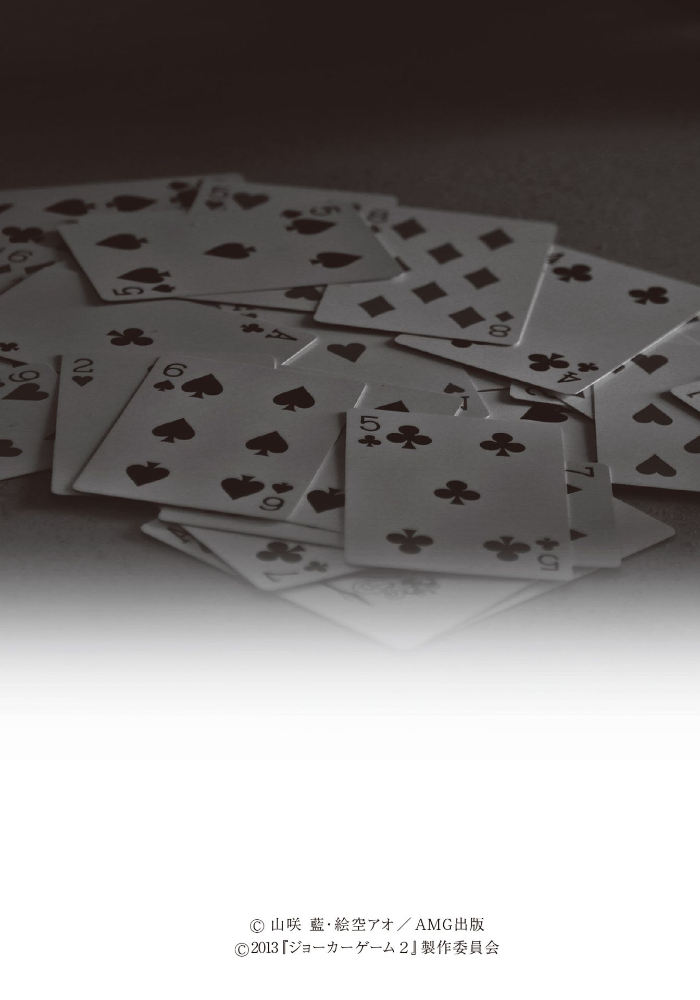
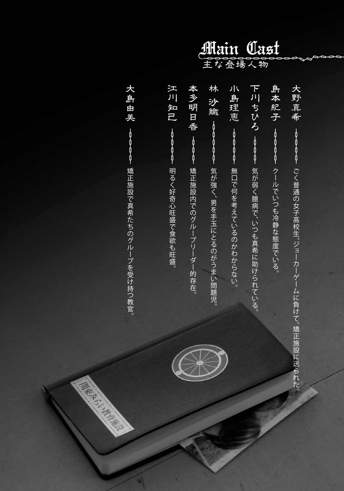
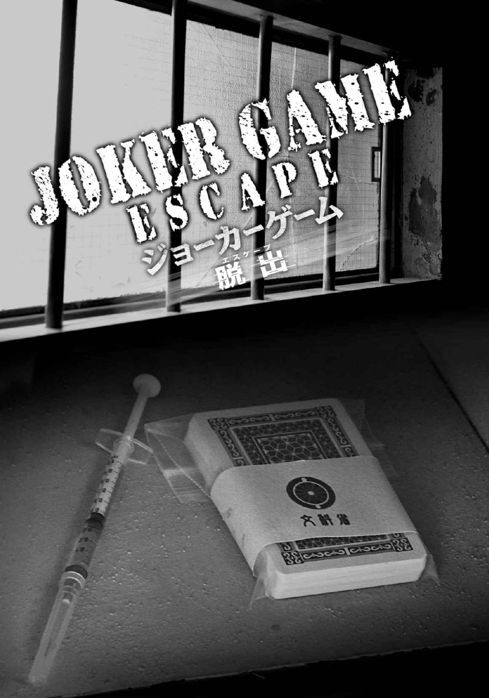
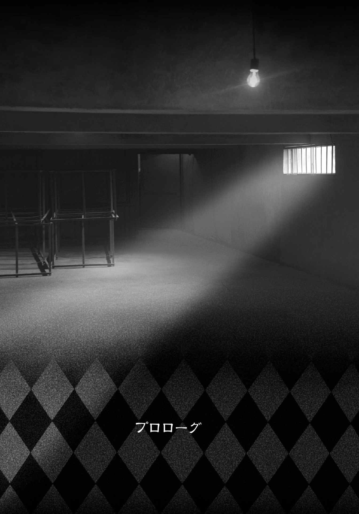
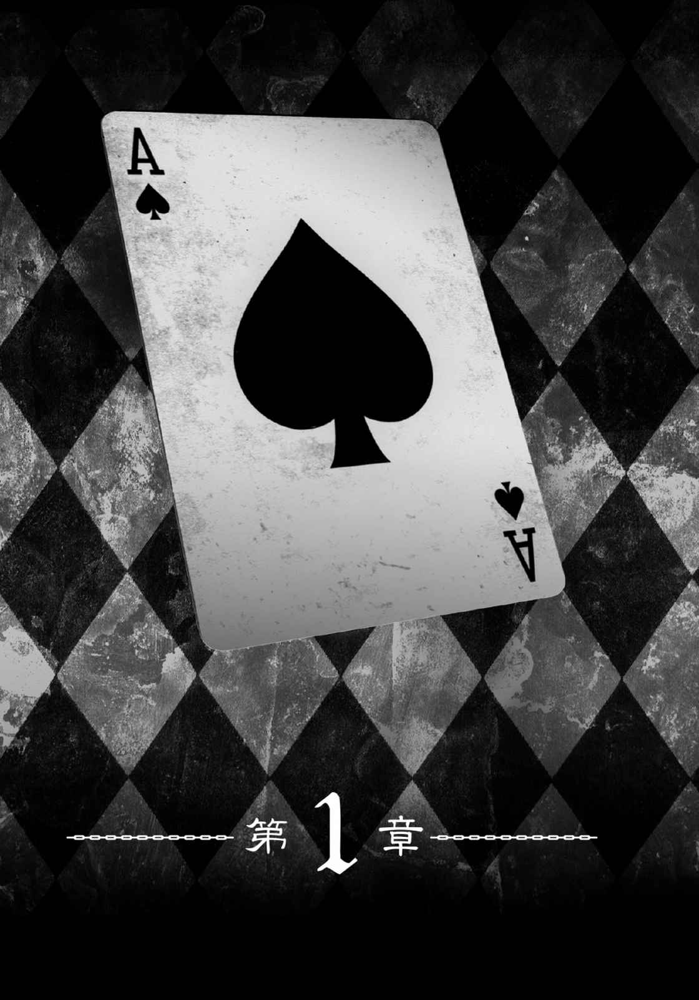
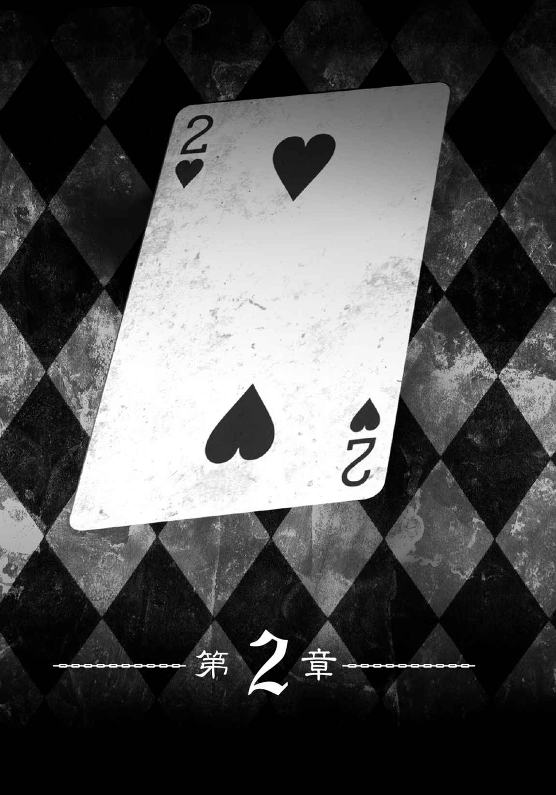
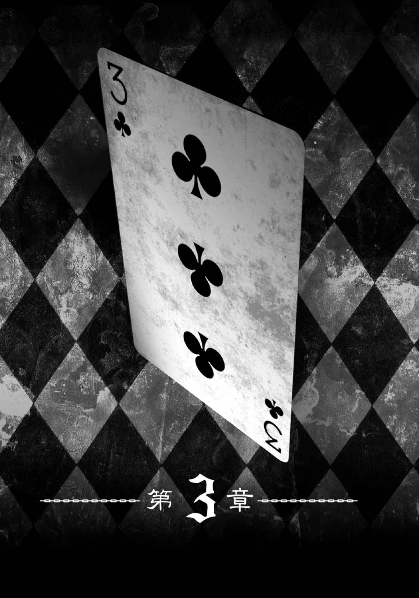
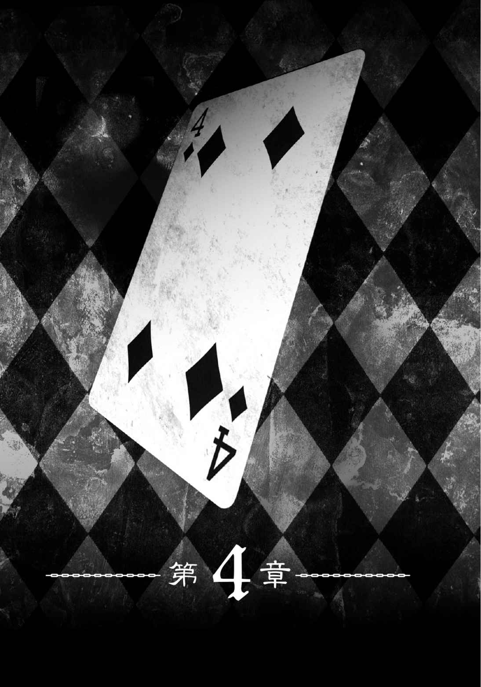
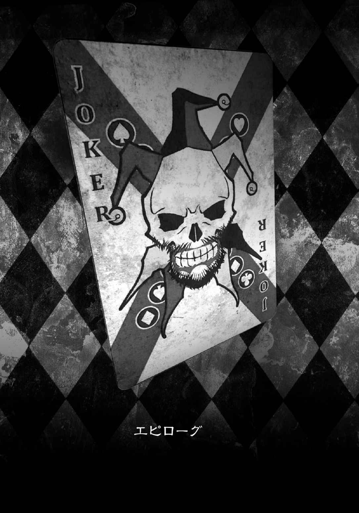

| JOKER GAME ESCAPE (竹書房文庫) | |
| 山咲藍 & 絵空アオ | |
| (2014) | |




それが真実だった。
古びた小部屋に、悲痛な叫びが響く。
「そんな......なんでそんなこと、なんの......ために」
少女たちの血塗られたゲーム。敗者は嘆き、勝者はただ見下ろす。
その差は生き残った者と生き残れなかった者。いや、
裏切った者と裏切られた者だ。
「この裏切り者!! 」と蹲 った少女は涙を流す。
数時間前まで一緒に笑っていた友達に、憎しみの視線をぶつける。
だが、勝者の少女は「親友」だったときと同じ笑顔と同じ声で告げた。
「信じるほうが悪いのよ」
そしてゲームは終わる。
『勝者──』

「......さん」
くすぐったかった。
誰かに耳元で名前を呼ばれたような。
なんだっけと思い出そうとして、しかし真 希 はすぐにやめた。
そんなことより今は大事なことがある。ゆっくりと意識が沈んでいく先は、暖かくて柔らかい雲の中。誰にも邪魔されまいと布団をたぐり寄せて──
「......真希さん！」
「はいっ」
ばさりと布団をはぎ取られて、大 野 真希は反射的に返事をした。
二段ベッドを四つ、詰めるように並べた大部屋。その一つの下段で目を覚ます。
「まったくいつまで寝ているんですか。もうあなたたち以外全員起きているんですよ」
まだぼやける頭にキンキンとした声が響く。本 多 明 日 香 がベッドのヘリの向こうで真希を見ていた。黒ぶち眼鏡 の奥で神経質そうに目を細めている。
真希が起きたのを確認して、明日香がカーテンを開けた。
途端に光が部屋に差す。
寝起きの目にそれは強い刺激だ。真希は思わず「うぎゃっ」とうめいた。とても華の十代、女子高生の声ではないなぁと頭の隅で思いつつ徐々に体を起こす。
と、下腹部のあたりがなんだか暖かい。
「ちひろ。起きて、朝だよ」
「んぅ。マキちゃん......？」
「うん。おはよう」
布団をめくるとふわふわとした栗 毛 色 の髪がのぞく。腰にぎゅっと抱きつくように寝ていたのは下 川 ちひろ。小さな目が親鳥を探すように真希を見つめた。
ちひろは赤ちゃんみたいな匂いがする。真希より一つ年下の彼女の頭を慣れた手つきで撫 でていると、だんだんと頭が冴 えてきた。
「おはよ」
「うん、おはようちひろ。さ、私たちも準備しよう」
「うん」
伸びをひとつして手ぐしで寝癖を直す。
そのとき上から元気な声が降ってきた。
「あら。マキっちもヒロっちも、また同じ布団で寝てたの？」
「あ、トモミちゃん」
「おはよう知 巳 」
ベッドの上段から顔を覗 かせたのは江 川 知巳だった。彼女が上で動くとベッドの底板が音を立てて軋 む。最近食べ過ぎて二の腕が少しヤバいのだとか。いつだったか「トモミちゃんが落ちてきたらどうしよう」とちひろが本気で心配していて、真希は必死で笑いをこらえたものだ。
どうやら今朝もおやつを食べているらしい。
「飽きないわよね。はむっ。二人ともいつも一緒に寝てるじゃない、はむっ。ヒロっちのベッドなんてもう、はむ、あんまり使わないからホコリが積もってるんじゃないの。はむ」
ちひろのベッドは部屋の反対側の上段だ。その下では既に支度を済ませた小 島 理 恵 が静かに読書をしていたが、ふと目が合う。
「なに？」
「おはよう。それなに？」
「『ハムレット』。シェイクスピアよ」
面白いのと聞くと、理恵は表情を変えずに「そうね」とだけ答えてまた顔を戻した。
物静かな彼女は自分のことをあまり話さないので今でも謎 が多い。ただ知巳の推測によると、かなりのお嬢様じゃないかということらしい。なんでもずっと美 味 しいものを食べてきた匂いがするのだとか......。
「あ、トモミちゃんまたお菓子食べてる。朝ごはんの前だよ」
「はむっ。お腹 が鳴った音で起きちゃったのよ」
「落ちてこないでね......」
心配そうにちひろが言って知巳が盛大に咽せた。
パジャマを脱いで制服に着替える。
ブラウスとプリーツスカートのバランスが気に入らず、スカートを盛大にめくってブラウスの裾を引っ張っているところに、部屋の扉が勢いよく開いた。
「ね～。準備終わったァ」
ハスキーな声が飛び込んでくる。
ウエーブのかかった髪に小麦色の浅黒い肌。みんなと同じ制服とは思えないはだけた胸元には、クッキリとした谷間と見せブラではないピンク色のレースが露出している。
林 沙 織 。彼女も同じ部屋の住人だ。
「沙織さん。今までどこに行っていたんですか。どこかへ行くときはちゃんとリーダーの私に申告してもらわないと困ります。皆で点呼を取らないと罰則なんですよ」
「ゴメンってェ～アスカ、委員長みたいに言わないでよ。それよりさ、アタシのリップ知んない？」
「......それなら洗面台に置いたままでしょう」
明日香の注意を聞き流して、沙織はしなっと腰を振って洗面台に向かう。
そのときちょうどベッドから出てきた理恵とぶつかった。理恵の持っていた本が乾いた音を立てて落ちる。
「じゃーまっ」
沙織は笑って言う。キッと睨 み返す理恵。
「ぶつかったのはそっち......」
「身長も胸も小さかったから見えなかったァ」
この二人が初めていがみ合っているのを見たのはいつだったか、逆に仲良くしているときが思い出せない。寝ているとき以外、なにかにつけて沙織がつっかかる。大人しい理恵も沙織にだけは火がついたように反応した。こういうのを犬猿の仲というのだろう。
不穏な気配を感じ取ってちひろが真希のブラウスの袖をぎゅっとつかんできた。
大丈夫だよと言うように頭を撫でて、真希は明日香にパスを飛ばす。
「明日香、そろそろ時間なんじゃない」
「ええ、そうですね！ ほらそこもやめてください。定刻行動ですよ。分かっているんですか。ここは学校ではなく──矯正施設 なんですよ！」
部屋の音がぴたりとやんだ。
全員が無言で明日香を見る。
そう。ここは学校でもなかよしこよしの学生寮でもない。
『ババヌキ』
真希たちは全員、あの無情なゲームで敗北し、強制的にこの施設へと連行されてきた生徒だった。
袖を握るちひろの力が強くなった。
＊ ＊ ＊
真希たちは部屋を出ると六人で食堂へと向かう。
矯正施設での生活は行動時間が細かく決められている。教官と呼ばれる指導員たちの徹底的な監視と班行動。逆らえば厳しい罰則が科せられる紛れもない収容所だ。しかし、それに従ってさえいれば、部屋にお菓子を持ち込むことも、派手な化粧も問題ない。
「あれ、ちょっと待って紀 子 は？」
「ああ。彼女なら先に行っているわ」
明日香がこともなげに言うからには、紀子はあらかじめ彼女にその旨を伝えていたのだろう。
ここにいない島 本 紀子を入れた七人が真希たちの班だ。
長い廊下をまっすぐ進む。窓の外では既に食事を終えた班が庭に整列していた。彼女たちはこれから奉仕活動をするのだろう。
奉仕活動とは、施設に連れてこられた少女たちが毎日強要される労働のことだ。
活動の内容は縫い物だったり機械の修理だったりと様々だが、まるでドラマで見る刑務所のような仕事ばかり。ここにいる全員が少し前までただの高校生だったというのに。
毎朝、食堂に向かう廊下で同じ思いを嚙みしめる。戻りたい、と。
「真希」
聞き覚えのある声に視線を戻すと、こちらに向かって歩いてくる人影があった。
島本紀子。すらっと伸びた背筋にモデルのようなスタイルは、班の誰より大人に見えた。理恵と同じく自分のことをあまり話さず、気 安 くたずね難い雰囲気がよりクールな印象に見せている。
だが、
「うげっ」
沙織が朝から嫌なものを見たというようにうめいた。視線は紀子の首元へ。紀子の首筋には大きく走る傷痕がある。ボタンひとつ外しただけ、襟元から覗く肌は痛々しく引きつり、深くえぐれた傷だと分かる。
真希はつとめて表情を変えないように「おはよう」と言うと、紀子はふっと微笑 んだ。
いつまでも見つめ合っているわけにもいかず、七人そろって食堂に入る。
入り口に立つ教官の前で点呼を取り、カウンターに出来ている配膳の列に並ぶ。
「あ、大 島 教官」
誰がつぶやいたのか、カウンターの先に一つの人影を見つけた。
ここにいる高校生より一回りほど年上の女性教官で──真希たちの班の担当教官だった。化粧も薄く一見親しみやすい美人だが、笑顔を向けられるとなぜか背筋に冷たい氷を当てられたような気分になる。
正直朝から見たい顔じゃない......。
「おはようございます」
全員が条件反射で「おはようございます」と返す。
「全員よく眠れましたか？」
「はい。ありがとうございます。大島教官はどうでしたか」
代表で明日香が答えた。
「ありがとう明日香さん。私もよく眠れました。皆さん、今日はあなた方に大切なお仕事があります。そのためにもしっかりと食べてくださいね」
そう笑顔で告げると大島教官は食堂から出て行った。
配膳されたトレイを持って空いているテーブルを探す。
長テーブルの隅に空席を見つけて全員で腰を下ろした。
「さっきの大島教官、なんだろうね」
口火を切ったのはちひろだ。本人の不安がつい口をついてこぼれてしまったのだろうが、周りもそれに乗って続ける。明日香が言った。
「大切な仕事って言っていましたよね」
去り際の大島教官の笑顔が真希たちの心に漠然とした不安を広げる。
「ねぇ、リエっちー。今日も牛乳もらっていい？」
口数が少なくなったところに、場違いなほど明るい声で知巳が手を伸ばした。
「......どうぞ」
呆 れたようにため息をついた理恵が出された手に自身の牛乳を差し出す。わぁっと歓声を上げる知巳の表情は待っていましたといわんばかりだ。
真希の隣で知巳の姿を眺めていたちひろにも、つられたように笑顔が伝染する。
「トモミちゃん。わたしのもいいよ」
「やった！ サンキュー、ヒロっち」
ぐびぐびと牛乳ビンを傾ける知巳は実に幸せそうだった。
「ったく、あんたは空気読まないわねェ」
「でもさーサオリっち、教官もしっかり食べろって言ってたよ。それに矯正施設ってどんな所かと思ったけど、奉仕活動以外は規則が厳しいってだけの普通の学校じゃん。ちゃんと授業まで受けさせられるしー」
「まァそうね。どうせなら面倒なガッコの真似事はやんなくてもよかったのに」
「わたしは......、マキちゃんたちと一緒に生活できるの嬉 しいな......」
「あーアタシはそれもパス！」
沙織はケラケラと笑って言う。
紀子は一人真剣な顔をしていた。
「どうしたの紀子？」
「......なにか変」
一人会話に加わらない紀子に真希が声をかけると、なにかを考え込んでいるようだった。
声から真剣さを感じ取ったのか、沙織たちも話をやめて紀子の声に耳を傾ける。
「だって、ワタシたちは、あの『ババヌキ』で負けたのよ」
紀子の左手が首筋をなぞった。
一同はその言葉で思い出す。自分たちの──『ババヌキ』を。
最初はゲームだと言われた。
文科省推薦、教育プログラム──『ババヌキ』
義務教育延長法によって「人間力」を高めるために導入されたテストで、全国の高校生の中からランダムに対象クラスが選ばれる。
テストに選出されたクラスは隔離され、生徒同士でゲームを戦わされた。ゲームの敗者は「更生」の名目で、矯正施設へと連れて行かれた。
恐怖に呑 まれて脱走した者には死が。ゲームを放棄した者には死が。
戦うしか選択肢はない。昨日まで「友達だよ」と言っていた口から、裏切りの言葉が吐き出される。
騙 し、裏切り、奪い、奪われ、蹴落とし合うゲーム。
それが真希たち七人の、いや、この施設にいる全員の等しく通った道だった。
「イヤッ！」
唐突に短い悲鳴が上がる。ちひろが頭を抱えて震えていた。
とっさに真希が肩を抱き寄せて落ち着かせる。
それを笑うものは誰もいなかった。
「大丈夫だよちひろ。落ち着いて」
「っ。マキちゃん......」
背中をさすると徐々に震えが収まってきた。周りで食事をしていた生徒が何事かと注目してくるが、明日香が事情を説明するとすぐに興味をなくしたように戻っていった。
「でもほらっ！ あたしなんて焼肉おごるから負けてって言われてまんまとやられたの！」
知巳がいかにも間抜けっぽく聞こえるように声を張り上げた。
「知巳さん。自分が負けた理由は言っては駄目な決まりよ！」
「今のであんたがマヌケだってことは証明されたわねェ」
「そんなー、アスカっちもサオリっちもひどいよー」
テーブルにようやく小さな笑いが広がった。
悲鳴に驚いた生徒がそれぞれの食事に戻っても、七人が一喜一憂するテーブルを遠くから眺める視線があった。彼女たちが食事を続ける間休みなく送られる視線。
もし視線に真希たちが気がついたならこう思っただろう。
──背筋に冷たい氷を当てられたようだ。
＊ ＊ ＊
部屋に戻った七人は思い思いに過ごしていた。
いつもならそろそろ奉仕活動に出る時間だが、今日は担当の大島教官から何の指示もなく、いまだに活動の内容も集合場所も知らされていない。大方、食堂で言っていた「大切な仕事」のために予定が変わったのだろう。
真希はちひろと一緒にベッドに座って、髪を結んであげていた。
肩まである栗毛色の髪をくしで丁寧にすいていく。ちひろの髪はふわふわだ。
食堂に出かける前にある程度の身支度は済ませたものの、せっかく時間があるのだからお風呂上がりにするみたいにゆっくりと時間をかける。
「マキちゃん」
「ん～」
髪ゴムを咥 えていて、鼻からぬけた返事が出た。
話しやすいように一度手首にゴムを通して、なになにと促す。
「今日の仕事ってなにをやるんだろうね」
どうやらちひろはまだ食堂でのことを引きずっているらしい。
今度は答えに困って、んーと声が鼻からぬける。仕事の内容を知らない真希がどう言ってもちひろを安心させてあげられる答えにはならない。
「ちひろ」
髪をすいているおかげで顔が見えないのをいいことに、真希が眉を寄せてあれこれ考えていると紀子がベッドに近づいてきた。
「その、さっきはごめんなさい。ワタシのせいでイヤなこと思い出させちゃって」
おじぎをするみたいに丁寧に頭を下げた紀子に、ちひろは一瞬どうしたらいいか分からず戸惑ってから慌てて両手をぶんぶんと振った。
「そ、そんな！ い、いいよノリコちゃん。わたしは臆病なだけだから」
「いいえ。あのゲームのことはここにいる誰にとってもデリケートな記憶。ワタシが迂 闊 だった......」
頭を上げない紀子に、ちひろは「えっと」とか「でもでも」と言葉を詰まらせながらなんとか自分が悪いのだと主張しようとしていた。真希が髪を触っているから動けこそしないが、そうでなければ紀子と鏡合わせに頭を下げていたかもしれない。
「ん。よしできた！」
真希は綺麗に結べたポニーテールに満足すると二人へ向き直った。
「ちひろ、紀子は心配してくれてるんだよ。紀子はこんなだからさ、うまく言えてないけど。ほら、もう頭を上げなよ。仕事の前にちひろの両手が腱 鞘 炎 になっちゃうよ」
二人はばつが悪そうに見つめ合うと小さく笑った。
ちひろからやっとおどおどした雰囲気も消えて、紀子が目でありがとうと言ってきたので真希はちひろに見えないよう、こっそり親指を立てた。
チャイムが鳴ったのはそんなときだった。
間延びした電子音が途切れると、感情のない連絡用のアナウンスが施設全体に響いた。
『Ａ棟六十六班に連絡します。これより身体測定を行います。チームリーダーは全員を連れて速やかに保健室まで来てください。繰り返します──』
やがてアナウンスが終わると間延びした電子音をもう一度響かせて放送は終わった。
「身体測定？ また......でしょうか？」
呼び出された班の番号は真希たちの班に割り振られたそれだ。
明日香が誰に言うでもなく首をかしげる。
その疑問は当然のことだった。多少のばらつきはあるものの、真希たち七人がこの矯正施設に送られてきてまだ三ヵ月程度しか経っていない。身体検査自体は施設に連れてこられたその日に受けたのに、なぜこんな中途半端な時期にもう一度受けるのだろうか。
「アタシはいいけどね。おっぱい大きくなってるか測ってほしいし」
「あなたは気楽ね」
「まァね。胸のないお子様は必死だったかしら」
理恵の瞳が鋭く細まる。今朝のケンカがここで再熱してしまった。
「あ、あたし食べ過ぎたぁ────！」
絶妙のタイミングで空気を読まない知巳が大声を上げた。
「......」
水を差された理恵がため息をつく。
「あんたは気楽ねェ」
理恵に言われたセリフを、意図せず沙織はそのまま言ってしまっていた。
その頃合いを見て明日香がまとめた。
「さあ。よく分かりませんが呼び出された通り、保健室に行きます！ 準備があるなら急いでください！」
リーダーの明日香がパンパンと手を叩 いて全員が行動を始めた。
「まったく。沙織さんがあんなに時間をかけるからですよ！」
「ゴメンって言ってんでしょ」
沙織が部屋を出る直前に髪型が気に入らないとごねたせいで、真希たちは早歩きで保健室を目指すことになってしまった。
「ああ。六十六班着きましたね」
廊下を曲がって、保健室の前に着くと男性教官が出迎えた。遅刻による罰則がないことに明日香はほっと息をついている。
男性教官は、真希たちが部屋に入った後の手順を一通り説明する。
「──という感じです。質問はありますか」
七人の顔を見回した男性教官はやがて一人に目をとめる。
「理恵さん。なにか質問がありますか？」
「い、いえ。その......なにもありません」
珍しく歯切れの悪い回答をする彼女は心なしか様子がおかしい。だが誰かがなにかを言う前にしなを作った声が邪魔をした。
「しっつも～ん。教官は一緒に入らないんですかァ？」
全員の視線が集まると、沙織はことさら艶 っぽい声で言う。
「アタシの服脱がしてよ～。べっつに初めてじゃないでしょ」
蠱 惑 的な瞳がいやらしく細められる。わざと細身を選んでいる制服のブラウスは男を誘うようにはじけそうな危うさで胸を強調している。沙織が視線を誘導するように胸元に手を這 わすと、深い谷間と小麦色の乳房がこぼれんばかりに盛り上がっているのが見える。
「は、林さん。関係ない話はしないでください......」
「ふーん」と沙織は含みをもたせたような返事。
それは男性教官が胸元から目をそらしたことに対してなのか、それとも理恵だけを名前で呼んだことに対してなのか。
真希も一瞬だけ理恵の顔を窺 ったがすぐに考えるのをやめた。
「さあ皆さん。中で大島教官がお待ちですよ」
微妙な雰囲気が一同には満ちていたが、男性教官に促されて七人は扉をくぐった。
説明を受けたとおり、部屋には壁沿いにロッカーが並んでいて、薄い仕切りの向こうでも人の動く気配があった。
まずはここで服を脱いで薄手の検査着に着替える。準備ができたら仕切りのドアから隣室に移動しろということらしい。
「さァ、ちゃっちゃと始めるわよ」
部屋に入った途端、何事もなかったかのように沙織は服に手をかけて脱ぎだした。理恵も無言で自分の服を脱ぐ。当事者がそろってそうすると周りもそれに続くしかない。
だがやがて、明日香が意を決したように沙織に詰め寄った。
「さ、沙織さん。さっきのはどういう意味なんですか！」
「なに委員長。いい子ぶってるわりに気になるんだ」
「べ、別にそういうことじゃありません。班の人間が規則を破っているとリーダーとして見過ごせないだけです」
「隠さなくてもいいしー」
沙織はなにを思ったか、制服を脱ぎ捨てて下着だけの姿になると、半裸の明日香に抱きついた。
「あはっ！ 意外とおっぱい大きい、委員長って着やせするタイプだったんだ。ねぇ教えてよ、何の規則に違反するの？」
「ちょっと沙織さん!? 」
制止の声も聞かず、明日香の肢体をまさぐる。まるで沙織が明日香を絡めとっているようだった。
「ちょっと沙織」
さすがに見ていられなくなって真希が止めに入る。すると被害は真希にも飛び火した。
「ナニ、マキも気になんの？ アタシ知ってるわよ。あんたら、アタシが施設中の男とヤってんじゃないかって前に話してたわよねェ」
保健室の前で見せたのと同じ、淫 靡 な視線が真希の体を値踏みするように這い回る。
ちひろは怯 えて縮こまった。
「あ、それよりあんたの興味はチヒロか。いーんじゃないのォ。そこの無口なちびっ子よりはチヒロの方が胸もあるでしょうしィ」
「やめてくれない。いい加減怒るよ」
そのとき部屋を仕切る板の壁が向こう側からノックをするように軽く叩かれた。
「......」
真希と沙織の視線が交差する。やがて沙織がなにも言わずに視線を落とした。
いやらしく作っていた声をやめて「ゴメンゴメン」と謝ると、「あんまりウブだからチョーシにのっちゃった」と捨てゼリフを吐いて一人先に隣室に消えていった。
「マキちゃん......」
心配そうに寄ってきたちひろの頭を撫でる。明日香はやや混乱しながら乱れた衣服を整えていた。
「さぁ早くしないと。大島教官に怒られるよ。............ちひろも先に行っててくれる」
真希が手を離すとちひろは名残惜しそうだったが、これはいつものことなので、先に着替えを済ませたちひろを見送った。
一同は着替え終わった順に隣の部屋へと移動する。
最後に紀子が一度だけ真希を振り返ってから部屋を出た。
一人になって扉が閉まる。
それまで一切服に触れなかった真希は、そこで初めて服を脱いだ。
誰もが薄々は勘づいているだろう。それでも真希は毎回一人になれる場所でしか服を脱ごうとはしなかった。
腕や足など普段でも露出しているところを見ているだけでは分からない。だが、服を脱いだ真希の体には、直視しがたいおびただしい数の傷が刻まれていた。
真希は急いで着替えを終えるとちひろたちの後に続く。
仕切りの向こうの光景は予想外のものだった。
てっきり体の成長を測る器具などが並べられているものだと思っていたのだが、そこにあったのはずらりと並んだ大きなイスだけ。
「あと二分でそろわなかったら、懲罰でしたよ。やっと全員きましたね。さあ、一人ずつそこへ座ってください」
大島教官が指したのは全身を包むほどに大きなイス。まるで産婦人科にある内診台のよう。それが人数分並んでいた。
促されるまま、全員がイスへと座る。
そこに数人の教官がトレイを持ってやってきた。トレイには紙コップが乗せられている。
「それを飲んでください」
真希は手元に配られたコップの中身を見る。透明な水のような液体がなみなみと満たされていた。
「あの、大島教官」
「なんですか、明日香さん」
「身体測定だと聞いたのですが、これは」
入所時に受けた測定とのあまりの違いに、明日香が大島教官にたずねた。教官たちの仕事を一人見守っていた大島教官は明日香へと近寄って言う。
「大丈夫ですよ明日香さん。これから行うのは施設に入ったときの測定とは違い、皆さんの中身を測る測定なんです」
沙織が「おっぱいの測定はしないんですかァ」と軽口を飛ばす。
「沙織さん。胸囲の測定がしたければ後で特別に手配させましょう。まずはその検査薬を飲んでください」
口調は穏やかだがどこか逆らえない雰囲気をもって大島教官は言う。そして付け加えるように「大丈夫、ほとんど水と変わりません」とにっこりと笑った。
再度「さぁ」と促されて、真希たちは誰からともなくコップを傾ける。
検査薬と言われたモノは、ほとんどなんの味もしなかった。
全員が液体を飲み干して、コップをトレイに返すのを見届けると、もう一度大島教官は満足そうに笑った。
「マキちゃん......」
隣のイスからちひろが不安げに名前を呼んだ。真希は安心させるように微笑む。
「いい子たちですね。それでは──測定を始めましょう」
次の瞬間、小さな金属音とともに体が窮屈に締められた。
イスから飛び出したベルトが体を縛っているのだ。
腕に。足に。腰に。そして首に。
驚く間もなく体の動きが封じられた。
「あがッ......！」
いくつものくぐもった悲鳴が上がる。
全身をイスに縛り付けられて身動きひとつ取れない。
「ちょっ、コレなんなのよォ！」
「沙織さん。お静かに」
大島教官の声だけが変わらず穏やかだった。
「これより皆さんの測定を始めます。動かないでくださいね」
さっきまでトレイを持っていた教官たちの手には、謎の液体を満たした注射器が握られていた。管の中は無色透明、だがもう今となってはとても無害なものとは思えない。
「あなた方はとてもいい子です。ですが、ここにいる皆さんは『ババヌキ』で一度敗北した負け犬でもあります。すでに一度負けたあなた方が社会に復帰するのは困難の極み。ですから、これから皆さんの中身 を測定して、立ち直れる人間を選別したいと思います」
消毒液の臭いがツンと鼻孔を刺激した。
どんなに身をよじってもイスはびくともしない。
そして教官たちは注射器を持ち上げる。針がゆっくりと腕の中に──
「最後までいい子でいられるのはどなたでしょうか」
＊ ＊ ＊
ひどく意識がぐちゃぐちゃしていた。
熱を出して意識が朦 朧 としたときの感覚と似ている。
「......キちゃ......。マ......ちゃん......」
誰かに呼ばれてる？
「マキちゃん。マキちゃん！」
「ち、ひろ......？」
「マキちゃんっ！」
目を開けると、安 堵 したように相好を崩したちひろが覗き込んでいた。
背中が冷たい。真希は今、硬い床の上に寝ているらしい。
起きようと体に力を入れると節々が痛みを訴えた。
「マキちゃん、大丈夫......」
「うん......。ちひろ肩貸してくれる」
ちひろに支えてもらって上体を起こす。蛍光灯のまぶしい光に目を細めると、そこは見たことのない教室だった。
一見、何の変哲もない教室のようだが窓はなく、ただの壁に白いカンバスが窓のようにかかっていた。窓ではないのにカーテンだけはついている。そして、生徒がいるかのように整然と机が並び、後ろの壁際には本棚があった。
普通なら教壇のある黒板前に真希は寝転がされていたようだ。
そのうえいつの間にか着替えさせられており、検査着から制服に戻っている。
「真希さん。大丈夫ですか」
目を覚ました真希に気がついて明日香が駆け寄ってきた。その後ろでは紀子も気遣わしげに視線を送っている。
「ここはどこ？」
「分かりません。眠らされてここに運ばれたみたいです。起きたのはあなたが最後」
見回すと、沙織は机に腰掛けてだるそうにあくびをし、理恵は教室を探るように隅々まで眺めていた。
「あれ知巳は？」
そのときガンガンと硬いものを叩きつけるような音が響く。
「あーもー、全然ダメびくともしない！」
教室の隅で入り口と思 しきドアを叩いていた知巳が「ダメだわ」と振り返る。
「ドアはこれ一つみたいなんだけど、硬いのなんの......」
「私たちどれくらい眠ってたんだろ？」
真希の疑問に紀子が答えた。
「ワタシが最初に起きたの。ここの時計は止まってるし、窓もないからその時点でどれくらい時間が経 ってたのかは分からないけど、みんなを起こしてからならまだ十分も経ってないはず」
「おそらく、あのとき飲まされたのが睡眠薬だったんでしょうね」
そう明日香が結論付けると、まるで待っていたようなタイミングで間延びしたチャイムが響いた。
ぴ～んぽ～んぱ～ん ぽ～～ん♪
息を殺して全員が周りを見回す。と、天井の角からぶら下がっているテレビに勝手にスイッチが入った。
砂嵐が画面をかき乱し、異音がスピーカーから流れる。
唐突に砂嵐が晴れて、人影が映し出された。
『イらっしゃイ！ ウェるかむ、よウこそオイでくださイました皆々様!! 』
男なのか女なのか分からない。いや、そもそも人間なのか。
そこにいたのはサーカスのピエロのような仮面。
陶器を連想させる白い顔に、片方の頰 には涙のしずくのような模様、そして赤っ鼻。目玉のあるべき場所にはぽっかりと空洞が空いていた。
ボイスチェンジャーで散々弄 り回したような声は、人の声とは思えず、機械音声のようだった。
『ワタシはジョーカー。皆様をここへ招待させてイただイたモノでござイます』
「ジョーカー......」
真希たちは無言でテレビの見える位置へと集まる。
『アなた方は、一度ゲームで負けた敗北者。本来ならこの先一生、矯正施設から出られることはアりません。──ですが、ワタシはそんなアなた方にチャンスを与エて差し上げよウかと思イました。この部屋から脱出するのです。この部屋の出口は施設の出口へ繫 がってイます。無事に脱出できた皆様は晴れて自由の身。ですが時間はアりません。なぜなら、アなた方の体には毒が仕込まれてイるからです！』
全員の呼吸が止まる。
意識を失う直前の注射を思い出した。
『タイムリミットは二時間。それまでに脱出できなければ、体中へ毒が回り皆様はここで死んでしまウでしょウ』
真希は思い出す。
矯正施設。どんなに普通に見えても、ここはあの『ババヌキ』で負けたものたちが連れてこられた収容所なのだ。平穏は全てまやかし。
急に空気が冷たくなったように感じる。
『さァ、────ゲームの始まりです！』
真希たちは再びあの地獄に叩き落とされたのだ。蘇 る恐怖に鼓動が速まる。
仰ぎ見る先は正面の黒板。
いつの間にか白い字で〈ジョーカーゲーム〉と刻まれていた。
「ふざけんな！ 毒ってなんなんだよ！」
沙織が画面に向かってわめき、知巳はもう一度扉を叩き出した。冷やされた空気が再び熱せられるように、部屋が騒音で満ちる。だが、
「お静かに！」
明日香の一喝が音を止めた。仮面 の説明はまだ続いている。
『アなた方にはそれぞれ、脱出の手助けをする【アイテム】を配らせてイただきました』
明日香が自分の服をまさぐる。真希もそれに倣うと、スカートのポケットが変に膨らんでいた。慎重に手を入れて取り出す。それはガラスでできた【グラス】だった。
ワインを飲むときに使うようなそれを、しかしいったいなんのために使えというのか。
と、そのとき光を反射したグラスに偶然紀子の顔が映った。ガラスの中の彼女は、どうしたことかひどく青ざめている。
気になって声をかけようと振り向くが、しかしそのとき別の悲鳴が真希の意識を持っていった。
「イヤァ！」
皆の視線をたどると、今にも泣き出しそうなちひろがいた。
「ちひろ......？」
「マキちゃん......」
ちひろの手には、それがおそらく仮面 に配られたアイテムであろう一枚のカードが握られていた。手が白くなるほどに握り締めたカードを持ち上げる。
「ジョーカーのカード......」
明日香が小さくつぶやいた。
ここにいる全員に見覚えがある。あの『ババヌキ』で最後まで手元に残った悪魔のカードであり、トラウマの象徴。それが今ちひろの手に握られていた。
止まった時間に、仮面 の声が響く。
『それではワタシから最後にヒントを。──裏切り者は誰だ？』
「っ！」
空気が変わった。ちひろに向けられていた視線の色が恐怖から疑惑に染まる。
仮面 がそれだけ言い残すとプツンとテレビは消えてしまった。
「ちひろさん......」
「ち、ちがっ！」
「チヒロォ、あんたが裏切りモン？ 誰に言われてるのか知んないけど、アタシらをさっさとここから出しなさいよ。毒打たれてんのよ!! 」
「わた、わたしじゃ......」
全員の視線に晒されてちひろの体がかわいそうなくらいガクガクと震えた。
めいっぱい開かれた瞳から大粒の涙がこぼれる。誰の顔を見ることもできずにうつむいたちひろは自然と手の中のカードに目を落とした。
そして、ジョーカーのカードは彼女を追い詰める後押しにしかならなかった。
「こ、これは、あのときの......」
ちひろの体が跳ねた。
「あ......」
くぐもった水音が響く。内腿を伝い、止められなくなったぬるい一筋が床へと流れて広がる。
毒薬を注射されたと知っただけでもかなりの衝撃だった。そこへトラウマのカードが現れ、さらに仲間からの裏切り者呼ばわりで、ちひろは耐えきれず失禁していた。
鼻を刺す臭いが漂い、ちひろの足元には水 溜 りができていた。
「うっ......うぅっ......」
水溜りの中心で泣き崩れる彼女に、さすがにばつが悪くなった沙織たちは閉口する。気まずい沈黙が流れる中、唯一真希だけがちひろに近づいた。
「ちひろ」
そばまで歩み寄り、濡れるのもかまわず水溜りに膝をつく。目線を合わせるとゆっくりと彼女の頭に触れた。そしていつもそうするように優しく撫でる。
「マキちゃん......」
「大丈夫。大丈夫だよ。私はちひろの味方だから」
そう言って真希は自分の上着の袖に手をかけて力一杯引っ張った。びりっと音がして上着の縫い目が裂ける。
破り取った左袖を雑巾のように使って水溜りを拭 き始めた。
「マキちゃん。だ、だめ、汚い......」
「大丈夫だから。ね」
続いて横からも布を破く音がした。
真希の隣に紀子がしゃがみこむ。真希は一度紀子と目を合わせると、後は黙々と拭き続けた。どうにか泣き止んだちひろも脱いだソックスで床を拭く。拭き終わったものを教室の隅にまとめ、紀子が片袖を破いた自分の上着を脱いでかぶせた。
真希は全員に向き直って言った。
「みんな。ちひろが裏切り者だっていう証拠はどこにあるの？ ジョーカーのカードがなんなのかもまだ分からないのに、このまま自滅してもいいの？ とにかくここを出なきゃ死ぬだけでしょ。やたらと疑うのはやめて協力しなきゃ！」
やや考えるような間が空いて、明日香が乗った。
「......そうですね。裏切り者探しより、まずはここを出るために行動しましょう」
異論は上がらなかった。
「では、全員の配られたものを確認しましょう」
「私はコレだけど」
真希がグラスを取り出して見せる。
やはりなんともいえない反応が返ってくるが、他に配られたものにも皆似たり寄ったりの反応しかできない。
明日香には【聖書】
紀子の【鍵】
知巳は【携帯電話】
沙織は【マイナスドライバー】
理恵の【リモコン】
ちひろは例の【ジョーカーのカード】
真希の【グラス】と合わせて七つの道具がそこに示された。
「その鍵で開くんじゃないの？」
「ダメ。ここのじゃないみたい」
紀子の持つ鍵は古い宝箱にでも挿すようなものだが、この教室の扉の鍵穴はそもそも薄い板状に広がっていた。どうやらホテルのカードキーのようなものが必要らしい。
「知巳さんの携帯は？ それで助けとか呼べませんか」
「あ、そっか！ さすがアスカっち──あ、ダメだわ......。ここ圏外よ」
「そう簡単にはいきませんか」
あっさり携帯を諦める明日香に、沙織が皮肉っぽく笑ってみせる。
「圏外じゃなくてもさ、こっから誰にかけんの？ ケーサツですかァ？ バカじゃないの」
真希はちひろの背中をさすりながら言い合いを見ていた。
アイテムが与えられても、使い方はどうも単純にはいかないらしい。
「マキちゃんありがとう。もう大丈夫だよ」
「そう？」
「ゴメンね。わたしのせいで制服......」
「いいって、そんなの。言ったでしょ、私はいつでもちひろの味方。大丈夫、なにがあってもちひろは私が守るよ」
細い体を抱きしめる。ちひろの腕もおずおずと真希の背中に回されて、安心感を伝えるように彼女の背中をさすった。
制服越しに、ちひろの心臓の音を感じる。
「ちょっと！ 理恵さん。勝手に押さないで!! 」
明日香の甲高い声が飛んできたのはそんなときだった。
腕の中でちひろがびくっと身をすくませる。真希は腕を少し緩めて、ちひろの肩越しに様子を窺う。
「でも押さないと分からないわ」
「なにが起きるか分からないのに安易に押すのは危険だと言っているんです」
理恵と明日香がなにやらムキになって言い合っている。
理恵がいきなりリモコンのボタンを押したらしく、消えていたはずのテレビがついている。
画面に現れたのは薄暗い小部屋。
「どこかの、部屋みたいね」
「ちょっと理恵さん聞いているんですか!? 」
「そうだよリエっち、爆弾のスイッチかもしれないよ！」
「あんたは黙って」
次々に上がる声を無視して理恵はさらに別のボタンを押した。
どこかの小部屋だった映像がパッと切り替わる。今度は見知った部屋だった。
「てかコレ、アタシらじゃんッ!? 」
テレビには真希たちのいるこの教室が映されていた。沙織が驚いて立ち上がると、画面の中の沙織も立ち上がった。映像はリアルタイムで撮られているようだ。
「あそこ」
映像と部屋を見比べた理恵が、ある一点を指した。
黒板の上の時計。時計としては秒針の一つも動かないが、画面には理恵の指がまっすぐと突きつけられた形に映っている。
「監視カメラ......」
「サイッテー」
無言で画面から目をそらした理恵がボタンを操作する。
次に現れたのはどこかの部屋の様子ではない。それは数式だった。
『 ４×５＋７×３＋３×５＋０×５＋８×１ ＝ 』
「なによコレ？」
「答えは64 ですね」
「すご！ さすがアスカっち、はやっ！」
「だからそれになんの意味があんのよ」
「脱出のヒントじゃないですか。少なくともなんの意味もなく映しているとは思えませんし」
すると明日香は思いついたように、自分に配られた聖書を取り出した。そして64 ページを開く。......だがそこに答えらしきものは見当たらなかったようで、顔を上げた。
「６＋４で10 」
理恵に言われて今度は10 ページ目をめくる。だがそこにもやはりヒントになるようなものはなかったらしい。
謎解きはさらに難航していた。なにも思いつかない知巳など、さっきから腕組みをして部屋をぐるぐるといったりきたりしている。
「64 ねぇ。うーん64 、64 ......」
「だからァ、あんたは黙っときなさいってトモミ。どーせバカにはムリよ」
だがそのとき知巳が「あぁ！」と声を張り上げた。
「きっとコレのことよ！」
立ち止まって机の下の何かを拾い上げる。
それを見て「うげェ」と言ったのは沙織。知巳の手に握られていたのは巨大なバッタだった。
「なによそれ、キモッ！」
「でもほら、64 って６ ４ って意味じゃないの？」
はっと顔を見合わせたのは明日香と理恵。
「そんなの偶然落ちてただけでしょ。早く捨てなさいよォ！」
「でもコレ本物じゃなくて模型だよ。それにほら、なにか糸みたいなのが付いてる」
バッタの模型からは天蚕糸 のようなものが伸びている。糸をたどった先にあったのは、教室の壁にかかっていたカンバスだった。
本来窓があるべき位置にかけられている無地の白いカンバス。糸はそこへと伸びていた。
「見て！」
明日香が指差すのはカンバスの下。そこには美術館などで作品の題名が書かれているようなプレートが張られていた。書かれている文字は〈ムシ〉。
カンバスにはなにも描かれていないのに、題名だけが記されている。
「怪しいですね。知巳さんカンバスを外してみてください。裏になにかあるかもしれません」
「おっけーまかせて！」
だが知巳が引っ張ってもカンバスはなにかで固定されているらしく外れない。
「これネジで止められてる。サオリっち、そのドライバー貸して」
「あァ、なんでよ」
「いいからほら。みんなで協力しないと死んじゃうよ」
明日香からも「協力しなさい」と迫られて沙織は舌打ちをしながらドライバーを放り投げた。
「よっと。ありがと────よしきた、これで......」
知巳がカンバスを両手で支えながら外した、その瞬間だった。
外れたカンバスの真後ろ、壁の小さな穴から勢いよく液体が噴出した。避ける間もなく知巳の顔を直撃する。
「あああぁぁぁああああああああ!! 」
絶叫！ 液体が降り注いだ直後、それをカンバスで防ごうとした知巳は、女子とは思えない声を上げてのたうち回った。カンバスを投げ捨てて、両手で顔を覆う。
指の隙間からうっすらと煙が上がっていた。
「ああ、ああああぁ、あがぁぁああ！」
「知巳さん！」
助けに駆け寄った明日香が悲鳴を上げた。彼女を振り払おうとした知巳の腕から、赤いものがカンバスに飛び散った。
それはぐちゃぐちゃに溶けた知巳の顔、その一部。
皮膚が破れた所から血が噴出し、その中で白く見えたのは頰骨だった。まるでつぶれた粘土細工のように顔のパーツはどれも原形をとどめていない。顔が溶ける激痛に耐えきれず、知巳は無茶苦茶に暴れ、もがいた。
どろりとはがれ落ち、床で白濁の塊になったのは、眼球だったものだろうか。
知巳の絶叫が響く間、もう誰も近寄れなかった。金縛りにあったように呼吸すらままならず、ただただその光景から目が離せなかった。
悲鳴が止まったのは知巳の体がいくつもの机をなぎ倒して床に倒れたときだった。
「死んでる......」
そのつぶやきは確認ではない。だが誰もが分かっていた。
あの物体に命と呼べるものなど残っていないことを。
無地だったカンバスは血と肉にまみれていた。未 だに煙を上げてカンバスの上を蠢 く知巳だった肉は──さながら蟲 のようだった。
〈〈 GAME START
章間
その部屋はしんと静まりかえり、パソコンの低い駆動音すら騒音に聞こえるようだった。
照明はつけられておらず、光源は整然と並んだ四角いモニターだけ。
暗がりの中、青白いモニターの光に照らされて一人の女性が画面を見つめていた。画面の中には、色々な角度から切り取られたある教室の映像が映っている。
その中のひとつに、教室の時計に偽装したカメラから送られてくる映像があった。
画面の中では今まさに惨劇が起きている。
一人の少女が壁の仕掛けから噴き出た硫酸を浴びて倒れ伏した。散々のたうち回って、やがて小さく痙 攣 を繰り返すと巻いたネジが切れてしまったかのように動かなくなった。
ドロドロに溶けた顔面をクローズアップにして女性は口元をほころばせる。
ここでは音声がカットされているが、教室ではさぞ聞き応えのある阿 鼻 叫 喚 だったことだろう。
笑みを浮かべたまま手元の資料と見比べて、そこに並んでいる写真のひとつに静かに×印を付けた。
【生存──
大野真希
下川ちひろ
島本紀子
×江川知巳
林沙織
小島理恵
本多明日香
〈〈 NOW LOADING ......

それはひどい有様だった。
ついさっきまで知巳だったもの。ついさっきまで人間だったもの。
熱したナイフでバターを削 いだように、顔の起伏がなだらかに崩されて、捨てられたマネキンと区別のつかない顔。液状にまで溶けた皮膚はチーズのように糸を引くなど知りたくもなかった。顔と一緒に制服も溶け落ちて、露出した乳房がどこか淫 靡 なオブジェに見えた。
ソレはまるでゆがんだ現代アートのように現実感のない死体。
不気味な芸術性さえ感じて、感覚が麻 痺 してくる。
だが真希たちに完全な逃避をさせないのはひとえに部屋を包む臭気だった。
死臭──とでもいうのだろうか。
人肉が溶ける臭い。血液が蒸発する臭い。
あまりに濃い死臭が肺の中を満たす。咽せ返る。
次の瞬間、こみ上げるものに口元を覆った。すっぱい味が口いっぱいに広がって、真希はギリギリで歯を食いしばって堪 えた。
どこかでは堪え切れず吐 瀉 物 が床にぶちまけられる音がして、臭いにわずかな汚臭が加わった。今、口を開くのには凄 まじい勇気が必要だった。
「......ちひろ。そのまま動かないでね。絶対こっちは向かないで」
おそらく唯一ちひろは状況を直視していない。
幸運にも真希と抱き合っていた彼女は、知巳がカンバスを触っていたときに背を向けていた。事が起きた瞬間からは、真希が必死の力でちひろを抱きしめて振り向こうとした彼女の体を固定した。
「マ、マキちゃ......。トモミちゃんは......」
直視していなくてもあの絶叫と周りの雰囲気で分かるのだろう。いやそれ以前にこの臭いが直感的に人間が死んだことを伝えていた。
抱きしめる力が無意識に強くなる。
「知巳は死んじゃった......」
余計な情報の一切を省いて、それだけ伝えた。
予測はしていてもやはり告げられるまではどこかに希望があったのか。ちひろの小さい肩がビクリと跳ねる。
「......紀子、明日香。知巳の、知巳に......なにかを、かけてあげよう」
とにかく知巳の死体をちひろに直接見せるわけにはいかない。そう思って真希は二人に声をかけた。
「う、うん」
「......そうですね」
心して声を出したつもりでも、びっくりするほど真希の声は震えていて、そしてそれは紀子と明日香も同じだった。
ちひろに動かないように言い聞かせてから真希も立ち上がる。
吐き出したのは明日香だったようで、口元がうっすらと汚れていた。面と向かって注意はせず、真希は自分の口に袖を当てて二人に言う。
「二人とも、顔拭 いた方がいいよ」
三人でカーテンを裂いて知巳の死体にかぶせた。
「知巳......」
断末魔の叫びが今でも耳に残っている。
いつもほうけた風な知巳だ。あんな必死な声は聞いたこともなかった。
「チヒロ！ ねェトモミを殺したのはあんたなの!? 」
ギョッとして真希が振り向くと、沙織がちひろに詰め寄っていた。
「ねェってば。あんたが裏切りモンでアタシたちをハメてんのかって聞いてんのよ!! 」
「ちが、わたしは......」
「ちょっと待ってよ沙織！ ちひろはあのとき私といたんだよ」
慌てて真希が割って入る。
だが沙織も退かず、真希の体を押しのけて迫る。
「コイツがあの壁の罠 を知ってたんじゃねーのかって言ってんの！」
「そんな......わたし、あんなの知らない......」
「証拠はあんの？」
「待ってってば沙織！ たとえ知ってても普通あんなの外すかどうかなんて分かんないでしょ。裏切り者だったら最初から外すように誘導したりとかしてるはずだよ」
ちひろをかばおうとどうにか言葉を並べ立てていた真希だったが、しかしそれが別の人物に矛先を向けてしまった。
「えー、じゃあマキはアスカが裏切り者だって思ってんだ？」
「えっ」
悲鳴に近い声が真希たちの口論を引き裂いた。
「どういうことですか！ 真希さんは私が裏切り者だと思っているんですか!? 」
「ち、違うよ明日香。今のはその言葉のあやというか......」
「でも言われてみれば、そうねー。トモミをあそこに誘導したのは確かにあんたよね！」
沙織が今度は明日香を見下ろす。
キッと明日香も沙織を鋭く睨 み返した。
「私は皆さんを脱出させようと頭を働かせただけです！ それに計算式の答えを虫だと最初に特定したのはそもそも知巳さんじゃありませんか。沙織さんこそ、渋っていたわりに簡単にドライバーを知巳さんに渡しましたよね」
罪をなすりつけあうように、疑いが疑いを呼ぶ。
そんな混乱に一声を投じたのは、意外にも理恵だった。
「早くゲームを続けましょう」
理恵の声は静かだった。
仲間の死に取り乱して誰もが自然と声を荒らげる中で、その声はむしろ異常なくらい静かに部屋を打った。
「誰が裏切り者でも、このまま時間が過ぎれば全員死ぬわ」
誰よりも小柄な彼女の、湖のように澄みきった瞳が真希たちを見上げる。
「続けましょう。早くここから出ないと」
「あんた......。ずいぶんと落ち着いてんのね。もしかしてあんたが裏切り者だったりして」
またも沙織があざけりを口にするが、理恵は無視した。
「ちょっと、シカトしてんじゃねぇよ！」
「邪魔しないで」
「はぁ!? 」
「死にたければ一人で死んでちょうだい」
幼い相 貌 が冷たく沙織を射 貫 く。そこに込められたいつになく強い光が沙織の二の句を封じた。
ひとまず沈静化した空気に、真希はほっと息を吐き出す。
そこでなんの気なしに見回して、目に入ったのは唯一会話に参加していなかった紀子だ。体の前で祈るように両手を組んで、なにか思い詰めた表情をしている。
そういえばと、ゲームが始まってすぐのときにも彼女の様子がおかしかったことを思い出した。
真希はさりげなく声をかける。
「大丈夫？ もしかして吐きそう？」
「真希......ううん、そんなことはないよ。大丈夫」
目は口ほどにものを言う。大丈夫と言うのとは裏腹に、紀子の瞳は迷いに揺れていた。
「紀子さ、なんか気がかりとかあるんじゃない？ 私じゃ頼りないかもしれないけど、こんな状況だし言ってみるだけでも楽になるよ」
「......ありがと。真希はいつもこんなワタシにも気をつかってくれるね」
「え、そんなことないよ。友達でしょ普通だって！」
いつもなら照れ笑いするところだが、今は作り笑顔さえ難しかった。それでも紀子は真希の答えが意外だったのか、驚いたように目を丸くしていた。
「そうだね。──真希はワタシの友達なんだ」
「え？」
「ううん。なんでもない」
なにか大切なものでも思い出すように紀子は目を閉じてつぶやいた。真希がその意味を理解するより先に紀子は目を開く。
打って変わって、しごく真剣な表情で囁 いた。
「真希、ちょっと見てほしいものがあるの」
さりげなく二人は教室の後ろに移動する。
皆は数式の解読へと戻っていて、テレビの周りに集まっていた。
教室の後ろ、本棚のあたりまで来ると、紀子は組んでいた両腕を解いて手の中に大事そうに隠していたものを見せた。
丸められた紙。たぶん急いで隠したためだろうと思われる、乱雑についた皺 を読めるように伸ばしてくれた。
それを見た瞬間、真希の脳が警鐘を鳴らした。
「これって......」
せっかく伸ばしたものを、真希も即座にくしゃりと握り込んだ。
メモ用紙ほどの紙には、仮面 に告げられた『ヒント』の続きのような言葉が書かれていた。
『生き残るのは二人。ジョーカーに近づくな』
「......これ、どうしたの？」
「分からない。さっきアイテムを探したら、鍵と一緒にポケットにこれが......」
にわかには信じられなかった。
その言葉が本当なら、紀子だけに二つのアイテムが配られたことになる。
もう一度自分のスカートとブラウスのポケットを探してみるが、なにも入っていなかった。
二つ配られたのは本当に紀子だけなのだろうか。
「お願い信じて」
「大丈夫。信じる。友達が言ってるんだもん」
真希は即答した。
疑問点はいくつかある。だがそれと真希が今うなずかないことは別問題だ。
真希の答えの速さに、紀子は安心したのか少し表情が和らいだ。
「ワタシ、さっき見たの。知巳が外そうとしたカンバスの横に、テレビと同じピエロの仮面みたいなマーク。すごくちっちゃかったけど。でも、言おうとしたときには手遅れで......」
その先は小さくなって消えた。かろうじて動いた唇が「ごめんなさい」の形に揺れる。
真希はなにも言わずに紀子の肩を叩 いた。元々が望んで始めたゲームではない。彼女を責められはしない。
このメモのヒント自体、信 憑 性 も分からない上に、迂 闊 に公開すればまさに仲間割れを引き起こす爆弾にもなりかねないのだ。
もう一度手の中の紙を見る。手書きなのにパソコンで打ち出したように特徴のない字。ジョーカーのマークが紀子の言う通り本当だとして、そうするとここに書かれているもう一つの情報──生き残りは二人だけということも本当なら......。
「......真希。怒らないで聞いてほしいんだけど、ジョーカーマークが危ないってことが本当なら、もしかしてちひろが......」
考えを中断して真希は即座に首を振った。
「紀子。それはまだ分からないわ。これとあのカードを一緒に考えるのはやめた方がいいと思う」
うっかりまくし立てるような言い方になってしまった。はっとして声をひそめる。
でも、これ以上ちひろに対しての悪印象をみんなにもたれるのはまずい。ただでさえ弱気で人と争うことの苦手なちひろなのに。
この異常な状況の中、ずっと疑われ続けていたら脱出の前に彼女はつぶれてしまう。
真希のそんな気持ちを察して紀子もうなずいてくれた。
施設で出会った日から、真希とちひろはいつも一緒にいた。それこそ姉妹だと囃 されるぐらいに。そんな真希に面と向かってちひろを疑うのは悪いと感じてくれたのだろう。
「ごめんなさい。考え過ぎた」
「じゃあその話はここまで。でも紀子......一つ聞きたいの。これを私に言ったのって──」
皆に明かせば、なぜカンバスを外す前に言わなかったのだと紀子が責められるのは目に見えている。リーダーの明日香や冷静な理恵ではなく、真希にだけ話してくれたのは友情を確かめるためなのか。
それとも。
『生き残るのは二人』だから？
その真偽がどちらだろうともこの情報が広がれば、一同に最悪の混乱を招く。
考えを廻 らせた真希は改めて紀子に確認しなければならないことに気づいた。
それは、彼女が『生き残るのは二人』という言葉を信じているのかどうか。紀子が真希と二人だけで脱出をはかろうと持ちかけたのかということだ。
真希の言わんとすることをすぐに察したらしく、紀子は珍しく笑ってみせた。
「大丈夫。まだそこまで落ちぶれてないから。みんなで出たい、ホントに」
愚問だった。紙を返して今度は真希が紀子に頭を下げる。
「これでおあいこね」と笑われて、ふと思う。紀子は常に皆から一線を引いたところがあった。だがちひろを助けてくれたり、今もこうして真希のことを気遣ってくれていたりする。
時折思い出したように首の傷痕を撫 でている姿は立ち入りがたい雰囲気があるが、もしかして一番仲間を大切にしているのは彼女ではないだろうか。
「『二人だけ』っていうのがたとえ本当なんだとしても、このゲームを仕組んでいる側が人数を調整するには、さっきみたいな仕掛けだけでは不可能よ。この紙をみんなに見せることはできないけど、その分情報を持っているワタシがみんなを守る」
「私も協力するよ」
二人はうなずき合うと、決意を込めて手を重ねた。
「そうよ！」
理恵の興奮した声が響いて、真希たちは慌てて手を離す。
注目が集まる中、理恵は知巳の死体の元へとひざまずいた。胸元で十字を切ると、かけていたカーテンをゆっくりとはぎ取る。無残な姿の知巳が布地の隙間から現れて、理恵以外それぞれのうめき声が漏れた。
口元を手で覆いながらも真希は、カーテンの下に一緒になって転がっていたカンバスに紀子の言っていたジョーカーのマークを確認した。
知巳を前にして、理恵も抑えきれないように表情を硬くするが、唇を引き結ぶと知巳の服に手を伸ばす。
「......あった」
捜し物はポケットの中にあったようだ。
知巳のアイテムとして配られた携帯電話。電源は入っていて、理恵は手早く操作すると機能の中からメーラーを立ち上げる。
「メールなんてしても無駄ですよ。ここは圏外でしょう」
一心不乱に作業する手元を後ろから明日香が覗 き込む。
返事はなかったが、ややあって真希たちは理恵がただメールをしようとしているのではないことに気がついた。
「４×５......」
細い指がダイヤルの４のボタンを五度叩く。
続いて７を三回、３を五回と来て、ついに真希にも意味が分かった。
「そうか！」
いたずらに〈×〉と〈＋〉を多用した式の正体は、簡単に言ってしまえばなぞなぞパズルだ。〈×〉でつながった前後の数字を一組として、〈＋〉で五つに区切る。五組の数字を、そのまま携帯電話のダイヤルキーに当てはめればいいのだ。
「数式じゃなくて手順なのね」
そうとは気づけなかった明日香が一瞬だけ悔しそうな顔をした。
それぞれ前者が「ボタンの数字」、後者が「回数」。
４×５なら、ダイヤルのボタンに４が書かれている「た」行を五回プッシュだ。
そして「わ」行を五回、「や」行を一回押して、全てを入力し終えた。
画面に表示された文字は──
『トムソーヤ』
後ろの本棚を振り返る。
腰の高さほどの本棚は壁の下半分を埋めるように、どの段にもぎっしりと本が詰まっていた。
「探しましょう」
自然と横並びになって、分担して大量の背表紙の中から〈トムソーヤ〉を探す。
うっすらとホコリをかぶった背表紙をひとつひとつ目で追っていると、「あっ！」と声が上がった。見つけたのは沙織だ。
全員が駆け寄る。そこには確かに骨張った文字で〈トムソーヤ〉と書かれていた。
「沙織さん。早く取ってください」
「えー、やだ。まだ全部見てないじゃん。他にもあったらどーする？」
「それなら沙織さん、全部調べて他になかったら、それを取ってください」
明日香が命令すると、沙織は本の前から一歩身を引いた。
疑問に振り返る皆の視線を受け、彼女はふんと鼻を鳴らして言う。
「アタシ、トモミの二の舞にはなりたくないしィ」
沙織を振り返っていたいくつかの視線が本棚へと戻った。
「そういえばさ。さっきも言ってたけど、アスカァ。トモミが死んだときにカンバスを外すように言ったのってあんただよねー。今度は自分で取ってくんない？」
目を見開いた明日香にどうぞと場所を譲って、自分はさっさと後ろの机に腰かけてしまう。ともすれば挑戦的とも、侮辱ともとれる沙織の態度。
「ふざけないでください！ あなたはまだそんなくだらないことを言っているんですか」
「べつにィ。あんたが裏切り者だとは言ってないわ。でも、あんたが指示して一人死んだことは確かでしょー」
ぐっと明日香の背が揺れた。
屈辱に耐えるように握った拳が噴火前の火山のように打ち震える。
普段の彼女なら動じないところだが、明日香は感情を爆発させた。
「なんですか！ みんな私が知巳さんを殺したと思ってるんですか？ ばかばかしい、ほら誰か取ってください。誰が取っても変わりないことも分からない馬鹿なの、死ぬの、みんな。さあ取る人は手を上げて......ほら、誰か手を上げなさい。ねぇ！ ほら！ 誰か。リーダーの私が手を上げろって言ってんのよ。私を無視する気？ いいから誰か手を上げなさいよっ!! 」
そして火の粉は最も燃えやすい一人に降りかかった。
「もういいわ！ ちひろさん、あなたが取りなさい！」
「えっ！」
それがちひろじゃなければ、他の誰かなら断ることもできただろう。あるいは明日香もそれを見越して指名したのかもしれない。
指されたちひろは、烈火のごとく燃える明日香の瞳にすくみ上がった。
沙織も自分が関わらなければいいのか、止めに入ろうとはしない。
「さあ！ ちひろさん」
「え、でも......アスカちゃ、あ......あの、あのね」
ちひろが言葉にならない声を上げるも、「さあ!! 」とより強い一喝が心を完全に握りつぶした。
恐怖に硬直した体はもう震えることもできない。
代わりに真希がちひろの金縛りを解いた。
「はい！」
手を上げて明日香の前に進み出る。
「私は明日香を信じてるよ。だから私に取らせてくれないかな」
探るような視線が向けられるが、真希は無言で見つめ返す。
結局明日香は何も言わなかった。真希はそれを肯定と受け止めて本の前に立つ。
注意深くあたりを見た。
もしこの本に罠が仕掛けてあるなら、知巳のときと同じくジョーカーのマークがどこかにあるはずだ。
ここから見える〈トムソーヤ〉の背表紙には書かれていない。棚の縁や隣の本、本の隙間から見える棚の奥まで眺める。
なさそう。どこにもそれらしいマークが見つからず、真希は後ろを振り返った。同じくマークを探していた紀子から無言のうなずきが返ってくる。
「......」
意を決して手を伸ばす。
硬い表紙にじっとりと汗ばんだ指先が触れた。
慎重に力を入れて、焦 れるような速度で本を引き寄せる──
「............っ」
本を胸の前に持ってくる。
なにも起こって、いない。
「やった！」
肩に紀子の手が置かれて、そのまま肩の力が抜けた。
振り返って無言で笑い合う。
いつの間にか止まっていた呼吸を再開すると、ホコリっぽい空気の味が胸一杯に広がり、思わず咽 せた。
＊ ＊ ＊
〈トムソーヤ〉は、古くさい絵本だった。表紙が厚紙ではなく薄い木の板で絵柄と題名が浮き彫りにされている。厚さのわりにがっしりとした重さが手のひらに伝わってきた。
「開くよ」
用心して、本を手の中で裏返してどこにもマークがないことを確認してからページを開く。
中はなんということもない。真希も知っているトムソーヤの絵本だった。中味にもおかしなところはない。真希が読んだものよりは絵柄が古く、なんだか子供向けという感じはしなかった。
「貸して」
理恵の手に預けると、真希はようやく一仕事終えた気になって本棚の前から立ち退いた。
今頃になって心臓を打つ鼓動の速さを実感する。
「マキちゃん」
そのときぎゅっと背中に当たるものがあった。
振り向かなくても誰か分かる。真希はされるがままに体を預けた。
「ごめんね。マキちゃん......わたしのせいで」
ちひろは震えていた。それは明日香への恐怖ではなく、自分自身の情けなさに対する震えだろう。だから真希は回された手に自分の手を重ねた。
「う～～ん。ちひろ温 かーい！ 生き返る心地だよ～」
力を抜いて頭をのけぞらせると、こつんと、ちひろのおでこに当たった。
「ほら、泣かないで。どうせならがんばったんだから褒めてほしいな」
「う、うん。マキちゃん凄 いかっこよかった......王子様みたいだった」
「チョッと、王子様って。私も一応女なんだけど！」
「ご、ごめん」
今度は背中に当たる体温がきゅっと縮こまった。表情まで見えてくるようだ。
「あはは。私が王子様になっちゃったら、ちひろはお姫様だね。王子様はお姫様を守るのがお仕事でお姫様は王子様に抱きつくのがお仕事でしょ。王子様は今とっても幸せだよー」
そう。お姫様のためなら、これしきのこと、たいしたことじゃない。
頭を撫でるかわりに手を握りしめる。ちひろの小さな手は懐かしいくらい温かかった。
本を机に置いてみんなで一ページずつ調べてみたが、やはり特に変わった様子はなかった。
「絵になにか意味があるとか？」
「文章の頭文字をつなげたら意味が出来たりしないかな」
真希と紀子もあれやこれやと推測してみるが、どれも脱出の手がかりになるようなものにはならない。
そのとき、今まで無言でページをめくっていた理恵がパタンと本を閉じた。なにかを確かめているのか本の表紙をノックするように叩いていく。
「理恵？ どうしたの」
唐突に、理恵は本の表紙へ手のひらを押しつけ体重をかけた。そして止める間もなく、本を破壊した。
表紙の板があっさりと割れて、砕けた破片が机の上に落ちる。
「ちょっと、なにして......──」
「見つけた」
「え？」
木板の下にはなにかが挟まっていた。
表紙の板と本を繫 ぐ見返しの間、補強に使われる布と砕けた板の下に小さく薄い封筒があった。
理恵がためらいもなく封を切ると、タロットのように細長い、七枚のカードが滑り出た。
「これが、次のヒント......？」
カードにはそれぞれ動物の絵が描かれていた。
獅 子 、蛇、狼 、熊、狐 、豚、山 羊 。
「なんなの。これ」
「こんなのもあったわ」
みんながカードに群がっている間、裏表紙も壊してなにもないことを確かめていた理恵が、背表紙の板も割ろうとガツンと机に叩きつけた。すると背表紙と本文の隙間から別の紙が覗いた。もう一つ封筒があったのだ。
中には一枚の紙──『正しいカードを扉へ差し込め』と書かれてある。
この部屋で扉と言われれば一つしかない。
「ねえ見て」
紀子が扉の一部を指す。カードキーを差し込むような細長い差し込み口の上に、よく見ると薄く細かな文字が彫られていた。
「エスト......マルム、マキシメ？」
「真希、それはそのまま読み過ぎだと思う......」
「じゃあ紀子読める？」
「ワタシにもちょっと......でも、英語じゃないと思う」
すると後ろから理恵の流 暢 な発音が聞こえた。
「Est malum maxime──『最も悪 である』」
「凄い。理恵この言葉分かるの？」
「ラテン語？」
「ええ。家が古くからの熱心なカトリックだったの」
そういえば知巳の死体のカーテンをめくったときも理恵は十字を切っていた。
初めて理恵の口から彼女のことを聞いたが、違和感はない。物静かな理恵が敬 虔 に祈っている姿は容易に想像できた。
『正しいカードを扉へ差し込め』という指示と『最も悪である』という言葉。
「つまりこの中の一枚をここに差せってことだよね」
だが、正解を選べと言われてもなにを基準に選べというのだろうか。
真希はもう一度カードを見返す。
七枚の動物のカード。そこに込められた意味は？
「これは七つの大罪のことを言っているのよ」
「......七つの大罪？」
「ええ。ほら、確かあなたのアイテムが聖書だったはずよ」
それは明日香に配られていたアイテムだ。
受け取った理恵が「このページ」と開いてみせてくれた。
そのページにはやはり特別な意味があるのか、赤い線が引かれてある。
「気がつかなかった......」
愕 然 とする明日香の前で、線の引かれた部分を理恵が読み上げる。
「──すなわち内部から、人の心の中から、悪い思いが出てくる。不品行、盗み、殺人、姦 淫 、貪欲、邪悪、欺き、好色、妬み、誹 り、傲慢、愚痴。これらの悪は全て内部から出てきて、人を汚 すのである......」
慣れ親しんだ言葉を思い出すように、聖書の一節がさらさらと理恵の口から紡がれた。
「あれ、でも今のって七つよりずっと数多くない？」
「時と共に改正されたの。傲慢・嫉妬・怒り・怠惰・強欲・暴食・色欲──これが七つの大罪よ」
机の上に散らばったカードを一つずつ指差して理恵は言う。
「そして、これらの罪を表す動物が存在するわ」
「なんで動物なの？」
眼を丸くしたちひろが場違いなほど無邪気に聞いた。明日香が聞こえよがしなため息をつく。理恵は明日香をちらっと見て、話を続けた。
「動物の特徴と罪を結びつければ、子供だって分かるでしょ。傲慢の象徴は獅子、嫉妬は蛇、怒りは狼、怠惰は熊、強欲は狐、暴食は豚、そして色欲は山羊」
それらは全て七枚のカードの絵柄と一致する。
「なにあんた、そーゆうオタクなわけ？ ガラにもなくペラペラしゃべっちゃって」
水を差された理恵は鋭く睨みつけた。沙織は皮肉のひとつも言えば気が済むのか、続きを促す。
「んで、この中で一番悪いのってどれよ？」
二人はしばし無言で睨み合う。だが沙織が態度を変えないのをみてとると、理恵は彼女を無視することにしたようだ。
そうなると真希たちも先へ進めない。仕方なく真希がもう一度、どれが『最も悪』か聞く。しかし返ってきた答えは予想外だった。
「ないわ」
「え？」
「七つの大罪に一番悪いものなんて決めつけはないの」
それはどういうことだろう。
沙織が「分からないから答えらんなかったんだァ」と茶々を入れるが、理恵はもう完全に無視することにしたらしい。
「あなたたちに教理言って分かるの？ あのね、七つの大罪になる前、八つの枢 要 罪 なんて呼ばれてたときには序列もあったわ。でも今は変わったの。一部の教団ではそのままあるみたいだけど、私はどれが最悪かなんて教えられたことはない」
「あんたが教えないだけじゃないの？ 自分だけ助かるつもりで」
「そうよ！ 理恵さん、なにか知らないの。とぼけないでください」
沙織がけなし、明日香も聖書を突きつけてくってかかるが、理恵は言うべきことは言ったとばかりに二人に背中を向けてイスに腰を下ろした。
と、そのとき。間延びしたチャイムの音が教室に響いた。
＊ ＊ ＊
午後の日はやや傾き、色を濃くしていた。
その部屋は、薄く開いたブラインド越しに光を受け入れ、熱帯に住む爬 虫 類 のような妖 しい陰影に染まっている。
うだるような暑さに空気がゆがんで見えるのは、そこが空調設備なんてあるはずもない、小さな物置部屋だからだ。
一組の男女がいた。
「あはァ......」
女は嬌 声 を上げていた。
二人は互いに生まれたままの姿だった。身につけていた衣服の全てを部屋中に散乱させ、あられもない格好で向かい合っている。
やがて衝動に突き動かされるままに男が覆いかぶさる。
「っ！ 沙織っ！」
「ん......。ふふ、いいわよ」
男の求めに、女は言葉とは逆に開いていた膝をぎゅっと閉じる。男の手が膝をわしづかみにした途端、惜しげもなく開いた。自らの深部へと落とし込むように男を抱きしめると、深くさらに深くへ誘 う。
「あッ」
そしてひたすら、雄と雌の行為に耽 る。
狂ったように求め合う。
まるで部屋の温度と同化するかのごとく、抱き合い、二匹の獣は境界線をなくして熱く絡み合った。
肉と肉の間に混じり合う汗、粘つく水音。
「......どうっ。あーんな子供じゃ、はァこんな快感はァ、味わえないわよ。......、ねェどうなのよ」
男がなにも言わないでいると、女は絡んだ肢体をつれなくほどく。すると慌てたように反応が返ってきた。
「あ、ああ。お前の方が......いい！」
聞きたかった答えに、ほどきかけた肢体を絡め直す。それがまた男には悦 んだように映ったらしい。
愛 撫 の手に荒々しさが増し、押しつけられた女の躰 が艶 めかしく形を変える。
そして境界線がなくなる。
男はもうなにも考えずに叫んでいた。
「理恵よりもお前がいい!! 」
そして行為は激しさを増し、男が幾度も果てるまで──その映像は続いた。
＊ ＊ ＊
真希たちは、誰一人声を上げることもできずにその映像を見ていた。
チャイムが鳴ると同時に突然テレビから流れ出した映像は、始まったときと同様の唐突さで終わった。
テレビ局の放送終了後にみるようなカラーバー画面に切り替わる。
一同はやっと金縛りから解放されたようにテレビから目を離した。
その視線の行き場が自然と沙織に集中する。
「沙織さん。......あなた、最低ですっ」
本を探したときからずいぶんと感情的になっていた明日香が、映像を見て吐き捨てるように言った。
だが対する沙織はあっけらかんとしたものだ。
「どーして？ 施設の教官とセックスしちゃダメって規則なんてあったァ？」
「それもですが、あの人は理恵さんの......」
「アハハ、セックスするのはダメでも、恋するのはいいんだ！」
誰もがうっすらとは感じていた。理恵が矯正施設という場所にもかかわらず、一人の男性教官に特別な感情を抱いていることに。
いつも感情の読めない瞳が、そのときだけ内側に焦がれるような熱がこもっていた。
だが、沙織はそれを聞いてむしろ、
「浮気男だって気がついてよかったじゃん。ねェ～」
「......」
意味ありげな視線を理恵に送る。
その理恵はなにも答えない。沙織を存在しないものとして扱うかのように、一 瞥 もくれなかった。
もう一度チャイムが鳴った。
映像がまたも変わる。
今度はほとんど明かりのない部屋が映った。おそらく寝静まった深夜の映像だろう。
沙織の映像と違って、今度の場所はやや広い空間だった。見覚えがある。今朝もみんなでいた食堂だ。
話をやめて誰もが映像を見る。
暗い映像の端でなにか動いた。がさごそという物音。
やがて真希は見覚えのある姿に気がつく。
「あれ、あれって......知巳？」
画面の左端に現れたシルエットは暗闇でも間違いない、この三ヵ月間一緒に生活してきて、そして今日二度と会えなくなった仲間だ。
映像の知巳は前 屈 みにうつむいていて、しきりにあたりを気にしている。
普段のおおざっぱな態度とは違い、なんだろうと思っていると、彼女はテーブルの陰に隠れるように床に座った。そして持っていた物を床にぶちまける。
「知巳ったら......」
苦笑がでたのはそれがあまりに知巳らしかったから。
彼女が床に転がしたのはハムのブロックだったり、リンゴやバナナなんかの果物だったり、一抱え分いっぱいあった。
きっと部屋を抜け出して夜中に食堂に盗みに入ったのだろう。
彼女らしいと言えばあまりに彼女らしい。
本当なら明日香あたりが、「バレたら私たちまで連帯責任で罰則ですよ！」なんて怒鳴っているところだろうが、無残に殺された知巳はもうここにはいない。こんな姿でもなんだか切ない。
「知巳......」
様子を大まかに映していたカメラが、そのとき不自然に寄った。
食堂全体を映していた映像が、知巳を中心にズームされる。
盗 ってきた食べ物に手を付け始めた知巳は、よほど見つかることを心配しているのか慌てて口に物を詰めていた。それこそ一心不乱に。
急ぎすぎて口の端からこぼれた果汁だか唾液だかが床にたれるのも意に介さない。脇に置いてあった牛乳パックをひっつかんで強引に流し込む。それがまた唇の端からこぼれ落ちた。
そういう性格を知っていても、見ていて気持ちのいい挙動ではない。
明らかに映像の見せ方に悪意がある。
なにか、知巳の醜い部分を強調するかのようだ。
「暴食......」
理恵がぽつりとつぶやいた。
はっとして、全員が机の上に置いたカードを見る。
七枚の動物のカードのうちの一枚──暴食の豚。
「マ、マキちゃん。こっち見て！ さっきは気がつかなかったんだけど、ここ......」
ちひろが指したのはカードでも映像でもなかった。カードを置いてある机から二つ左隣の席、その机の天板を指差していた。
その机は他と違って、角に小さく絵が彫られていた。よく見ると豚の絵のように見える。
「ここ、いつもの教室と同じ列なら、トモミちゃんの机だよ......」
「!? 」
慌てて確認する。真希が走ったのは知巳と同じ列の一番前。他の仲間も教室の四方に散っていく。それぞれ確認するのは等間隔に並んでいる机の天板。
「あった」
「こっちにも......」
そこかしこから声が上がる。
真希が見たのはちひろの机に刻まれていた熊の印だった。
「全員の机にあるみたい。ワタシのには狐......強欲の象徴ね」
紀子が瞠 目 して言った。
真希たちは矯正施設に来てからも一定の教育を受けさせられていた。
施設で授業を受けるとき、割り当てられる席は決まっていつも同じものだった。
そしてこの教室の、真希たち七人が施設で割り当てられている席には全てマークが刻まれていた。
知巳の机には豚 。
紀子には狐 、ちひろには熊 、明日香には獅 子 、沙織には山 羊 、理恵には蛇 。
そして真希が自分の机を見に行くと、狼 の印が刻まれていた。
テレビの中では、未だに床を汚し、──豚のように食い漁 る知巳の姿が映っていた。
真希たちは理解した。
『最も悪である』の意味、それは。
これから流れる七人の醜態、その全てを吟味して最も醜い人間を選べ。それが今度の指示だ。
＊ ＊ ＊
画面が切り替わって、次に映ったのは紀子の映像。
画面を見た瞬間、映像の意味をいち早く理解して息をのんだのは、当の紀子だった。
一見なんの変哲もない教室とそこに倒れる少女たち──それは少し前の紀子たちの姿だ。映しているカメラは、監視の映像と同じく黒板上の時計に仕込まれたあれだろう。
画面には倒れている紀子たち以外にも一つ、明らかに異色な人影がいた。
黒く塗装されたフルフェイスのヘルメットに黒いつなぎという真っ黒な出 で立 ちで、何者なのかは一切分からない。だが、よどみない動きからすると、迷い込んだ人間というわけではなく、ゲームを動かしている側の人間なのだろう。
人影は時計に近づいてくると頭上に何かを掲げた。
折 好 くズームするカメラ。
カメラが手元を映すと、教室にどよめきが広がった。
やられた。紀子はうめき声も出ない。
映し出されたのは、今は紀子のポケットの奥深くへしまわれている秘密の情報。
爆発を恐れて隠したはずの爆弾だ。
画面いっぱいに映ったメモの文字を読んで、明日香が叫んだ。
「これ、どういうことよ！」
映像の中の人影は気を失っている紀子の元にしゃがみこむと、今しがた見せびらかした紙をスカートのポケットに忍ばせた。
「紀子さん......っ！ これはどういうことですか！」
爆弾が炸 裂 した。
うめくことしかできない。紀子は視界の端で真希が口を開こうとするのを見て、なんとかアイコンタクトで封じた。
被害は最小限でいい。真希まで矢面に立つ必要はないと、紀子は口を開く。悪あがきと分かっていても、わずかでも抵抗するために。
「......最初に仮面 が説明したとき、なぜだか分からないけどワタシのポケットの中には二つのアイテムが入っていたの。一つは最初に見せた鍵、もう一つは......」
スカートから紙を取り出してみせると、すかさず明日香の手がひったくった。
映像と同じものだと確認すると、一段と視線が鋭くなる。
沙織が猫のような俊敏さで知巳の死体に近寄る。カーテンをはいでカンバスを見た。
「へェ。確かにあるわね。ジョーカーのマーク」
「それで、あなたは知巳さんを見殺しにしたんですね」
「違う！ 信じられないかもしれないけど、ワタシは知巳を助けようとした。でも、ワタシがマークを見つけたときには既に手遅れだったの。そのとき見せたらみんながパニックになるから──」
「だから自分だけ生き残ろうとしたんですか！」
明日香が切り捨てる。
「私たちを見捨てて、自分だけ助かろうと──強欲、確かに自分の命に強欲ですね。あなたにぴったり！」
「ワタシはただ、仲間割れが起きないように......」
「そうねェ。アタシたちが仲間割れなんて起こして、ノリコの足をひっぱったら生き残れなくなっちゃうもんねェ」
沙織も嫌味ったらしいアクセントを付けて非難する。
もはや形勢は完全に傾いていた。
ゲームを仕組んだ人間は今頃カメラの向こうで笑っているに違いない。紀子たちの配慮は完全に裏目に出た。
「あ、そーいえば本のときもさァ、あんたマキと一緒にさんざん調べてたけど、あれってマーク探してたんだァ。となるとマキもグル？」
「っ......」
「二人で脱出しようって腹ね～。マキってばチヒロをあんだけ可愛 がってんのに見捨てる気だったんだ。うわー、チヒロかわいそー。えげつない女ッ」
全てが最悪の結果に繫がって歯がみする。
もはやなにを言っても信用を得られるはずもない。
こうなることを恐れて情報を隠したのに。
せめてもの償いに、紀子は心の中で真希に謝る。あのとき巻き込まなければ少なくとも真希は疑われなかった。
「違う！ マキちゃんはそんなことしない！」
いつの間にか紀子と真希を囲む形になっていた輪から、ちひろが前に出た。
「ちひろ......」
「チヒロ～。あんたが捨てられるの認めたくない気持ちは分かるけど、そいつらは裏切りモンだよ。あんたは騙 されてんの。こっちにきな！」
「そうですよちひろさん。これからは私たちがあなたを守ってあげます」
明日香がちひろを連れ戻しに手を伸ばすが、それを振り払ってちひろは叫んだ。
「マキちゃんも、ノリコちゃんもみんなのためにがんばってるんだよ!! 」
紀子は顔を上げてちひろを見た。
気弱なちひろからそんな大きな声が出るとは。
誰もが驚いた。だが一番驚いたのは彼女を誰よりよく知る真希だろう。いつも守られてきたちひろが真希を守るために立ち上がっていた。
明日香が苛 立 ってもう一度手を伸ばす。そのときまたもチャイムが鳴った。
一同の意識は条件反射のようにテレビへと吸い寄せられる。
＊ ＊ ＊
反射的にテレビへと振り向いた真希たちはそろって顔をしかめた。
原因は、映像ではなく聞こえてきた耳障りな音だ。
汚らしい音だと真希が直感的に感じたそれは誰かの排 泄 音 らしい。
映像はどこかの女子トイレを映していた。
「あ、ここ立ち入り禁止の教官用のトイレだよ。......一回間違えて入っちゃって凄い怒られた」
ちひろが思い出すように言った。
さすがに個室の中までカメラが通っているわけではなく、映っているのは洗面台と個室の並んだ通路だけ。
画面の中では、一つだけ個室のドアが閉じられていた。
『あーもう！ このっクソどもがぁ!! 』
スピーカーから割れるような大声が鳴り響いた。
びっくりして耳を塞ぐ。
映像が扉越しで顔は見えないが、聞き覚えのある声だった。
「これって......明日香？」
真希の声が疑問形になったのは、それが普段の彼女からは考えられないような口調だったからだ。
『あんの、ちひろのびびり泣き虫め！ 泣きゃカワイイって思ってんの、馬鹿丸出しでピーピー、ピーピーうるさいんッだよ！』
「えっ。わたし......」
テレビから目を離してちひろが明日香を見た。
『大概にしろっての！ 真希たらして、何が姉妹だよ、クソ甘 ーんだよ百合か、レズビアンかよッ、きめーし！』
画面は変わらず扉を映している。
表情が見えないからこそ、個室の中の明日香がどんな表情をしているのか、誰もが想像してしまう。
「へ～あんた、こんなんだったんだァ......」
「これは、ちがっ！ こんな映像は幾らだって作れます。あなたたちは騙されて──」
『だからって、あの相変わらずクソビッチな沙織もマジ死んで！ 男に股開くしか考えてねぇアバズレが、臭うんだよ！ あーもぉぉっ、私なんでこんなクズのリーダーなんて引き受けたんだろ、あんぐらいのカネで!? あんなゴミどもの世話なんて死んでもゴメンなんだよ！』
沙織がふんっと鼻を鳴らす。
「確かに騙されてたようねェ。アタシよりひどいんじゃない？」
「......」
むしろ沙織は感心したように「とんでもないネコかぶってたもんだわ。ライオンさんは」と言って、明日香をうつむかせた。
画面からは眉をひそめたくなる音が漏れ聞こえてくる。排泄音を隠す音響も使わずほぼ丸聞こえだ。
耳障りな音に顔をしかめながらの理恵の一言が最後の核心を突いた。
「お金って、どういうこと」
「そ、それは誤解です理恵さん。私はお金なんてもらっていません。だいたい施設の中でお金をもらってどうしようっていうんです。あなたたちのことだって本当に心配して......。そう、罠！ これは何かの罠です！」
どう否定しても、もうしどろもどろな言い訳にしかならない。
だが映像はさらに明日香の内側を暴露しようとしていた。追い詰められた明日香がとった行動は迅速で、誰にとっても予想外のものだった。
『教官のヤツも小さいんだよ。これぐらいのカネで私を......』
「うるせえぇぇ──────ッ!! 」
明日香は手近なイスをひっつかんで、脚の部分を上段に振り上げる。
そしてテレビの画面に向けて叩きつけた。
強烈な破砕音の後、衝撃で砕けたテレビの破片が飛び散る。
とっさに真希はちひろをかばった。腕の中から悲鳴が上がる。
イスの木板は液晶に突き刺さり、テレビはガガガ......とノイズを立てて映像が止まった。
「ちょっとあんた、何やってんのよ......！」
「うるさい！」
明日香は振り向きざまに、テレビから破片と共に引き抜いたイスを放り投げた。
沙織のわずか横に着弾。机に激突して、轟 音 と共に七枚のカードと〈トムソーヤ〉の本がバラバラになって飛び散った。
言葉をなくす沙織。
「あなたたちうるさいですよ！ これは罠、本当に最悪なのは私じゃないんです！」
飛んできた破片が刺さったのか、明日香の額からは赤い血が流れていた。
それを見て紀子がなだめようと前に出る。
「明日香。落ち着いて」
「くるなっ！ 裏切り者！」
「えっ」
紀子が驚いて足を止める。
明日香はまるで秘密を握ったかのように笑っていた。乱れた眼鏡 を直して、乾いた笑い声を上げる。
「そうですよ紀子さん！ あなたが最も悪い人間です。映像を見て分かりました。あなたは私たちを切り捨てようとした。あなたなんかが私を切り捨てようとするなんて。......大方、仮面 の言ってた裏切り者もあなたなんでしょうね」
「待って明日香。お願いだから落ち着いて」
「黙れって言ってんの、よッ！」
明日香の蹴り飛ばした机が勢いよく倒れて紀子の前に転がった。
「紀子、下がって！」
真希は肩をつかんで下がらせる。
今の明日香は普通じゃない。
錯乱したように、ヒステリックに暴れ出し、口調も激しくなっていた。
肩で息をするほど暴れ回る明日香に、猛獣と対するように距離をとる。
「なんで。あなたたちなんでそっちにいるんですか。紀子よ！ 『最も悪』は紀子。私じゃない！ 私がそう言ってんだから、生き残りたかったらおとなしく従いなさい！」
「従わせないとお金がもらえないからー？」
真希たちは冷や汗を流して振り向く。こんなときだというのに、沙織は明日香を挑発していた。
「いいよ。アタシそーいうの嫌いじゃないわ。あんたの傲慢さイイんじゃない。つまらない女だと思ってたけど、委員長みたいにイイ子ちゃんだったときよりよっぽどマシ。ソンケーするよ、あはは」
「黙れビッチ！ ガキから男盗ってるようなアバズレがこの私と対等にしゃべんじゃないわよ！」
「全くどいつもこいつも」と吐き捨てる。そこにはもはや、真希たちの知る今までの彼女は見る影もない。
再度チャイムが鳴る。
壊れたテレビのスピーカーが、異音を立てながらも健気 に動いた。
『皆々様ァ、ゲームは楽しまれてイますでしょウかァ～？』
仮面 の声だ。
ノイズが混じり、より奇妙になった機械音声は、もう怪音声と呼ぶべきモノだった。
砕けた液晶画面にはただひたすらにブレた映像が映るのみで、仮面 の姿は見えない。
『さてさて、ちょっとしたトラブルのせイで映像は途中になってしまイましたが、これから追加ルールを説明させてイただきます』
「追加ルール......」
真希は薄ら寒い予感を覚えた。
このタイミングで出てくるということは、ろくなルールなわけがない。
『そウです！ イつも忌み嫌われる敗北者の不運なジョーカー。今回ばかりはアなた様に特別な権利を差し上げましょウ。──ジョーカーのカードを持つアなた様が、心の声に従イ、扉へカードを差す血の犠牲者を一人選びなさイ』
ジョーカーのカードを持つ者。
全員の視線がちひろへと集まる。
『それではァ──、引き続きゲームをオ楽しみくださイませ！』
ブツッ！ と完全にテレビが沈黙した。
「それで。誰を選ぶの？」
「え、リエちゃん......」
理恵は床にぶちまけられたカードを一枚一枚拾い集めていた。
「男だったら誰でもいいアバズレ女か、そんな女に嫉妬する私。メッキのはがれたリーダーさん？ 自分だけ生き残りたい女狐に、あなたの大事な大事なお姉さん。あなた自身と死んでしまった豚さんは選択肢に入らないのよね」
カードを無事な机へと丁寧に並べ終わると、理恵はまっすぐにちひろを見すえた。
その瞳が、さあ早くと言っている。
「待ってよ理恵。まだ正しいカードがどれかも分かってないし」
「必要ないわ」
真希の言葉を一笑に付す。
「そんなの指名された人が自分で考えるべきことよ。みんなで決めたからあなたが死んでちょうだいなんて言う？」
真希はうっと言葉に詰まった。
確かにみんなで選んだとしても、それに対する責任は誰も取ることができないのだ。
カードを差す人間が一人だと指定された以上、他の五人に関与はできない。生きるも死ぬも全て自己責任。
唯一その責任を負うことができる人間がいるのなら、それは誰が断頭台に立つかを決めるちひろだけだ。
「じゃあさチヒロ、その女にしちゃえばー」
「サオリちゃん......」
「ね。自分であんなこと言ったんだし、文句ないんでしょォ」
沙織が指さすのはもちろん理恵。それには返さず、理恵はあらぬ方向を向いた。
「私はあの女を推薦するわ」
理恵が指したのはなんと明日香だった。
「ちょっと、なんで私なのよ！ あなたは沙織に男盗られてんのよ!? 」
沙織も意外そうにしている。
「......。別に。いつ私のオトコだって言った？ あんなの、ただの雄 よ」
淡々と理恵が言って、とうとう明日香がブチ切れた。
「このガキー！ よくもこの私に!! ちひろ分かってるんでしょうねっ。紀子よ......分かる？ 返事しなさいよ、グズっ！ ちゃんと見たわよね、あの裏切り者のこと、さあ、誰も責めないから、すぐに決めて！ 決めろって言ってんのっ！ わ・か・ん・な・い・のぉ!? 」
呪いでもかけるように明日香がちひろに迫っていた。
「え、え......わたし」
がなり立てる声と重圧。
ちひろは圧力につぶされるようにうずくまってしまった。世界から隠れるように両手で頭を覆う。
このままじゃダメだ。直感的に真希は駆け寄った。
「明日香ちょっと待って、ちひろは......」
「余計なことしようとしてんじゃねぇ──この傷女！」
「っ......」
一瞬足が動きを止めた。
体中についた消えない傷。それは今でも真希の隠し持つトラウマだ。そしてそれに一人で耐える毎日も──だが、だからこそ真希は今止まらない。
止まれない。たった一人の姉 妹 のためなら何でもすると決意したのだ 。
ギュッと閉じた瞳を意識して開く。その先にいるちひろに向けて笑いかける。
顔を上げていたちひろと視線が絡んだ。
「マキちゃん......」
歩みを再開して、ちひろの前に同じく膝を折る。そして正面から優しく抱きしめた。
心臓の音が聞こえる。動揺のあまりドクドクと速い鼓動の音、体は熱いぐらいだった。
「いいよちひろ。誰を選んだってちひろは悪くない。これは仕方のないことなんだから」
小さな背中をよしよしとさする。
耳元に囁くように口を近づけて、ゆっくりと言い含めた。
「誰も選べないなら、私を選んで」
「!? 」
「ちひろが選ぶなら、私はみんなのために犠牲になってもいいよ。大丈夫、これは悪いことじゃないから。自分の心に従って」
ゆっくりと体を離す。上目遣いに見つめてくる両目は真っ赤に充血していた。
溢れる涙を最後に親指でぬぐう。
「さ、どうする」
できるだけなんでもないことのようにたずねる。きっと笑えているはずだ。
「わたしは......」
揺れていたちひろの視線が一つに定まる。
きゅっと真希の服の裾がつかまれた。
「わたしが選ぶのは............アスカちゃん！」
おどおどと、それでもしっかりとした意思を持って、ちひろは明日香を指差した。
「ちひろ......!? 」
「守られてばっかりはイヤだよ、マキちゃん。わたしも、マキちゃんを守りたい、......アスカちゃんはマキちゃんにひどいことを言った」
あのとき、うずくまっていたちひろが、顔を上げていたのを思い出す。
あれは真希に救いを求めていたんじゃない。
恐怖に押しつぶされながらも、ちひろは真希に向けられた暴言へ、怒りをもって立ち向かってくれていたのだ。
「はぁ？ ひどい？ みんな心の中じゃそう思ってんの。あー可哀 想 。言わないだけでいいひと、お友達っていいわねぇ。そっか、そーして、みんなに護ってもらって生き残って泣きゃカワイイで......こんな子、生き残って意味ある？」
言葉を切った明日香が凄 まじい目つきでひとりひとりを見た。
「大体さぁ、ここで暮らすのに、私がいなきゃどーなるか、分かってる？ 下っ端の雄なんかじゃどーにもできないことだって、私ならできるのよ。だからリーダーやってんじゃない！」
「なら話つけてくれるわよね」
「......っ！」
「できるんでしょ、なら、今すぐこっから出してよ！」
「......」
「できないの？ リーダーらしいことしなよ。彼女は決めたのよ。ルール通りに」
理恵がとどめを刺した。
言い逃れの策も尽きた明日香は、カードの並べられた机を青ざめた顔で眺めた。
「......いいですよ。私が、私が正しいカードを差せばいいだけですから」
明日香は大股で机に向かうと七枚のカードをギロリと睨みつける。
そして〈狐〉の絵の描かれたカードをつかみ取った。扉へと向かう。
息を殺して見守る中、
「待って明日香！」
呼び止めたのは紀子だった。
「それは違う！ 罠よ」
ついさっきまで明日香が口うるさくわめいていた主張を今度は紀子が叫ぶ。なんの騒ぎだと仲間たちは両者を見比べた。
「『最も悪』は狐じゃないわ」
「なに紀子さん。まだ言うの......？ こんなときにまで自分が大事なんですか」
「そうじゃない。そうじゃなくて......」
明日香はもう怒鳴りもしなければ狂ったように暴れもしない。むしろいつも以上に低く静かな声で紀子を非難する。
「全部罠なのよ！ 『最も悪』は七枚の動物のカードのどれでもない。だって映像の前に見たでしょ」
それはあの間延びしたチャイムが鳴って、全員がテレビに意識を引きつけられた瞬間だった。映像が始まる前、画面が切り替わる直前に、一瞬だが確かにそれは映った。
知巳を引っかけたカンバスにあったものと同じ──ジョーカーマーク。
「ワタシたちの映像全部が罠。仲間割れをさせて争わせるため！ あんなもの誰が一番悪いかなんて分からない。カードは──」
激しい物音が遮った！
最も扉に近い机がひっくり返っていた。倒した張本人である明日香は肩で息をしている。
「そんなに認めたくないんですか？ ──そんなに、自分がかわいいんですか？」
しん。と教室が静まりかえる。
興奮を通り越して地の底から聞こえてくるような冷たい声音で明日香は教室中を凍りつかせた。
「私が命をかけているのに、いつまでも自分が大事なの!? 即興で噓 まで仕立てて......この偽善者。でもねー、残念だったわね！ あなたの醜さは、今から、私が、暴くわ!! 」
誰も止める間がない。
明日香は〈狐〉のカードを鍵穴へと差し込んだ。
直後──扉を突き破って数本の矢が飛び出す。
矢は一直線に飛ぶと、鈍い音を立てて反対側の壁に突き刺さった。
「ゔぅぁ────あああああああぐ！」
燃えるような叫びが轟 いた。
扉の前に立っていた明日香がうずくまっている。その顔面には矢が突き刺さっていた。
眼鏡を突き破り、いくつものガラス片と一緒に二本の矢が深く眼球に突き立っている。
「明日香！」
鮮血が噴き出した。
矢羽根を深紅が伝い、床を血だまりに染め上げる。
明日香の顔は既に滴る血で赤を越えて赤黒く塗りつぶされていた。
もがきうめきながら、しかし叫びが上がる。
「私は、だ、だじぃ！ ぢが......う！ 私は、あなだだぢと......違う！ いきる......価値があ......る!! 」
明日香は顔に突き刺さった眼鏡の破片を引き抜く。獣のようなうなり声が上がった。
彼女は痛みに泣き叫びながらも手を止めない。投げ捨てられた紅いガラス片が乾いた音を立てる。
それは壮絶な光景だった。
引き抜くたびに栓を抜かれたように血が、命が噴き出す。
それでも明日香は力の限りに引き抜く。
肉は裂け、飛沫 が舞う。
そしてついにその手が、矢をつかんだ。
「やめて明日香っ！」
「がぁぅううううゔ!! 」
ブシュッ！
明日香の執念が、ついに最後の矢を抜き取った。
肉と眼球と神経とそれらが矢と一緒に引きちぎれた音は、
明日香の命が抜け落ちた音になった。
糸の切れた操り人形そのままに、がくりと明日香の骸 が転がる。だがその手には矢が強く握られたままで、菱形 の矢じりが血に赤く輝いていた。
＊ ＊ ＊
教室に充満した血生臭さ。トモミが死んだときに、鼻はバカになってしまったと思っていたはずの誰もが反射的に顔をしかめていた。
本当に嗅覚がマヒしてくれたらいっそ楽なのにと、沙織は鼻をつまんだ。
「わたしの、せい......」
チヒロはアスカの死に責任を感じて泣き崩れている。それをいつものようにマキが介抱していた。
もう一人、あの澄ました調子のノリコも膝から崩れ落ちている。前々からどこか素っ気ないヤツだと思っていたが、このゲームが始まってからはむしろ人一倍仲間に思い入れが強いようだ。いったいどういう風の吹き回しだろう。
だが沙織は詮索をやめた。ノリコが今までなにをどうして偽っていたのかは沙織にとってどうでもいいこと。
そもそも矯正施設に送られた人間は、なるほど国が無能者の烙 印 を押すだけのことはある。
『ババヌキ』──あんなもので何かが測れるはずもないと思っていたが、一つだけ確かなのは、負けたヤツはみんな弱いということだ。別にゲームにというわけではない。
人間として弱いヤツ。
それがあのゲームで負けたヤツの共通点だと沙織は思っている。トモミの脳天気さは嫌なことを押しつけるには最高だし、アスカの『イイ子』は面倒ごとを背負うくせにメッキの仮面だった。マキもノリコもチヒロも、人につけ込まれやすい甘ちゃんばかり。
アタシの場合は──と考えかけて止める。
自分の弱さは『ババヌキ』で痛いほど思い知った。そして全て捨てたはずだ。
ここにいる甘ちゃんとは違うと自分に言い聞かせる。沙織は全員を見回して、視線は最後の一人で止まった。
一番気に障るヤツ、と認識している顔が。
施設に来て以来、リエとはいつもいがみ合っている。自分でも不思議なくらい彼女の行動に腹が立つときがある。
こんなトコロまで来ても男に恋するような甘い女。この中の誰より──トモミよりもアスカよりも弱い女だ。
リエも沙織を見ていた。一瞬だけ視線を絡めると彼女はすぐに顔を背けた。
だが、そのときには沙織も視線を外していた。
＊ ＊ ＊
真希と紀子は、知巳にそうしたように明日香の死体にもカーテンをかけた。
これで二人目。メモの言葉のようにまだ何人も死ぬのだろうか。
カーテン越しの明日香に十字を切っていた理恵が立ち上がった。
「扉が開いていないということは、カードは間違っていたのね」
「うん。......七枚じゃなかったんだ。やっぱりカードはもう一つ......ジョーカーが」
紀子がちひろの足下に落ちているジョーカーのカードを見る。真希もそれに同意だった。
「七つの大罪はフェイク......」
「そのようね。私も思い出したわ。映像の前には確かに一瞬マークが浮かんでいた」
紀子の仮説を理恵も補強する。
「......それにしても皮肉ね。『最も悪』がジョーカー、つまりこのゲームってことなら主催者は悪魔にでもなったつもりかしら」
なぜこんなゲームをするのか。なんのために真希たちはここに集められたのか。それは誰にも分からない。カメラの向こうにいる人間は、いったいなにを期待しているのだろう。
「ゲームを続けましょう」
理恵の一声で空気が動き出す。
「ちひろさん。もう一度指名してくれる？」
「え!? 」
「扉は開かなかった。ルールは継続しているはずよ。できれば次はあの女がいいんだけど」
理恵が指したのは当然のように沙織。
「はっ！ チヒロにアスカを殺してもらって、次はアタシを殺 ってもらおうってわけ」
「もう仕掛けは割れてるのよ。怖いの？」
ちひろを挟んで言い合う二人。
だが決定権を持つ当のちひろは、明日香の死で既にその重責につぶされかけていた。
どちらをなんて選べない。ジョーカーが正解だというのもあくまで予想だ。
実は他のカードが正解だという可能性もゼロというわけではない。
その心を察したように真希が今度こそ自分を指名するように目で訴える。
だが、それこそちひろには最も酷な選択だった。
「......はぁ。いいわ、もう私を指名してちょうだい」
驚いてちひろは理恵を仰いだ。
「二時間以内って覚えてる？ 多分、もう時間はない。なら私がやるわ」
理恵はふっと笑って、安心させるように「ジョーカーが正解よ、自信があるわ」と言う。その言葉に励まされてちひろも気力を絞る。小さな声が理恵の名を呼んだ。
「ありがと、ちひろさん。そういうことだから、そのカードを取ってよ」
沙織に視線を投げて理恵は言った。
「はァ？」
「早く。差すのは私なんだから拾うぐらい怖くないでしょ。ああ、真希さんたちは念のため少し下がって」
沙織は不満顔で見返したが、理恵はただ挑発しているだけのようだった。
嫌々ジョーカーのカードを拾って、沙織はドアの前に立つ理恵に持って行く。
「ほらよ」
「届かないわ。こっちよ、......早く」
緩慢に伸ばされた手に苛立って沙織は一歩踏み込んでその手にカードを押しつける。
その刹 那 、理恵はバカにしたような笑いを浮かべて、素早く背を向けた。
「っ！」
とっさに気がついたのは紀子だった。紀子は理恵が背を向けた瞬間、見守っていた位置から飛び出した。
理恵はしゃがんでいる。そのことを紀子は視界の隅におさめると、呆 然 と立っている沙織に全力で飛びついた。
シュッ！ と飛び出す矢。
それは紀子の髪をかすめて間一髪、壁へと突き刺さった。
沙織ともつれ込んで倒れる。明日香の死体から流れた、乾ききっていない血の海に突っ込んだ。
「なっ！」
「紀子、沙織！」
真希が驚いて駆け寄る。
沙織はなにが起こったのか分からないようだった。全身明日香の血にまみれていたが、やがてなにかに気がついたように顔を引きつらせる。
その頰からは、明日香のものとは違う真新しい赤が流れていた。
矢がかすめて、横一線にぱっくりと裂けた傷口からドクドクと血液が流れ出る。
「な、なんでよォ！ カードは間違ってたっての!? 」
「違う！ マークは間違ってない。でも一つ忘れてた......」
同じく制服を赤くまだらに染めた紀子が肩で息をする。胸に張りついたブラウスが呼吸と共に荒く上下していた。
「ジョーカーのカードも、マークなのよ......」
「ッ！」
「正解、不正解に関わらず、『ジョーカーに近づくな』......」
沙織は愕 然 として扉を見上げる。
カードを渡した瞬間の理恵は笑っていた。
「よっくも！ あんたァ！」
沙織は飛び上がって理恵につかみかかった。
しゃがんでいた理恵の胸ぐらをつかんで扉に叩きつける。
「あんた知っててやったわね！」
「あら残念。あなたの瞳は私が抜いてあげようと思ったのに」
悪びれもせず、むしろ本当に残念がって理恵はため息をついた。その瞬間沙織の中でなにかがブッツリと音を立てて切れた。
「上等ォよ！ このクソ女ァ!! 」
つかんだブラウスを引き裂く勢いで、沙織の握りしめた右拳が無表情な顔を見舞った。
殴られた理恵の左頰が、明日香の血でべったりと赤く染まる。
「ッ──！」
報復に理恵が跳ね起きる。殴った拍子に引きちぎれたボタンをけん制に投げて、沙織ももう一度つかみかかった。
二人はもつれて、転がる。
転がって叫びながら殴り合い、引っ搔 きあう。
「やめてやめてやめて!! 」
真希たちが力ずくで引き離し、押さえ込んでようやく二人は止まった。
時間にして十分程度だったろうか。
ひとまず真希たちは二人を離しておくために、教室の両脇にわかれて息を入れた。
その間にゲームは一つの進展を見せていた。
扉のカードの差し込み口の横にあった四角い部分が二つに割れ、中から風変わりな電子ロックが出てきた。
小さな液晶とセンサーらしき物があるのに、文字や数字を打ち込むボタンはどこにもない。
代わりに知巳の携帯電話に突然メールが届いた。
圏外だと思い込んでいた真希たちは、息をのんで携帯を見つめた。紀子が取って、メールを読み上げた。
「『扉を開くパスワードを見つけて返信しろ』......だって」
「それだけ？」
「それだけ」
返信されたパスワードが正しければセンサーが作動するのだろう。
新たな目標ができて、真希たちが立ち上がった。
まだ使っていないアイテムから手がかりを得ようと、改めて机に並べてみた。まだ使っていないものは二つ。
紀子の鍵にあう鍵穴は見当たらない。真希のグラスを使うようなものは、どの机の中にもない。
「紀子......そっちはどう？」
ちひろと一緒にもう一度本棚を見直していた真希が聞く。
黒板の裏まで覗いていた紀子が首を振った。
リモコンをどんなに操作しても、テレビは最後にちひろを指名してから反応がない。
明日香がイスで殴りつけたのが致命的だったのか、もしヒントがテレビの中にあったのなら万事休すだ。
部屋の空気は悪い。
目の前で仲間が無惨な死に方をして、次は自分かもしれないという恐怖。それが感情を狂わせる。
脱出という共通目標のおかげでなんとか協力しているが、気持ちがひとつになっているわけではなく、それぞれが必死なだけだ。
「ちひろ、なにかあった？」
「ううん。本ばっかり」
「ヒントになるような物はなしか......」
今度は壁まわりを探そうと、連れだって移動する。
「理恵。なにかありそう？」
窓代わりの壁を調べていた彼女に合流する。理恵の顔は全体的に赤い。とっくみあいでついた血はざっとぬぐってはいるものの、乾ききってカサブタのように張りついている。鼻の周りが特に赤いのは、彼女自身の鼻血だった。
真希は思わず「大丈夫？」と聞きそうになって言葉を引っ込めた。わざわざ蒸し返すべきではない。
一時は饒 舌 になっていた理恵も、殴り合いの後はめっきり口数を減らしていた。
「ないわ」
「......そう」
そのまま理恵が壁を探ろうとしたところ、「あれっ」とちひろが声を上げた。
「リエちゃん、その手どうしたの？」
「え？」
理恵の手も血で染まっていた。だがソレ は他とは様子が違った。
「これ、肌の色？ なんか染み出たみたい」
理恵も今気がついたようにまじまじと見つめる。
肌そのものが染まったように、理恵の右手の甲にはマークが浮かび上がっていた。何度か手をぬぐうがマークは薄れもせず消えることもない。
真希も覗き込んでよく見る。
「これって、スペードのマーク？」
「そうも見えるわね」
「もしかして、これヒントかな」
「さぁ、どうかしら」
「なんだっけ、トランプのあの四つのマークって全部意味があったよね。スペードって......ほら、なんだっけ？」
喉まで出かかっているのに、出てこない。
うーんと頭をひねりながらちひろを振り返る。
「ちひろ。知ってる？」
「うー、スペードは分かんない。でも、クローバーは四つ葉のクローバーじゃなかったかな！」
二人して理恵を見た。
ラテン語や聖書に詳しい理恵なら知っているかもと期待を寄せるが、
「......さぁ、どうだったかしら」
一瞬言葉に詰まったように間が空いたことが気にかかったが、理恵は強引に話を打ち切った。仕方なく真希も壁に向き合おうとして、
「ねぇ」
思い出したのかと思ったが、理恵が見ていた物は別だった。
え──？
理恵の視線を追って真希も理恵と同じ顔をした。
黒板から真希たちの反対側の壁に捜索場所を変えていた紀子を呼んでこっちに来るよう手招きする。
「これ！」
彼女もすぐに理解した。
「壁からマークが浮き出してる。これ、ハート？」
理恵が手探りで壁を探していたせいだろう。彼女の手がこすれた部分が、血で若干赤く変色していた。
その中で一部分だけ明らかに異質な反応を浮かび上がらせているのが、
「よく見て。これ、マークだけじゃない。この先も何か......」
壁にうっすらと浮かび上がるハートのマーク。そしてそれはより大きな模様の一部のようだった。
「理恵。ここら辺をもっとこすって」
真希や紀子も、これだけはふんだんにある血を両手にこすりつけて壁を染めていった。
やがて、両手がひりひりとしてきたころ、それは全貌を現した。
模様ではなく、文字。
壁の中央に浮き上がる、四隅をハートのマークで囲まれた文章。
「『犠牲の血を飲み干せ』」
紀子が文字を読み上げる。
その言葉に真希はピンときた。
それはちひろも同じだったようで二人して顔を見合わせる。
「マキちゃん」
「うん。同じことを思ってる。ハートのマークの意味って──」
「「聖杯 」」と声が重なった。
そう。ハートのマークの意味するところ、それは〈杯 〉だ。
真希はグラスを取り出した。
一番不可解なアイテムに解答が出て、ふっと気持ちが晴れた。
だが次の瞬間、浮かんだ文字の意味を悟ってぞっとする。
「『犠牲の血を飲み干せ』ってことは......ねえ、まさか」
紀子が恐ろしいものを見るような目を向けてくる。
その考えはたぶん当たってるよ。
真希はなにも答えず手の中のグラスを見やった。そしてそのまま、カーテンに覆われて横たわる明日香と知巳の死体へ。
「......犠牲の血、明日香たちは......犠牲......」
グラスを持って死体に近づく真希に、さすがの理恵も青ざめて言葉もない。
キリストの血だと言ってはいても、ミサの杯の中味は赤ワインだ。本当の血を飲むことはない。理恵はブラウスの上から十字架を握りしめた。
布をめくろうとして、真希は震える自分の手を見つめた。
落ち着け。考えろ！
まず誰が飲むかだ。それが解毒剤でもない限り、進んで血を飲む者はいない。
沙織は当然断るだろう、理恵も受けるとは思えない。さっきの顔を見る限り想像以上にショックを受けている。紀子は、頼めばもしかすると引き受けるかもしれない。だがそれは......。
次々と選択肢がつぶれていく。ちひろはそもそも候補にない。
なんだ、答えは一つだ。
真希は覚悟を決めて息を吸う。緊張に喉が鳴った。
「私がやる」
「マキちゃん！」
「真希......ワタシが代わりに」
案の定紀子は買って出ようとした。
「ううん。グラスは私のアイテムだったんだし、ここは私だよ」
「でも......」
よく見ると、グラスには線が引かれていて、ここまでを血で満たせと印があった。思いも寄らない量だった。
一体なにを試されているのか。
こんなことができる勇気がなんの役に立つんだろうか？
グラスを持つ手に必要以上に力が入る。割ってしまうようで怖い。手汗で落とさないようにいったん床に置く。
「あっちはやめるべきよ。なにかの薬品で死んだんだから」
少し血の気を取り戻した顔色の理恵が、知巳の死体を指してせめてもの忠告をする。
真希は無言でうなずいて、明日香の死体に寄る。いよいよもって体が震えてきた。背筋にかなりの汗が伝っているのに驚くほど寒い。
大丈夫。血をひとすくい。ほんのひとすくいと思えば......。
恐る恐るカーテンをはいだ。
だがそこで、えっ！ と思考が固まる。
当然と言えば当然だった。流れ出た血は明日香の衣服が吸い取り、加えて沙織たちが暴れたことで彼女らの制服にも染みこんでいた。
しかも弔う気持ちでかけたカーテンが、流れ出たものまでキレイに吸い取っていた。もはや明日香の血は一滴たりともすくえる状態ではなかった。衣類から絞ろうにもすでに大部分は乾燥しつつある。
ならば知巳でもと理恵の忠告も空 しくなると思いながら向きを変えると......、それも無理だった。明日香以上に乾燥と凝固が進んでいた。
一瞬、助けを求めて後ろを振り仰ぐが、そこに救いがあるはずもない。
困惑。四人の視線から全く同じ感情を向けられて真希は反射的に動いた。
「っ」
これは悪魔の選択。考えれば確実に手が止まる。
真希は明日香の周りに散らばったガラス片から、鋭利な物を選んで握った。そしてためらいなく明日香の腕を持ち上げた。
膝に触れた明日香の腕の感触があまりに冷たくてぞっとした。
皆、真希がなにをするか悟ったのだろう。
後ろで息をのむ音が聞こえる。
腿 の間にグラスを挟んで、真希は覚悟を決めた。
──ッ！
ズブリとガラス片は明日香の肌を突き破った。
青白い手首へと突き刺さる刃。膜を破ったような感覚の後、じわりと盛り上がるように裂け目から血が溢 れてきた。
必死になって、手を伝うそれをグラスの中へと誘導する。
しかし血はすぐに止まってしまった。
なんで!?
はたと思い当たる。死んでいるのだ、凝固も始まっている。心臓が止まっていれば当然体の血液は循環しない。水の溜まったホースのようなものだ。切れ目を入れれば多少は出てくるが、元が止まっているせいで溜まっている分は流れ出ない。
より水を出すためには蛇口をひねるか、切れ込みを大きくするしかない。
「ぅ......ああぁ！」
握ったガラスに力を込める。右手を押し込んだ。
弾力のある肉を裂いて、束にしたゴムをブチブチと引きちぎるようなこれは──筋肉だ。
切っ先が硬いものにぶつかる。直感的に骨だと悟って、今度はそれに沿うように横へと傷口を広げた。真希の親指も第一関節ほどまで明日香の腕の中へ埋まる。
止めない。止めない。止めない。
まだだ。今止まったらもう絶対に動けない。なにも考えるな、なにも感じるな。
筋肉の繊維にガラスが引っかかる感触も、指を濡 らす生温かさも、なにも考えない。
頭の奥で音が響いてうるさかった。
思考の全てを放棄して、ただひたすらに手を動かす。
ただ目に映る赤を、赤を、赤────
「真希!! 」
「──ッ！」
手が止まった。
声の方を振り向くと、紀子が涙を流してふるふると首を振っている。
ぼんやりと見ながら、彼女の両手がちひろの顔を覆ってくれていることに心のどこかで感謝した。
「もういい。もういいよ！ 真希！」
荒い呼吸が繰り返し漏れた。なぜだか喉がものすごく痛い。
「凄い声出してた......」
ああと思う。散々に頭に響いてうるさかったのは自分の声だったんだ。
知らず泣いていたようで、濡れた頰に当たる空気が冷たい。
真希は自分の姿を見下ろして、ひどい有様だと人ごとのように感じる。
明日香の腕を乗せていた膝はスカートからなにから真っ赤に染まって、両手も赤いペンキバケツに突っ込んだような具合だ。
腕だったものを下ろしたとき、肉の間から何か白い物が見えて、それがさっきまで必死に引っ搔いていた骨だと分かるとまた涙が湧いた。
明日香の手首から肘までを切り裂いて、どうにかグラスは満たされた。
かつてない疲労感。体も、心も。
しかし、真希はまだ休むわけにはいかない。
グラスには明日香の血。
真希は今からこれを飲まなくてはならないのだ。
三ヵ月共に暮らした仲間が最後に残したもの。それは、妖しい色をしていた。
グラスを掲げて心を決める。
ちらりと目が合った紀子がぎこちなくも背中を押すようにうなずいてくれて、真希も微笑 んで返した。
紀子はまたちひろの両目を塞いで、これから起こることを彼女に見せまいとしてくれている。
「......よし」
最後に心の中で一度だけ明日香に謝る。もう躊 躇 はしない。
真希は一気にグラスを呷 った。
口を大きく開けて、口内に入ってきたものをなにも考えずに飲み干す。
だが、喉が開かない。
ダメだ。こんなもの飲めない!!
考えまいとしても、体が反応した。味覚も嗅覚も停止できはしない。
危険信号が脳内で鳴り響く。
鼻を突き抜けてなお咽せかえる生臭さ。舌を這 う鉄の味。意図せず涙が出た。
「......っが......うげがほ、ぽ......っ......」
スープを取った後の滓 だまりのように、喉に重くまとわりつく。何度もえずく。
言いようもない嫌悪感に鳥肌が立つ。
それなのにグラスの中味は減らない。
早くしなきゃと焦る一方で、真希はグラスから目をそらす。
仲間を求めて視線をさまよわせる。
紀子はそれが使命とでもいわんばかりに視線を合わせてうなずいてくれた。彼女の腕に遮られてなにも見えていないはずのちひろも耐えるように歯を食いしばって、胸の前で祈るように手を組んでいる。
理恵だけは背中を向けていたが、沙織は気持ち悪そうに口を押さえながらも真希を見ていた。なにか感じ入ったように、その眼差しは妙に穏やかだった。
段々と目がかすむ。
口にも鼻にも籠もった血の臭いのせいで、呼吸ができているのかも分からない。
そのとき、機械的に動かしていた喉が空気に触れた気がした。
「......」
その意味を考えようとしたとき、真希の意識は暗闇の中に落ちた。
最後に聞こえたのは、ガラスが割れるような、甲高い音だった。
＊ ＊ ＊
紀子は必死になって眠ったように横たわる真希の体を揺すった。
「真希！」
いくら呼んでも真希はピクリとも反応しない。
「マキちゃぁぁん!! 」
真希のブラウスには、ちひろがしがみついて泣き崩れていた。
まるで悲劇の演目のラストシーンのようで笑えない。
ちひろが待ってるから、戻ってきてよ真希！
やはり自分が飲むべきだった。紀子の中では後悔の嵐が吹き荒れている。
紀子はあのとき真希に託した。
引き受けると言った彼女を信用して自分は見守る道を選んだのだ。
だがそれは本当に信用したからなのだろうか。そう、さっきから何度も同じ問いかけを繰り返している。
真希なんて女、本当は信じていない。だから彼女に押しつけた。
よぎった考えを頭の中で否定する。
違う！ 真希はワタシを友達だと言ってくれた。ワタシは真希を信じてる！
矯正施設に連れてこられて一週間。紀子は常に他人から距離をとっていた。
拒絶はしないものの、誰にも踏み越えさせない一線を引いて、自分も決してその線からは出ない。
自分を護るための、絶対安全圏。
協調性はなくとも目立った行動も違反もしない。それで紀子は、班生活でも望んだポジションを保つことができた。
だが、あるときそのスタンスにヒビが入った。
矯正施設の入浴は、いつも班ごとに指定された時間にシャワー室を使う。それが直前の班の使用中に故障し、紀子たちは特別に教官用の浴室が使えることになった。
いつもよりずっと綺 麗 な脱衣室に浮かれて服を脱いで、いざ浴室に向かおうとしたとき声をかけられた。
「紀子、だよね！ ちょっとお願いなんだけど、ちひろを一緒に連れて行ってくれないかな」
同じ班の......、とそのとき一瞬頭の中で名前が出てこなかったのが真希とちひろだった。いつも一緒にいて、漠然と姉妹みたいだと思っていたが、その二人がいったいなんの用だろう。
「私、今日はお風呂入らないから」
ああ、と納得した。
いつだったか部屋で、露出の多い女──沙織が騒いでいたのが聞こえてきたことがある。真希の体には沢山の傷痕があるらしい。
傷をさらしたくない真希の代わりに、妹分を連れて行ってくれる保護者役に紀子が指名されたようだ。どれだけ過保護なのよと言い返さなかったのは、紀子も久しぶりの風呂に気持ちが和んでいたからだった。
湯船に浸 かると、聞きもしないのにちひろは真希のことをあれこれしゃべり出した。結局入浴中、ちひろが振ってくる話題は全て真希のこと。
──その情報、こっちは興味ゼロなんですけど。
だが彼女が間を持たせるためにしゃべっているのだということぐらいは理解できた。それだけに紀子も邪険にできず、ちらちらと表情を気にするような目をされるとなおさらだ。
仕方なく、聞き役を務める。
自分と同じく体に傷を持った女。
どんな傷にしろ、それはまともな体験からついたものじゃない。同性にも隠す傷とはそういうものだ。
紀子は他人を意識するのをやめたことで、傷を隠していない（そもそも隠せる位置でもない）が、決して傷を見せようとしない真希がなぜ、目の前のおどおどとした少女を妹のように可愛がることができるのだろう。
疑問は石けんの泡と一緒にお湯に流すことにした。関わらなければ関係ない。
だがそれからも、何度か真希が声をかけてくることがあった。積極的に話に誘ってくるわけでもないから、理由もなく断りづらい。だからと言って、ここで仲間など作る気持ちにはならない。
それから紀子は一度、真希に意地悪くたずねてみた。
ちひろがシャワーを浴びている間、順番待ちをしていた真希と偶然二人きりで向かい合っていたとき。
「ねぇ。ワタシの傷、どう思う？」
唐突に切り出して驚かせてやろうと思ったのだが、真希はただ見返しただけですんなりと応じた。
「......痛そうだね」
「別に。痛むことはないわ」
真希はやんわりと首を振る。それは知っている者の笑みだった。
「それなら紀子は一人じゃないんだね、羨ましい」
頭がすっと冷えた。反対に胸の中に燃えるような怒りが沸き立つ。
「なに、それ。......ワタシが可哀想な子だってこと」
あなたも傷があるんでしょ。
そんな言葉が一番腹が立つって分かってるはずよね。
「この傷から逃げてるって言いたいの？ ワタシはこんなの痛くない！」
「私は痛いよ」
一瞬紀子は言葉に詰まった。真希は知ってるんでしょと目で言っている。
「毎日凄く痛い。でも、一人だと痛さは変わらない......」
「......だからあなたは、ちひろといるの？」
それには答えず、真希は言った。
「昔ね、教えてもらったんだ。傷は舐 めてれば治るの。でも痛くて辛 くて、自分じゃなかなか舐められないから、大切な誰かに舐めて癒 してもらうんだ」
その意味は分かる。
だが、そんなのはまやかしだ。
紀子は傷を負った。それはこの施設に送られたこと にも関係がある。
「紀子の傷もきっと誰かが舐めてくれるよ」
「......じゃあ、あなたが舐めてくれる？」
精一杯の皮肉。
紀子は、知った風な真希の言いように腹が立って挑発した。
それが分かっているのかいないのか、真希は「いいよ」と言って笑ったのだ。
あれから三ヵ月経った。
紀子の体に刻まれた傷はまだ完治していない。人が近づくのにもまだ慣れないし、思い出して眠れない夜もある。他人を完全には信用できない。
真希が舐めると言った傷はまだここにある。だが、
「ワタシ、真希のこと信じてる。だから、こんな傷でも、人と、あなたたちと関わろうと思った。真希がちひろのことを背負うなら、真希のことはワタシが背負うから......だから、だからお願い──戻ってきて!! 」
そのとき小さな声がした。
「ちひろ......、紀子......」
友 達 の声がした。紀子の瞳から一筋の涙がこぼれた。
＊ ＊ ＊
真希が目を覚ますと、頭上から安 堵 した気配がこぼれてきた。
「真希！」
見下ろしているのは紀子の顔。逆光になっていてよく分からないが、なんだか泣いているように見える。
「泣いてるの？ 大丈夫？」と言うと笑われた。どうやら見間違いだったらしい。
「もう、目を覚まして一番になに言ってるのよ。大丈夫はこっちのセリフ──起きられる？」
「うん」
手を差しのべられて起き上がる。
するとちひろが胸に飛び込んできた。
「マキちゃあああん！」
「......っとちひろ。大丈夫、大丈夫だよ」
すすり泣く声に、心配かけちゃったなぁと胸が痛んだ。
「紀子、私どれくらい寝てた」
「ほんの少し。多分二、三分。飲み干した瞬間に倒れたのよ」
そっか飲み干せたんだ。と真希は人心地ついた。
あれだけのことをしてできなかったでは、それこそ明日香に申し訳が立たない。
胸に手を当てると、ドクドクと心臓が脈打っていた。この中には明日香の血も混ざっているのだと思うと苦い味がこみ上げてくる。
口の中にはまだ血の味が残っていた。真希はかぶりを振って考えるのをやめる。
「それで、手がかりは」
「それなら見つけたわよー」
少し離れたところで、足を組んでイスに腰掛けた沙織がどうしたらこの場で言えるのかという「オハヨー」を口にして、おざなりに手を振っていた。
「あんたがグラス落としたせいで大変だったんだからねェ」
手招きする彼女に引き寄せられて、みんなで一つの机を覗き込む。
そこには割れたガラスが並べられていた。
かなり細かく割れていたが、沙織は破片をつなぎ合わせている。
意識を失う直前に甲高い音を聞いた気がしたが、あれはグラスが落ちて割れた音だった。
ばつの悪い顔になった真希の横で紀子が「大丈夫だよ」とばかりにうなずく。それを見た沙織は、いつになく「まぁ、あんなモン飲めばね」と意外なコメントをする。
「んでまァ。コレ、どう？」
もったいぶるように足を組み替えてから、沙織は一点を指した。
「ここ、よく見てみ」
明日香の血が残ったグラスの欠片、沙織が指差した部分は確かに他と違った。それはまるで壁に浮き出たあの文字と同じ。
カップ部分の内側に、血で染められたように浮き出している跡がある。
割れてしまったせいで解読は難しかったが、沙織の指が示すままに見ていくと、『ＪＯＫＥＲ』と読めた。
「これがパスワードの答えね」
紀子はガラスと一緒に机に置かれていた携帯を取った。
よどみなく操作をする彼女に沙織が言う。
「ちょっと。アタシのパズルが間違ってたらどーすんの」
「間違ってるの？」
正面から聞き返されて沙織は返答に詰まった。
「......じゃァ、グラスの文字がパスワードじゃなかったらどーすんのよ」
紀子は笑って返した。
「ワタシは信じてるから。真希がみんなのために一生懸命手に入れてくれたパスワードと、あなたが真希の頑張りを無駄にしないようにつなぎ合わせてくれた努力を」
「な、都合のいい解釈すんなァ！」
珍しく焦ったように、沙織は少し赤くなっていた。
その様子に真希は意外さを感じながらも、視線は携帯を持って扉の前に立つ紀子に向く。
「紀子......」
「大丈夫。ワタシは信じてるから」
紀子の横顔はどこか誇らしげだった。
なにが彼女に決意をさせたのか真希には分からない。だが、ふとあることを思い出した。
それは少し懐かしい記憶。矯正施設に来たばかりの頃、紀子は真希に傷を舐めてと言った。もしかしたら紀子の傷は、少しは癒えたのだろうか。
そして紀子はパスワードを打ち込むと、メールを送信した。
送信完了の画面。ややあって扉から電子音が聞こえた。
ピ────。
扉の液晶画面には『ＯＰＥＮ』の文字。
そして、ついに扉は開いた。
〈〈 FIRST STAGE CLEAR
章間
モニターの明かりだけが薄暗く全てを照らす部屋。
画面の中ではようやく少女たちが扉を開いたようだ。
モニターを見つめる女性は、少女たちの様子を眺めて手元の書類に事細かく書き記していく。
その顔は極めて無表情。
だが、口元にはときに氷のような微笑が浮かぶ。
女性の手元は止まる気配を見せない。
ゲームは続く。
書き込みを終えたページがめくられたとき、一枚の紙が暗闇に滑り落ちた。
少女たちの顔写真が載せられたその紙には、既に二つの×印が付いている。添えられた文字はほとんど読み取れない。だが、うっすらと届いた青白い光に一行浮かんだ。
『下川ちひろ──備考：裏切り者』
画面の中、五人の少女たちは扉をくぐって先に進んでいく。
ゲームは次の局面に入ろうとしていた。
【生存──
大野真希
下川ちひろ
島本紀子
×江川知巳
林沙織
小島理恵
×本多明日香
〈〈 NOW LOADING ......

暗闇の一本道を進んでいた。
頭上には等間隔に電球がついていたが、非常灯以下の申し訳程度の光は足下も満足に見えない。
紀子を先頭に、一同は恐る恐る周りを警戒して足を動かしていた。
だが、そんな怯 えた子鹿のような列から距離をとる一人。
誰も彼女の様子には気がついていない。
理恵は最後尾で、仲間たちからわざと離れて歩を進める。
今の理恵には、暗闇もゲームもどうでもいい。
どうでもよくなったのは、いつからか。
ずいぶん前からだったのに気づかないふりをしていたのかもしれなかった。
嬌 声 が頭から離れない。
あの女の、沙織のキャンキャンとやかましい喘 ぎ声が頭にこびりついている。
映像の中で、あの女はなんの恥じらいもなく破廉恥な獣のように腰を振っていた。
それを公開されて悪びれもしない。
ああしてあの人を誑 かしていたのだ。
薄汚い女！ サイテーな女。
だが理恵がその声を聞いたのは今日が初めてではない。
知っていた。
あの日、理恵はあそこにいた。二人の全てを見ていたのだ。
薄く開けたドア越しに、
妖 しく蠢 く肉も。
淫 靡 にはねる水音も。
そして快感に鳴く嬌声も。
理恵は知っている。全てをそこで、ただ見ていたのだから。
それはなんのいたずらだったのだろう。
ある日、施設の奉仕活動を終えて寮の部屋へと帰っていたときだった。
外での労働作業で体は汗にまみれ、早くシャワーを浴びたいと思っていると、通りかかった一室から獣のうなり声のような音が漏れ聞こえてきた。
好奇心にわずかに開いていたドアの隙間から部屋をのぞいて、
そして声を失った。
裸でも自分の思い人だとすぐに分かった。
なんだろう。人間というよりまるでタコやイカのような軟体動物。その部屋の様子を見てとっさに浮かんできた言葉はそれだった。
絡まっている相手は理恵と同室の女だ。互いの肉体を一つにするように、交わっている。
そして男が沙織の中に入っていった。
目をそらすこともできずその様を見せつけられ、理恵は......。
憤慨すればよかった。
怒り狂って部屋に入り、二人を邪魔すればよかったのかもしれない。
そのときの衝動は自分でも説明できない。
いつの間にか熱く荒くなっていた呼吸を、二人に聞こえないように絞り、張り裂けそうなほどに鼓動する胸をわしづかみにした。
痛みにも似た甘い刺激が、痺 れるように胸から伝わり体の芯が疼 きだす。
目の当たりにしている二人の行為に、理恵は発情していた。
ドアを押してわずかに隙間を広げる。そこには彼の下着が脱ぎ捨てられていた。つかむとまだ温 もりがあった。
好きな男が自分ではない女を抱いている。
好きな男の下着を握りしめ、その匂いに満たされたくて全身がカッと火照る。
そして彼の後ろ姿を見つめながら、自分を慰めた。
気がつけば、絡み合っていたものが静かに横たわっている。
理恵は焦りにかられて、一目散に走り去った。ぐちゃぐちゃになった男の下着を踏みつけたことも気づかずに。
服も脱がずにシャワー室へ飛び込む。
とんでもなく疲労感が増している。
理恵は、ひとまず誰にも見とがめられなかったと大きく息を吐いた。
そして目の前の鏡に映る自分を見た。
────。
これでよくも廊下を歩けたものだ。衣服が乱れ、ずれた下着から片方の乳房が見えた。口の端にヨダレのあともある。
それはあの部屋で腰を振っていた雌 豚 と変わらないようで、
「......あ、あぁぁ────！」
無様で、惨めだった。
思い出したくもない記憶を、もう一度映像でまざまざと見せつけられた。
男を寝取られている現場にいながら醜態をさらしていた自分。
それを沙織の嬌声があざ笑う。
許さない。
今度は私があなたから奪ってやる。
だが、その現場を沙織に見せてやるつもりはない。その前に沙織は死ぬのだ。
紀子のアイテムが二つだったと判明したときの皆の反応は相当なものだった。
じゃあ、これを見たらどうなるのかしら。
理恵はポケットの中の感触を、スペードのマークが浮かんだ手で握りしめる。
じっと澄ました相貌は余計なものはなにも映さず、捕食者のごとくただ一人の背中を狙い定めて機会を窺っていた。
＊ ＊ ＊
携帯でパスワードを打ち込むと開いた扉。
その先の道は、まるで洞窟のような不気味さで真希たちを迎えていた。
直線で、道幅は人が二人並んで歩くのも厳しいほど。
皆は一度だけ教室を、そこで命を落とした二人の仲間を振り返ってから先へ進んだ。
紀子が先頭に立って、真希たちも続いて足を踏み出す。暗闇に怯えたちひろが後ろからぎゅっと真希の服の裾をつかんでくるのが分かった。
誰も声を上げず、暗がりを進んでいく。
やがて背後に見える教室の光が小さくなった頃、洞窟の終わりはやってきた。
突き当たりの行き止まりに一際明るい電球が点 る。
真希たちを歓迎するように光るその下には、扉が一つ。
「ねえ見て」
先頭の紀子がなにかを指す。
扉の前まで来ると道幅が広がり、横に並べるほどの空間になった。そして一同が紀子の言っていたものを見る。
それは小さなウッドテーブルと、その上に置かれた小箱だった。扉の前に意味深に置かれた小箱を前にみんなで顔を見合わせる。
箱は一抱えほどの大きさもない。せいぜい少し大きめの小物入れといったところ。デザインは特に施されていないが、箱の蝶 番 には、三つ並んだ丸に取っ手をつけたようなエンブレムが塡 まっていた。
「ねー、マキちゃん。これってクローバーのマークだよね」
「少なくとも、ジョーカーのマークじゃないみたい」
紀子が慎重に箱の周りを見回して、テーブルにもジョーカーの罠 が潜んでいないかを探した。
結果は白。
「とりあえず、開けてみる？」
真希がそう促しても紀子は慎重そうな態度を崩さない。
「大丈夫だよノリコちゃん。だってクローバーは四つ葉のクローバーだもん。なにかラッキーなアイテムが入ってるんだよ。きっと！」
ちひろがだめ押しして、紀子も折れた。真希の杯 の件を思って渋っていたのだろうが、ジョーカーと違いすぐになにが起こるわけでもないと、とりあえず中を見てみる気になったようだ。
紀子が小箱のふたに手をかける。と、ふたが開かない。
鍵がかかっていた。
「紀子、もしかして」
真希が思い至るのと、紀子がスカートのポケットに手を入れたのは同時だった。
最後のアイテム。紀子の鍵を小箱の鍵穴に差し込む。
時計回りに回すと、カチャリと音が鳴った。
開いた。紀子がゆっくりとふたを押し上げる。
入っていたのは二つのガラス管だった。中には薄緑色の液体がいっぱいに入っている。
「なにかの薬、アンプルかな？」
「ちょっと待って、紀子。これ注射器じゃないかな」
それは映画とかでよく見るタイプの、針が飛び出ていないスティック状で、肌に押しつけるだけで中の薬品を注射できるもの。
「二人分ってことだよね......」
真希のつぶやきに反応して紀子がポケットをまさぐった。
二つ目のヒントとして紀子だけに配られていた紙。くたびれて折り目だらけになっている紙には、マークのヒントと、散々真希たちを混乱させた生き残れるのは二人だけという条件が書かれてある。
「もしクローバーが四つ葉のクローバーの意味で、......この紙のヒントが本当なら、これは......」
「解毒剤......」
紀子が意図的に消した言葉を真希はうっかり引き継いでしまった。
しまったと思うがもう遅い。誰もが息をのんだ次の瞬間、「キャッ」とちひろの悲鳴が上がる。ちひろを力任せに押しのけた沙織が箱へと手を伸ばした。
「よこしなっ！」
真希はとっさに箱をつかむと、ふたを閉めて胸に抱えた。
「マキ。それをこっちに渡しな！」
「落ち着いて沙織。みんなで相談して考えよう、ね！」
「みんなで、って、どうせノリコとチヒロに渡るのはわかってんのよ」
沙織がポケットから出そうとしているのは、彼女のアイテムのマイナスドライバーだ。
まずい、と脳内で警鐘が鳴る。
ドライバーでも首を一刺しすれば簡単に命を奪える。
そのとき、さらに異常事態が起こった。
「沙織ィ────イイ！」
沙織が真希に向き合った刹 那 、後ろで事を静観していた理恵が怒声を放ち沙織に向かって突進した。
その手にはなぜか、薄明かりに光る鋭利なナイフが握られている。
凶刃が沙織の背中に躍りかかった。
とっさに振り向いた沙織が間一髪でかわす。だが理恵の突撃まではよけきれず、当て身を食らって押し倒された。
すかさず、理恵は沙織の胴に覆いかぶさってナイフを振り下ろす。
沙織は片手で理恵の腕をつかむと、反対の手でドライバーを理恵へ突き出す。理恵も片手を離して、沙織の腕を押さえつけた。
鏡合わせのように二人は凶器を突きつけ合っている。
「あんたァ......、なに物騒なモン持ってんのよ！」
「アイテムを二つ配られたのはね......一人じゃないのよっ」
体格で勝る沙織だが、理恵が上から優位な体勢で押し込み、互いの切っ先は喉元をかすめて静止していた。
微妙な力のバランスで互いの刃は震えている。
「ゲームの主催者も、やってくれるわ......。私の手にスペードのマークが出たときはひやひやしたわよ。......スペードの持つ意味はね、剣 よ！」
力の拮 抗 がじわりと崩れる。
理恵の握るナイフの刃が沙織の首筋に食い込み、一筋の血が流れた。
「許さない。あなたは私が......殺す！ あなたを殺して、あの人を取り戻す!! 」
「あんな男のためにィ、命はってんじゃないわ、よっ......バーカ」
「うるさい！ 黙って死ね！」
もうゲームでもなんでもない、ただのケンカの果て。
誰もがその殺し合いを見ているしかない中、二人の元へ割って入る声があった。
「やめてぇー！」
最初に沙織に突き飛ばされてから、二人から一番離れていたちひろが、見守る真希と紀子の脇を抜けて飛び込んだ。
意表を突かれた真希が止める間もなく、ちひろは理恵につかみかかって引き離そうとする。
「リエちゃんもサオリちゃんも、もうやめて！」
「ちょっ......あなたなにするのよ」
思いもよらない妨害に理恵も困惑していた。
身をよじって肘でちひろを殴りつけるが、それでもちひろは離れない。
「はなせって言ってんのよっ！」
理恵の困惑はすぐに焦りへと変わっていく。
当然だ。目の前には今まで牙をぶつけ合っていた敵がいる。やらなければやられる状況。
理恵の体から遠慮やためらいが抜けた。
危うい体勢でナイフを振り乱し、力任せに押しのける。と、
「あ......」
刺さった。
杭 を打ちつけるような鈍い音。
真希たちが見守る中、ナイフは深々と──理恵の胸に刺さっていた。
「なん............で」
呆 然 と理恵は胸に生えるナイフの柄とそれに添えられた自分の手を見た。
つぶやいた口からたらりと血が伝う。そして糸の切れた操り人形のようにその場に崩れ落ちた。
ちひろが追い縋 って起こそうとするが手足に力が入っていない。
「理恵！」
「リエちゃんっ」
致命傷だ。
駆けつけた真希にも理解できる。理恵の胸には既に深紅の華が咲いていて、とても助かるようには見えない。
「......ゆ、るさな......。沙、ィ......私が......あなた、には......」
不規則な呼吸、血のあぶくを吹きながら理恵は最後まで沙織を睨 んでいた。
紀子に目で沙織のことをお願いすると、真希はちひろの肩に手を置いた。
「ちひろ。怪 我 してない？」
理恵の肘が当たったところだろう。おでこは青くアザになっていた。
だがちひろははふるふると首を振った。
「わたし......助けたくて、こんなつもりじゃなくって。リエちゃん......」
「うん。分かってるよ」
理恵のそばからゆっくりと引き離して抱きしめる。
一度はいやいやと首を振ってちひろは離れようとしたが、逃さず真希はその細い体を包み込んだ。背中を少し強いくらいにさする。
ちひろは罰を望んでいる。
だが真希がそれを与えるわけにはいかない。
「行こう。先に進もう」
反対では沙織も紀子に手を引かれて起き上がらされていた。
一瞬また箱を取りに襲ってくるかとも思ったが、沙織は消沈したようにうつむいていた。向こうもまだショックから立ち直っていないのだろう。
「進もう。きっともう時間もほとんど残ってない」
紀子にうなずいて真希もちひろの手を引いて立つ。
箱は真希が持った。
扉は機械仕掛けのスライドするタイプで、取っ手もなにもない無機質なものだった。
真希たちが並んで前に立つと、扉は音もなく開いた。
＊ ＊ ＊
扉の先は小さな部屋だった。
まるで古い木造建築の屋根裏部屋。
室内の色調はセピアに統一され、家具は中央に鎮座する木製の丸テーブルと四脚のイスだけだった。
天井からつり下がる小さなランタンの明かりで、全てが見えるほどの小部屋。
機械的な扉をくぐった後だけに部屋を間違えたような違和感がある。
もう仮面 を映すテレビもつり下がっていない。
足を踏み入れると板敷きの床がぎぃっと軋 んだ。
「ここが、次の部屋......？」
深呼吸をすれば肺がホコリで満たされそうな気がして、真希は目の前をなんとなしに扇 いでみる。だが特に咽 せるようなことはなかった。
机の表面をついっと撫でてみてもホコリは積もっていない。
どうやら、古くさいのは雰囲気だけらしい。
イスの一つにちひろを座らせる。
紀子は部屋の隅へと近づいて壁際を注意深く観察していた。ジョーカーマークがないかを探しているのだろう。
最後に沙織が扉を通過すると音もなく扉は閉まった。
再び真希が扉の前に戻っても、開きそうな気配はなかった。
どこかで監視している者が開閉も操作しているのかもしれない。
真希はなにもせずたたずんでいる沙織に目を向けた。
沙織は部屋を見るでもなく、ぼんやりと床の板目を眺めている。
「座らないの？」
「......うん、まァね」
今気がついたように沙織は真希とイスとを見比べたが、結局力なく笑った。
その表情は三ヵ月間見てきたどの沙織よりも覇気がない。
心ここにあらずだ。
「首、痛む？ そんなに深くは見えなかったけど、もしかして......」
「いや。そうでもないわ。たくっ、あのチビ力弱いのよ」
なぜか沙織は悲しそうにそう言った。まるで殺されたかったかのよう。真希の知るいつもの沙織なら、死んで清 々 したぐらい言いそうなものなのに。
疑問が真希の口をついて出た。
「沙織って......理恵のこと嫌いだったんじゃないの」
わずかに沙織の反応に苦笑が加わった。
「突然なにィ。......まァそうね。一言で言ってあのチビ、すげーキライだったわ！」
べー、と舌を出して眉根を寄せる。
そのままつばを吐き捨てそうな勢いで沙織は嫌悪感をあらわにするが、それはすぐ力ない自嘲にゆがんだ。
「昔のアタシを見せられてるみたいだったのよ......まるでね」
「昔の沙織!? 」
「なによォ？」
「ベ、ベツに」
理恵と沙織はなにもかもが正反対な、水と油だと思っていただけにその言葉は意外だった。彼女は理恵になにか思うところがあったのだろうか。
「言っとくけど、胸なら昔からあんな貧乳じゃなかったわよ。中一んときでＣはあったんだから」
「そうなんだ......」
沙織の視線が真希の胸元へ落ちた。
っ！ と真希はとっさに持っていた小箱を盾にする。
それが沙織の前に小箱を差し出す形になってしまったことに一瞬遅れて気がついた。
「ふん、取りゃしないわ」
考えていることが顔に出たのだろう。沙織は一度視線を向けるが、それは箱のふたを撫でてすぐに興味がないとばかりにそれた。
あれだけ必死になっていた箱を前にこの様子だ。沙織も真希がいぶかしげに思っているのに気づいているのだろうが、首をすくめただけでなにも言わなかった。
もし沙織があのとき箱を手にしていたらどうする気だったのだろうか。二本の解毒剤のうち、一本を自分に、もう一本は......。
あるいはなにか考えがあったのかもしれない。
考えている間に沙織は話を変えた。
「あのときは悪かったわね」
「え......」
「ほらァ、ノリコの映像のとき、アタシあんたのことチヒロを見捨てるえげつない女とかなんとか言ったでしょ。あれ、悪かったわ」
返事をできないでいる真希を待たず、沙織は続けた。
「このオコチャマな班の中で、あんただけはアタシと同じ匂いがしてた」
「......どういうこと？」
「あんたはガキじゃないってことよ。チヒロのことをペットにして取り巻き作って自己満足ってカンジのヤな女って思ってたけどさ。あんたがさっき、血を飲んだとき......ああ、この女は本気で守るモンがあんだって思ったのよ」
まさか沙織がそんなことを思っていたなんて。
なんと返したらいいか分からず、真希が言葉に詰まっていると、先に沙織が空気に耐えかねたように頭をガシガシと乱暴に搔 いた。
「あーもー、こんなんキャラじゃないし。あーバカ女いないとチョーシ狂うわもう！」
そう言って一方的に話を切り上げると、沙織は背を向けてイスに座ってしまった。
そこに紀子が声をかけてきた。
「どうする真希」
聞いてくるだけということは、部屋にマークはなかったのだろう。
そして真希もその問いに対する答えはずっと悩んでいた。
真希以外にも、ちひろや沙織も部屋に入ったときから気がついている。
この部屋の目的。真希たちはなにをしないといけないのか。
「そうだね......」
テーブルを見る。
なにもない部屋にただひとつ意味のあるもの、そこにはトランプが置かれていた。
丸テーブルの中央に、トランプの束が整然と置かれている。
誰しもこの部屋に入って最初にそれを目にした。
気がついている。だがあえて誰も触れなかったのだ。
触れたいわけがない。
ゲームの主催者がなにをさせたいのか、それは、
「『ババヌキ』」
矯正施設に送られることになった最初のゲーム。
それが全ての始まりであり、そして今ここに全ての終わりとしてまた存在する。
「これ をかけて勝負しろってことかな」
真希はテーブルに小箱を置く。中には二つの解毒剤。
紀子がカードを手に取って眺めた。
「あれ、真希。これジョーカーが入ってない」
裏返してざっと眺めた紀子が声を上げる。
「ううん。違うよ紀子。ジョーカーならある」
それははじめから真希たちが持っていた。
ちひろに配られたアイテムのジョーカー。その一枚を入れてカードは全てそろう。
これで準備は整った。
「もう時間がないよ」
「うん。始めようか」
真希と紀子も席につく。
先に座っていた二人もうなずいて、自然と姿勢を正す。
テーブルは一つ、イスは四脚。参加者は四人。
生き残るのは──。
ジョーカーゲーム最後の勝負が幕を開ける。
＊ ＊ ＊
手元に伏せて配られたカードを引き寄せて裏返す。
全員が同時に自分の手元を見た。
これはババヌキ。ペアになったカードを捨てていき、最後の最後にジョーカー を持っていた人間が負ける。
この部屋に集う誰もが一度、同じ学校の友達とこのゲームで勝負をし、そして敗北した。不運というには不条理過ぎる裏切りや罠にはまって、この矯正施設へと連れてこられた。
今回が今までのババヌキと違うのは、ただ一つ。
今度は本当に、命のかかった勝負だということ。
真希は手札からそろっているカードを抜いていく。
全員がペアを捨てる作業を終えて、手札へ落としていた視線が向き合った。
「それじゃあ」
「ええ」
「うん」
「ああ」
テーブルを挟んでうなずく。
扇状にカードを構える。
「始めるよ」
真希の合図でゲームが始まった。
粛々とカードを取り、カードを捨てる。
誰も言葉を発さず、無言でカードが互いの手札を廻 る。
順番は、
真希 → 紀子 → 沙織 → ちひろ
そしてまたちひろから真希の番だ。
真希がちひろのカードを引き、紀子が真希のカードを取る。
カードは廻る。
真希はペアになったカードを捨てた。
手札にジョーカーはない。
ゲームが始まって、すでに半数近くのカードが手札から消えている。
ほかの三人も似たり寄ったりで、このあたりはまだ気が楽だった。手札が減るほどに、徐々に自分たちの首は絞まっていく。
その間に真希はある考えに行き着いた。
このゲームで......負ける方法。
真希は誰かにジョーカーを持たせてゲームを終わらせるつもりはなかった。
どこかに潜んでいるジョーカー。それを手にして、真希は自分が敗北するつもりだった。
沙織が紀子の札をつかんで、一瞬手を止めてから隣の札を引き抜いた。
自分のカードとペアになったらしく、手札から一枚取って一緒に捨てる。
ちひろが沙織の手から引き、真希へと手札を差し出す。
引く。──ペアだ。
真希は二枚を捨て、紀子が真希の手札から一枚取った。
と、
「ノリコ、どーゆーつもりよ」
「いや......これは」
沙織の不満そうな声が真希の意識を引っ張った。
歯切れ悪く紀子も言い争っている。紀子の手札から沙織がカードを抜こうとして、渋った紀子がそれに抗 っていた。
「さっきもこれ引こうとしたら、あんた力入れたよね」
「......」
沙織の言っていることが本当なら、それはおかしい。今の段階でそうまでしてカードを渡すのを渋る理由は普通まずない。
あるとすれば心当たりは一つ。
真希は悟った。紀子も同じことを考えているんだ。
とっさに紀子の企 みが分かった。きっと二人が今争っているカードはジョーカー。紀子もジョーカーを引き受けてゲームで負けようとしているに違いない。
「別にどーでもいいけど、それはルール違反じゃないのォ」
その言葉に紀子がひるんだ。
沙織はその隙にカードを引き抜く。
「あっ......！」
真希の予測が正しければ、そのカードはおそらくジョーカー。
だが沙織はふん、と一 瞥 したあと特になにも反応せずに手札に加えた。
何巡かが過ぎて、やがてゲームの一つの区切りが近づいてきた。
沙織の手にあるカードは二枚。彼女が一番早く手札を減らした。
そして今、紀子から引いたカードでペアが成立した。
カードを引いた手で、手札のカードを抜き取り、二枚を机に置く。沙織の手に残ったのは最後の一枚だ。
「アガリ」
順番に従ってちひろがカードを取ると、沙織の静かな宣言が上がった。
最初のアガリ。ゲームを始めてから数分も経っていない気がした。
真希の対面で沙織がイスを引く。
「あっけないわねェ。『ババヌキ』で勝つために散々ダマされて、散々裏切られてきたってのに、あんたたちときたら、なんにも学んでないんだ」
立ち上がって伸びをしながら、真希たちを見下ろして言う。
その瞳は真希の考えを見抜いているようだった。
「お人好しもここまでくれば立派よ。ホント......」
沙織はテーブルを離れて、入り口ドアの近くの壁に背をあずけた。
「勝っちゃったし、解毒剤はもらうわよ」と言うものの、ゲームが終わるまで手を出すつもりはないらしい。
残りの手札は、
真希が──三枚。
紀子が──三枚。
ちひろが──三枚。
沙織が上がって、真希の中で一つ確定したことがある。
ジョーカーは今、ちひろが持っている。
沙織が上がるまでに真希が引いてはいないし、ちひろが引いたのかどうかを確認できる機会はなかったが、今となっては間違いない。
それに真希は沙織の手札が最後の一枚になったとき、あること を確認した。
最後にちひろが沙織から引いたカード。あれがジョーカーだ。
ちひろの三枚の手札を見る。
眺めて、見つけた！
左から二番目。
真希が確信を持って手を伸ばす──と、そのとき指先に触れた手札が素早く引っ込められた。
「ちひろ!? 」
どうしたことか。ちひろは手札を背中に隠すと、慌てたように手を動かしてからもう一度突き出した。
ちひろは何も答えない。うつむきがちに目をそらして、無言でカードを突き出してくる。
真希は驚いてちひろとカードを見比べた。
カードはやや乱れて並んでいる。
......だめだ、よく見えない。
ジョーカーを探すが、今度はそれ が見つからなかった。
真希は一瞬躊 躇 してから、もう一度左から二番目に手を伸ばした。今度はちひろが手を引っ込める間を与えない。
手にしたカードは〈クラブのエース〉。
「......ちひろ、どういうこと」
たまらずちひろにたずねた。
状況からみて、さっきちひろはジョーカーを渡すことを拒んだ。
真希が最初に定めたカードこそ、ジョーカーのはず。
「なんで......」
問いただしてもちひろは膝に目を落として答えない。まるでなにかに耐えるように唇を固く引き結んでいる。
いったいどうしたのだ。その頑 なな態度に呆然としてしまう。
促されて紀子に手札を差し出す間も、真希はちひろから目が離せなかった。
また真希がカードを引く番になっても、ちひろはうつむいたままだった。
一巡して真希は悟った。ちひろは自分の仕草からジョーカーがどれか読まれると思っているようで、絶対に顔を上げようとしない。
真希も表情から読み取るのをあきらめて手札を見据える。
無言で突き出された手札は二枚。
手前の一枚を注意深く見て、それがジョーカーでないことを確認した。
となれば──
手前のカードにかぶさって隠れている右を選ぶ。
だが、カードは〈スペードの９〉。ジョーカーではなかった。
えっ!? と疑問が真希の頭をかけ巡る。
はじかれたようにちひろの手に残る一枚を確認して、
あれ？
そこにはあるはずのものがなかった。なんで、と違和感に思考を走らせようとして、タイミング悪く紀子に促される。
真希は呆然と〈スペードの９〉と共にそろった手札を捨てた。
「......終わった」
紀子からカードを引いたちひろがつぶやいた。
数字のそろった二枚のカードを机に置いて席を立つ。
残るは真希と紀子の二人。だがそれも、真希の手に残る一枚のカードで終了だ。順番に従って紀子が真希のカードに手を伸ばす。
「ちょっと待って！」
紀子の手がカードに触れたとき、真希が制止した。
だが真希が言ったのは、紀子へ向けてではなかった。
「ちひろ。ちょっと待ってよ」
今まさにテーブルを離れようとしているちひろの背中へ言葉を投げる。
その場で縫い止められたようにちひろが立ち止まった。
「おかしいよね」
「なにが......かな。なにもおかしくないよ、マキちゃん」
「こっちを向いてよ」
その背中は何も言わなかった。
「ちひろはアガったんだよね」
「......。ちゃんとやったよ。次はマキちゃんの番だもん」
微妙に会話が捻 れた。
まったく、噓 が下手なんだから。真希は心の中でつぶやいた。
ちひろはまだ一度として「アガリ」という言葉を使っていない。きっとそれを理由にもう一度ゲームに戻る気なのだろう 。
「ちひろさ、カード一枚隠してるよね。沙織の最後のカードを引いて、その後私がちひろから引いて、ちひろの手札は二枚。でも、次に私が引いたときもちひろの手札は二枚だったよ。紀子から引いて増えてるはずなのに、なんで？」
「違うよ、マキちゃんの勘違い、じゃないかな」
「じゃあ、なんでジョーカーがないの？」
「......ジョーカーは今、ノリコちゃんが触ってるのがジョーカーのカードだよ」
カードをつかんでいる紀子の力が強くなった。だが、真希も譲らない。
ここでゲームを進められてはちひろの思うつぼだ。
手段は選べない。真希は作戦を変えた。
「私ね、実はどれがジョーカーか分かってたんだ」
ちひろの肩が大きく揺れる。
「ジョーカーのカードにはね、血がついてたんだよ。ほら、理恵が沙織に渡されて扉にジョーカーを差したでしょ。そのときに沙織の血がついたの」
壁に背を預けていた沙織が驚いたように身体を起こした。
彼女の頰に走る真新しい傷痕は扉から飛び出した矢がかすめたもの。そのときの血が、カードの端へ付着していたのだ。
真希はゲームを始める直前にそれに気がついた。
紀子の視線が真希のカードを探っているのが分かる。
だがそこに血のシミがついたカードなどありはしない。そのカードは今、ちひろが持っているのだから。
ちひろの背中は否定も肯定もしない。だがその小さな肩は、かすかに震えていた。
真希は言う。
「答えてくれないなら、私絶対に紀子にカードを引かせないよ！ このままいつまでもカードを握ってる」
「......っな、なに言ってるのマキちゃん！」
ちひろの声が裏返る。
「ダ、ダメだよ。そんなことしたら......み、みんな時間切れで死んじゃうもん！」
「そうだね。このままちひろがだんまりを続けるならみんな死んじゃう」
「え、それは......」
「ちひろはそうしたい？」
「え、イヤ......イヤだよ。それはイヤだけど、でもだって。だって......」
混乱したようにあれ、えっと、と言葉にならない声を上げるちひろ。
真希は追い打ちをかける。
「私も紀子も沙織も。勝負が終わらないから、解毒剤を打てずにみんな死んじゃう」
正直ここで沙織が怒鳴り込んでくるかもと一瞬思考をかすめたが、すぐに真希の頭は否定した。
憔 悴 した様子の今の沙織はそれほど生きることへ執着していない、それと「同じ匂いがする」──あの言葉が沙織の本心のように響いたから。
だがちひろはそう思っていないようで、怒られるのを怖がる子供みたいに縮こまった。
罪悪感でちひろの意思が弱まった絶妙のタイミングで、真希はカードを切る。
「ジョーカー。ちひろが持ってるよね。どうして負けようとしたの。私はちひろが死にたいって思ってるなんて考えられないし、考えたくもないよ。お願い、理由を教えて。そしたら私はゲームを続けるから」
隠している核心は話せなくとも、勝負に直接関係のない理由なら──心の鍵が少しだけ緩む。
真希はその隙を突いて、ちひろの隠しているジョーカーを見つけ出すつもりだった。
「分かった......わたし、話す」
ちひろが降参の意を示した。
とりあえずの駆け引きの成功に密 かにほっと一息つく。
だが、ちひろの様子が少しおかしい。後ろ姿では表情こそ読み取れないが、体の震えは増して、こらえきれなくなったようにぎゅっと自分の体を抱きしめる。
そして放たれた言葉は真希の予想を越えていた。
「わたし............裏切り者なの」
一瞬なにを言っているのか分からなかった。
ちひろからはあまりに遠い言葉。太陽は冷たいと言っているような、あまりにも現実味のないセリフでイメージに合わない。
現実味がなさ過ぎて、理解できない。
それは紀子たちも同様だったようで、困惑した気配を感じる。
しかし、決定的な言葉が続いた。
「わたしが......みんなのポケットに、最初にアイテムを、入れたの」
全員が言葉を失った。
「保健室で......みんなが眠らされる前に、教官に言われて......起きたら黒い服が置いてあって」
真希はとっさに紀子を振り返った。
最初に教室で目を覚ましたと言ったのは彼女だったはずだ。
「う......わたし、寝たふりしてて。ノリコちゃんのメモも、リエちゃんの......ナイフも、全部わたしが入れたの」
真希たちの気配を察して、辛そうにちひろは告白した。
黒ずくめの姿でカメラに映ったこと。仮面 に指示されて寝ている真希たちのポケットにアイテムを配って回ったこと。
黒服は紀子が目覚める前に、まだ閉まっていなかったドアの向こうに捨てたらしい。
「じゃあ、あのメモに書かれてたのは......」
「わたしの、こと......」
紀子のつぶやきに力ない首肯が返った。
「だから、負けるの？」
責任を取って、今度は自分が死ぬのか。
そう問いただした真希にちひろは反論をしなかった。
言うべきことは言った。どうにでも責めてくれと、断頭台に上がった死刑囚のように、項 垂 れて裁きを待っている。
そして裁きは力強く彼女の胸倉をつかんだ。
「あんたァ、リエに......リエにあんなモン持たせなきゃ......ッ」
沙織が激情に顔をゆがめてイスからちひろをつかみ上げる。
真希がとっさに声を上げて制するが、沙織の手は離れない。ちひろも無抵抗だった。
おそらくちひろにとっても、理恵の死がトリガーだったのだろう。今まで揺れていた気持ちが、自分が仕組んだアイテムで彼女が死んだことによって完全に傾いた。
そして、ゲームに負けて自分が死ぬことで責任を取ろうと決心したのだ。
だが今さら責任を取るなど間違いだ。
真希は強く胸の中で反発した。
ちひろが死んでも理恵の死は取り戻せない。ちひろの決意は筋違いだ。
そして沙織がそのことで、ちひろに対して憤りを感じることもまた同じ。
それが分かっていても抑えきれない衝動が、沙織の中では渦巻いているのだろう。沙織の言葉はさっきからろくに意味をなさずに消えていく。
だから苦い表情をしながらも、その手から力を抜くことができないでいた。
紀子もまた二人を止めようと腰を浮かしているものの、あの紙がちひろによって仕掛けられたということが、なによりも仲間を信頼していた彼女を押しとどめている。その手は未 だに真希のカードをつかんでいた。
誰一人正しいものなどいない。
永遠に続くような沈黙の中、真希は思考を高速で働かせる。
違う。考えろ！ なにかが間違っている。
そして思い至った。
「......なんて言われたの」
主語は省いた。それでも伝わった。
何でも言われるままに答えていたちひろが、初めて言葉に詰まった。
「......な、なんのことマキちゃん」
「分かってるよ。教官に脅されたんでしょ」
「っ！ そ、それは」
「教えて」
ちひろの隠そうとしていた秘密に真希は触れる。
そうだ。ちひろが裏切るような可能性なんて一つしかない。
ちひろが自分を罰しようと、真希がちひろを罰するわけにはいかなかった。
「教えて。──お願い」
こんなところでちひろを死なせない！
「マキちゃ......」
沙織につかみかかられても、頑なに顔を合わせようとしなかったちひろが真希を見た。
久しぶりにちひろと目が合った。その瞳いっぱいに溜 めた涙が、堰 を切ったように溢れ出る。
「マ、マキちゃ......をコ、コロ......。従わ、ないと。マキちゃんを......殺すっ、てぇ」
真希は黙ってうなずいた。
立ち上がる。右手に持ったカードから紀子の手が離れた。紀子が不用意に取らないことを確認すると、カードをテーブルに置いてちひろに歩み寄った。
ちひろは悪くない。ここまで何度も言い聞かせてきた言葉を言外にのせて、
頑張ったんだと、頭を撫でる。
沙織の手を持って、ちひろの胸元をつかんでいる腕を離させた。
沙織も抵抗しなかった。ちひろを見てなんとか言葉を探しているが、結局なにも見つからずに背を向けて、真希の耳元に小さく「悪かったわ」と言って下がった。
「マキちゃん......」
「うん」
抱きしめる。いつもより強く。
ちひろが痛いと言うくらい回した腕に力を込めた。
「私のために、ありがとね。だから私も──ちひろのためだから」
あっと声が上がる。
真希は抱きしめた腕からちひろを解放する間際、胸ポケットからカードを抜き取った。
ちひろが隠していたジョーカーカード。
「ダメ！ マキちゃん、それは」
「うん。分かってる。ちひろはもう十分これを持ったよ。今まで頑張って持ってたんだね。ありがとう。だから今度はコレ、私にちょうだい」
「そんな、ヤだよ。あ、あげないもん！」
ちひろが泣くのも忘れて、慌てて追い縋ってきた。
その手をひらりとかわして真希は席につく。
そこは紀子の対面。ちひろが座っていた席だ。
「ダメ。もう取っちゃった。ちひろはもうゲームをアガったんだから、そこで見てて」
＊ ＊ ＊
そしてちひろに背を向け、真希は中断していたゲームを再開させた。
「さあ、始めましょう」
四脚のイスの内、すでに二脚が空いた。
残るは真希と紀子の二人だけ。
手札は──。
真希が二枚、紀子が一枚だ。
「ちひろ......。大丈夫だよ。真希はワタシが助けるから」
真希の後ろで心配そうに勝負を見守るちひろへ、紀子は言った。
「真希、お願い。ジョーカーを私に渡して」
「いいよ......って言えると思う？」
「真希はちひろといるべきだ。......誰かが持たないといけないのなら、そのジョーカーはワタシが持つ」
真希の目を見て説得した。
こういうとき真希の心は揺るがない。真希は紀子のことを仲間思いだと思ってくれているらしいが、それはむしろ真希の方だと紀子は思っている。
プライドにかけて絶対に言わないが、紀子は真希のまねをしていただけだ。
真希に出会ってから、密かに憧れていた。同じように傷を持っているからという理由ではない。
傷は舐 めていれば治ると言ったその言葉に紀子は救われた。
矯正施設に送られて、もうなにも信用しないと心を閉ざしていたときに、その言葉は強烈に響いた。
ああなりたいと思って、不器用なりに仲間と接した。
でもなれなかった。紀子はちひろがしたように、自らの罪を懺 悔 する。
「ワタシは......さっきちひろを信じられなかった。あのメモのことを思い出したとき、一瞬ちひろがジョーカーを持って負けるべきだと思った」
ちひろは真希の命を守るために泥をかぶっていたのに。
視界の端でちひろがぎゅっと身をこわばらせていた。紀子はその姿に心から謝りつつ、真希に視線を戻す。
「ワタシはそんなワタシを許せない。疑った上に、仲間を殺そうとしたワタシを」
これは紀子なりのけじめでもある。
だが、真希は首を振った。
「それなら私が許すよ。......言ったでしょ、舐めてあげるって。自分で自分を傷つけてどうするのよ！」
「えっ......」
真希はテーブルに置いていた自分のカードの横に、ちひろから取ったジョーカーのカードを並べた。
見比べるとよく分かる。カードの角がじんわりと赤い。
真希は二枚をそれぞれの手で、一度テーブルの下に隠した。
再び現れた両手は、テーブルとの間にカードを隠して置かれた。
これではどちらに血のシミがついているか分からない。
目をこらして手の隙間から覗 くカードを見定めていると、真希が「それに」と言った。
「紀子がそう言って、私が傷つくと思った？ 私は傷つかないよ。ずっと紀子を信用してたから」
はっとした。そうだ。紀子の憧れた真希はこういう人だ。
「いい、紀子？ こっちの手には、普通の数字のカード」
紀子から向かって左、真希が右手をテーブルにつけたまま、軽く揺すってみせた。
「こっちの手には、ジョーカーのカードがあるから。──私を信じてくれる？」
今度は反対の左手を揺すった。
紀子は視線を上げて、真希とまっすぐ見つめ合う。
右手を引けば、紀子の勝ち。
左手を引けば、ジョーカー。
紀子は左手へと伸ばしかけて、手を止めた。
「......」
真希は紀子を勝たせる気でいる。ならば当然、今言ったカードの中身は噓だ。
伸ばした腕を真希の右手へ向け──
私を信じてくれる？
信じている。
誰よりも真希に、紀子は人を信じることを教えてもらったのだ。
手に力が入る。目を閉じるとまぶたの裏に、あのときのシャワー室で見た真希の笑顔がよみがえる。──決めた。
そして紀子は、真希の左手へ自分の手を重ねた。
真希が手を引いて、紀子にカードを渡す。
「ありがとう紀子」
「ずるいよ真希......信じるに決まってるから」
手に触れた感触でもう分かった。
紀子が信じることを信じて、真希は噓をついた。紀子を生き残らせるための噓を。
頰を熱いものが流れる。
嬉 しいのか、悔しいのか、悲しいのか、切ないのか。
ただ、こんなの恥ずかしいと思いながらも、紀子は顔を隠さなかった。
真希は黙って紀子の手に再び手を重ねてくれた。
カードは〈クラブのエース〉。
勝者──紀子。
〈〈 THE END OF THE GAME
章間
画面の中の小部屋で、ゲームが終わった。
結果は、一部始終を見届けていた女性にとってやや不満の残るものとなった。
いや、結果自体に文句はない。
最初に利用した、あの裏切り者は愚かな道化を演じたようだし、もう一人の裏切り者 もよくやっているようだ。
だが、少女たちの人生を狂わせた『ババヌキ』というゲームを前にして、ああも感動的な流れになるとは女性の想像を大きく外れていた。
裏切りや騙し合いで混 沌 としたゲームを期待していたのに。
女性は気持ちを切り替えた。個人的な感想を思考から追い払う。
──まだ仕掛けは終わっていないのだ。もう一波乱、ゲームは動く。
そのとき、別の映像を映していたモニターに変化があった。
女性は意識をそちらへ向ける。
小部屋の入り口、【宝箱 】を置いていた廊下を映していた画面の中で動くものがあった。
それを見た女性の口元がゆがむ。冷たい氷のような笑い。
そして、女性は手元のスイッチを操作した。
【生存──
大野真希
下川ちひろ
島本紀子
×江川知巳
林沙織
小島理恵
×本多明日香
〈〈 NOW LOADING ......

『ババヌキ』は決した。敗者は真希。
だが、全て終了......というわけではなかった。解毒剤は二本、勝者は三人なのだ。
あと一人をどうするか。
始める前に順位で上位二人とでも決めておけば早かったが、いまさら言ってもしょうがない。
話し合いをしようとした、そのときだ。
音もなく扉が開いた。
なんの気なく眺めていた真希だけが気づいた。
入り口を背に立っていた沙織の後ろに、ぽっかりと虚空が口を広げる。
そこには、血みどろの理恵が立っていた。
上げようとした声は、叫びにかき消された。
「沙織ィィ────イイ!! 」
理恵は自分の血で真っ赤に染まったナイフを振り上げる。
沙織が叫び声に振り向くのと、理恵が沙織へ飛びかかるのは同時だった。
ドスリ！ と鈍い音が打ち響く。
「っく......リ、エ。あんたァ......」
体当たり。理恵は沙織の懐に飛び込んでいた。
受け止めた沙織の腹には、深々とナイフが突き刺さっている。
「沙織！」
「っく、くるな！」
我に返って駆け寄ろうとした真希たちを、沙織は手で制した。
でも、と反射的に叫んで返す。顔を苦しみに染めて額から脂汗を流しながらも、「いいから......」と沙織は笑った。
彼女は自分の腰に抱きつく理恵を見下ろす。つられて真希も、その場で視線だけを動かした。
理恵の来た後には長く血の筋があった。あの出血でなぜこうも動けるのかが不思議だった。
「ザオリィ......！ あなだなんかに......あのひどは、渡さない」
声を紡ぐたびに、ヒュコヒュコと肺から空気の漏れる音が部屋にこだまする。
「まったく......、あんたってやつはァ......」
支えがきかなくなったように、沙織の膝が折れてその場に崩れ落ちる。
理恵にもう力は残っていない。折り重なったまま一緒に倒れていく。沙織の体に完全に頭を預けながらも、その口はなおも恨みを吐き出した。
「あなだ、なんかに......負けるもん、ですか」
「たっく、もう......。人の胸に、頭乗せといて、なに言ってんのよ......」
沙織が咳 き込む。
吐き出した拍子に口の端から一筋の血がこぼれた。
沙織はまだ空元気を装ってはいるが、長くは持たないだろう。
それでも、沙織は理恵を離そうとはしなかった。
「そんなに、あの男がいいわけ......？ 男なんてロクな、モンじゃない。のよ......。あんたは知らない......だろうけどねェ。アタシは男なんか信じちゃったせいでこんなトコ来るハメになったのよォ......」
知らなかった。沙織の独白に真希は驚いて目をむいた。
沙織は続ける。
優しく子供に語り聞かせる母親。もしくは、年の離れた妹へと語り聞かせる姉のように、動けない理恵の頭に手を乗せて。
「......利用するだけ利用して、いらなくなったら捨てる。......男なんてそんなもの」
『一緒に勝とうぜ。沙織！』
沙織に以前、そう言った男がいた。
だが、『ババヌキ』で男は笑顔で裏切った。
自分が生き残るために彼女を罠 にはめ、そして彼 女 は矯正施設へと送られたのだ。
男は信用しない。施設の教官も限られた生活で融通をきかせるために、体を使っていただけだ。
「だけど......。あんたには......こんな思いさせたくなかったんだけど、このザマじゃ、どっちがマシか分からないわねェ......。たっく無様だわ」
理恵は既に事切れていた。
結局沙織と理恵は最期まで分かり合うことはなかった。
「っ、話くらい最後まできけっての......コノ。貧乳のくせに......先に行ってェ............待ってなさいよ」
沙織の腕からも徐々に力が抜ける。
大量に流れ出た血は混ざり合って、どちらのものかは見分けようもなかった。
赤い絨 毯 の上で、沙織は理恵をかき抱いて目を閉じた。
「ホント......手がかかるんだから」
＊ ＊ ＊
泣いていた。
夕暮れの公園。影の濃くなった世界のベンチで、少女は泣いていた。
外灯が明かりをつけ始める。そろそろ夕方は終わり、夜へと変わる時間だ。
子供は家へと帰る時間。だが、
──あんなところ、帰りたくない。
少女の横に置かれたランドセル。そこに付いている名札は名字の部分が黒く塗りつぶされていた。
「お姉ちゃん」
少女が顔を上げると、ほっぺたに冷たいものが触れた。
ぬるり。
軟 膏 のつんと鼻をつく匂いに眉根が寄る。
「しみるよ......」
「あ、ごめん」
指の動きが気持ち優しくなる。
軟膏は傷に沿って塗られ、傷口の熱が吸い取られていくようだった。
気づけば涙が引いている。
今度は少女も妹へ軟膏を塗ってあげようと、妹の手から薬ビンを取り、乳白色のクリームをひとすくい手になじませる。
目を閉じて、塗りやすいように上あごを突き出してくる妹の顔は、同じくひどい有様だった。
切り傷、火傷 、腫れたアザ。
それらは全て少女たちの両親から与えられたものだ。
教育に必要なことらしい。
二人の親は別に子供を嫌っているわけではない。暴力を振るっているつもりもない。ただいい子に育てようという熱心な気持ちで教育をしているだけ。
そしてそれが、どこか決定的に狂っているだけなのだ。
両親にとっては拳も手近な物体も、鞭 にバット、あぶった針やたばこの火も。全て優秀な娘を育てる教育に必要なもの。言い換えれば愛の深さ。
深い愛情を浴びて、姉妹の体には沢山のそのシルシが残る。
いくら薬を塗っても消えなくなった痕も一つや二つではない。
姉妹が「やめて」と叫べば、どうして分からないのと両親は泣きながらより強く激しい愛情を注ぐ。
針はより熱く、鞭はより硬く。
どこに逃げようもなく、傷だらけの体を気味悪がられてきた姉妹は幼い身で悟った。
この世に味方は一人だけ。
目の前の温 もり以外は全て敵、妹には姉が、姉には妹が唯一無二の宝物。生きがい。
「二人で生きていこうね」
姉は妹を守り、妹は姉を支えるために人生をついやす。そうして二人で生きていくことを誓った。──そのためならばなんでもしようと。
＊ ＊ ＊
「真希っ！」
紀子に呼ばれて真希は我に返った。
「......ずっと見てたの？」
「うん」
二人が見下ろしているのは沙織と理恵の横たわった姿。
互いに抱き合うように目を閉じた様子は眠っているようにも見える。
「まるで本当の姉妹みたい」
「そうだね。本当の......」
「え？」
「ううん」
真希は話を切り上げて紀子に向き直った。
「そっちは終わった？」
「......うん、まぁ」
紀子の表情に影が落ちる。歯切れも悪い。
真希は深く追求せず、ちひろの様子を見た。
今まさに彼女も終えたようで、注射器を机の上に置いた。
「ちひろ大丈夫？」
「うん。......ちょっとチクッとしたけど大丈夫」
紀子とちひろにはさっき解毒剤を打ってもらった。
皮肉にも沙織が死んだことで、二本の解毒剤の使い道は決まったのだ。
二人とも最後まで薬を打つことをためらっていたが、打たなきゃ今すぐ自殺すると真希が脅すと渋々従った。
イスを動かして、三人で小さな円を作って座る。
微妙な沈黙が流れた。
紀子もちひろも真希を気にして、言うべき言葉を探している。
そんな風にされるとなんだかくすぐったい。
「もう、二人ともやめてよ。湿っぽいから」
「ゴメン」
「......っだって」
努めて明るく言ってみる。が、雰囲気は変わるはずもない。
ちひろなどさっきからしゃくり上げる声が止まらない。
「マキちゃん......お別れなんて、イヤだよ」
「あーもう。泣かないの、ほら。最後までそれだと私が心配だよ」
実のところ、真希たちにもうやるべきことはなかった。
紀子たちと探してみても部屋に施設からの出口は見つからなかった。入り口の扉は開いたままだったが、いまさら一本道を戻って教室へ行く意味もない。
ゲームの生き残りは二人。条件通り。
多分真希が死んだ瞬間にゲームが終了すると、苦々しげに紀子も予想した。
それが、最初に仮面 が宣言した時間切れ。
本当のゲーム終了。
「真希......最後にワタシたちになにかしてほしいことはない？」
「してほしいこと？」
「うん。こんなことでなにかになるとは思わないけど、せめて少しでも真希の力になりたいんだ」
真希よりもこれから死ににいくような顔をした紀子が息せき切って切り出した。
そんなに気負わなくていいのにと、真希はむしろ落ち着いている。
ゲームが終わるまでの時間にはちょうどいいかもしれない。そんなことをちょっと人ごとのように考えながら、真希は思いついたように口にした。
「じゃあ、二人が矯正施設に来る前の話が聞きたいな」
紀子は彼女にしては珍しく、やや気恥ずかしそうに「分かった」と言って語り始めた。
「ワタシは海の近くに住んでたんだ。田舎の小さな町で、小さな学校だった。学校は山の上にあって、通うのに毎日山登りしなきゃいけなかったわ」
懐かしむように細められた瞳。そして紀子の手が首の傷痕を撫でていた。
「みんな家族みたいなものだと思ってた。......けど、あの『ババヌキ』でクラスのみんなはあっさりと裏切った。この首の傷はね、そのときワタシの親友に刺されたんだ。もうなにを信じていいか分からなかったわ。この施設に来てからも、ホントに誰も信用できなかった」
紀子は「でも」と続ける。
苦い思い出を語る口調はしかし穏やかで、時と共に風化した痛みを解放しているようだった。
「真希のおかげでもう一度信じようと思えた。もう一度、仲間を作ってみようって。......こんな結末になっちゃったけど、本当にありがとう」
そう言った紀子は、晴れやかに笑っていた。
ちひろは緊張で所々つっかえながらも思い出を語った。
施設に来る前から、人との関わり方には人一倍自信のなかったちひろの思い出は、控えめに言っても華がない。だが真希も紀子も興味深そうに耳を傾けて聞いていた。
「──わたしの学校はかなり大きくて、いろんな人がいたけど、でもわたし......休み時間も本ばかり読んで暗いって言われて。友達も全然いなくって......それであの『ババヌキ』でも一番最初に負けちゃったし」
「──え？」
そのとき突然激しくイスの倒れる音が響いた。
ちひろが顔を上げると、立ち上がり顔面蒼 白 になった真希が呆然としていた。
なにか気に障るようなことを言っただろうかとちひろが不安がっているそばで、紀子が真希の裾を引いた。
「真希？ どうしたの」
真希は紀子の声など聞こえていないかのよう。
立ち尽くしたまま指先一つ動かさない。
わずかに動いたその口元が無音で「う、そ」と揺れた。
次の瞬間、
「どういうことっ!? 」
紀子の腕を振り払って、真希はちひろへ詰め寄った。
「ねぇちひろ！ 最初に負けたって......どういうこと！」
ちひろは声も出なかった。
こんな真希は知らない。取り乱してつかみかかってきた両手は、いつも頭を撫でてくれる優しいものではなく、痛いぐらいにちひろの両肩へ食い込んだ。
「答えてよちひろ!! ゲームはどうなったの。結果、知ってるんでしょ!? 」
「待って真希。落ち着いて......」
「うるさいッ！」
真希が紀子を突き飛ばした。
その勢いはすさまじく、紀子はテーブルをひっくり返して倒れた。床に落ちた注射器がけたたましく音を立てて割れる。
それさえも意に介さず、真希は叫んだ。
「香 奈 ！ 香奈はどうなったの!! 」
「え？ かな......」
「『ババヌキ』！ 一緒だったでしょ！」
一緒だった。ちひろは知っている。
『ババヌキ』直前にちひろたちのクラスに転校してきた大野香奈。
しかしちひろにとって、真希からその名前が出てきたことは驚きだった。
「大野さんは......一緒の、クラスで......マキちゃん......おおの......まきちゃん......大野？」
「そうよ！ 大野真希！ 香奈は私の妹！ そんなこと分かってるくせに！」
「いもう、と......」
「はやく教えて！ 香奈はどうなったのよ！」
肩をつかむ力は強くなる一方。
いったい真希はどうしてしまったんだろう。いつもの優しい真希は？
「知らない」
「知らないわけないでしょ！」
「知らないの、ホントだよ。ごめんなさい......怒らないでマキちゃん」
そのとき真希の力が弱まった。
つき物が落ちたように、ふっと手が離れる。
「......もういいよちひろ」
「マキちゃん......」
その言葉になによりまず、よかったとちひろは胸を撫でおろした。真希の暴走した理由は分からなかったが、いつもの真希に戻ってくれるならもうどうでもいい。
「ちひろに期待した私がバカだった」
その刹 那 、痛みがちひろを襲った。
なにが起こったのか分からない。急に強い力でイスから飛ばされたようで、気づけば床に体が打ちつけられていた。
なぜか紀子が真希の名前を咎 めるように叫んでいる。
「あれ......」
ちひろはイスから転げ落ちた自分を不思議に思う。どうして痛いのか、どうして落ちたのか、いつもみたいに真希に教えてもらおうと見上げる。
「マキちゃん......？」
心配そうな顔で、「大丈夫」って。
危ないよと怒ったような顔で、手を差し伸べて。
ドジな姿がツボに入って、笑っていてくれたら。
──真希は無表情でちひろを見下ろしていた。
「わたし、イスから落ちちゃったみたい......見てた？ ドジだよね......」
えへへと笑う。どうしてだろう、一人で起きるのはすごく体が重い。
「ちひろ！ 逃げて！」
紀子が言う。
だがちひろには分からなかった。どこに逃げる？ ちひろの逃げる場所はいつだって真希のそばだ。見上げて、鋭い痛みが頰を打つ。
衝撃でがくんと視界がゆがんだ。もう一度床に叩 きつけられる。耳の奥でキンとした音が響いて、他の音が全部聞こえなくなった。
分からなかった。
なにが起こったのか分からなかった。
ただ、じんじんと痛む頰に手を当てると、殴られたのだと分かった。
殴られた。
誰に？ とちひろは考える。紀子は離れている。
もしかして、沙織がまだ生きていたのかな？
それで勝手に解毒剤を打ったちひろを怒っているのだ。そうに違いない。
ちひろは沙織を探した。
もう一度起き上がって、部屋を見回す。だが沙織は理恵と一緒に横たわったままだ。
おかしい。
そのとき、戻ってきた音と共に、真希の声が聞こえた。
「まさかちひろに騙 されるなんて」
「マキちゃん......？」
「ちひろ......もうあんたなんか────死ね！」
足だった。ちひろは見てしまう。
真希の右足が勢いをつけて胸を突くのを。
「っ............うぅが」
蹴飛ばされた。
ちひろは受け止めることもできず、転がってすぐ後ろの壁に頭を打った。
「真希！ なにしてるの、どうしたの！」
痛みでちひろの視界は勝手に涙でいっぱいになった。
肺の空気が全部出て、息ができない。
「ちひろだよ！ 真希が蹴ったのはちひろなんだよ!! 」
──やっぱりわたしマキちゃんに蹴られたんだ。
真希の足が近づいてくる。
無表情から、心底嫌なものを見るような顔になって、真希はちひろにつかみかかる。
胸倉をつかまれ無理やり引き起こされた。
「マ......キちゃ......」
「うるさい」
パァンと張り手が響く。殴られた頰と同じところを叩かれて、ちひろの意識を離れて声が漏れた。
そしてそれがうるさいと、真希は返す手でもう一度張った。
「ご、ごめんなさ......」
「だから、うるさい」
パァン。
ちひろは力いっぱい口を引き結んだ。声が出ないように。
本能的な恐怖よりも真希に怒ってほしくなくて、言うことを聞こうと必死になる。
もう声を出さないという意味を込めて首を縦に振った。
何度も何度も振った。
その思いが通じたのか、真希は叩くのをやめた。──代わりに踏んだ。
「いぐぅ......」
ちひろの足を、膝の皿を割るように真希は力いっぱい踏みつける。
あまりの苦痛に抑えきれず、とっさに出た声にちひろは両手で口を覆った。
だが、声を我慢しようとするあまり──その結果ちひろは二度目の失禁をした。
あたりにアンモニア臭が立ち上る。
「汚い」
「あ、ご、ごめんなさい......。す、すぐ拭 くね」
拭くものなどない。ちひろは自分のスカートで拭き取ろうとする。だが穿 いたままのスカートではなかなかうまくいかない。
「いっそ舐 めたほうが早いんじゃないの」
「え......」
真希が口にしたとは思えない提案に頭が、体が固まる。
真希がそんなことを言うはずがない、そう思っているのに目の前の真希は、焦 れてちひろの頭をつかんだ。
床へと顔を近づけられて、強まった尿の臭いに耐えられず反射的に顔をそらす。
「やめて真希！」
紀子が真希につかみかかる。ちひろを押さえていた力が抜けて、悪臭から解放されたちひろは勢いで咽せた。
「あんなにちひろと仲がよかったじゃない。なんでこんなことしてるのよ！ 真希はちひろを守りたかったんじゃないの!? 」
「守る......そうよ、守ってたわ。ずっと、ずーっと。私がなんのために三ヵ月もこんなグズを守ってたと思ってるの！」
紀子に羽交い締めにされた真希は、なおちひろを睨 みつける。
「なに言ってるの......真希」
「どんな汚れ仕事も、こいつの後始末は全部引き受けた。問題を起こさないようにかばって、お姫様が泣き出せば優しくあやしてあげた。......それもこれも、全部妹の居場所を知るために!! 」
「妹......？」
紀子の力が緩んだ一瞬に真希は抜け出した。ちひろを見おろし、声を荒げる。
「あなたと一緒に『ババヌキ』をさせられていた大野香奈は私の本当の妹よ。......あなたなんかじゃないの。香奈はあなたみたいにグズじゃないし、泣き虫じゃない。私を守ってくれるし、私を安心させてくれるの。あなたとは違う！」
真希の指がちひろのあごから首筋をなぞる。
「ちひろ、あんたみたいなの妹の代わりにもなんないよ。それともなに？ 明日香が言ってたように、私と恋人にでもなったつもり？」
乱暴にブラウスをわしづかんでボタンがはじけとんだ。
あらわになったちひろの胸元に真希の手が這 う。いつも真希が抱きしめてくれたときのように優しく、ブラジャーの隙間からちひろの胸を触る。
だがそれは、ちひろの知っている真希の手ではなかった。
「イヤッ！ やめて......お願いマキちゃんやめて！」
「あなたのお願いも何度聞いてあげたっけ。いつも思ってたわ──どうしてこんなに使えないんだろうって。でも、それもこれで終わりね」
そのとき、ちひろの体に異変が起きた。
胸の中で、何か煮えたぎるようなものが暴れまわる。
気持ち悪いと思った瞬間、体が跳ねて、ちひろは大量の血を吐き出した。
──ああ、またマキちゃんに嫌われちゃう......。
紀子が目をむいてちひろに駆け寄る。
「真希！ なにしたの!? 」
「別になにも。あなたたちが勝手にしたんじゃない」
「え？」
「打ったでしょ。薬」
真希が自分の腕に注射器を刺すジェスチャーをした。
「え、どういうこと。だって......あれは、解毒剤だって」
「そんな証拠あったの？」
「でも、ジョーカーのマークはなかった！」
紀子は確認した。小部屋の前に置いてあった丸テーブルから、注射器が入っていた小箱、注射器本体まで。
だが真希はなんでもないことのように「ああ、あれね」と言った。
「私が消したから」
「そんな！ どこに」
「注射器の裏側に。最初に見たとき、取り出して確かめなかったでしょ。沙織が騒ぎを起こしてくれたおかげで、消すには充分時間があったわ」
紀子の腕に包まれて、ちひろはぼんやりとした意識で自分の手を見た。掌には赤黒い斑点が浮かんでいた。
「ちひろ、教えてあげる。あなたは幸せのクローバーってずっと言ってたけどね、トランプのクラブの本当の意味は〈棍 棒 〉──あなたを体の中から殴り殺す猛毒なのよ」
ちひろにはもう聞き取れなかった。意識が徐々に遠のいていく。視界も暗くぼぅっとしてきた。
最後にどうしてもと、重たい体を動かして、ちひろは真希を見た。ずっと嫌われていたのかもしれない。迷惑ばかりかけてきたちひろにそれを拒む権利はない。だから、せめて最後だけでもと、ちひろは口を動かした。
「マキちゃん......ごめん、ね」
＊ ＊ ＊
紀子は動かなくなったちひろの体を抱きしめた。
喉の奥からうなり声のようなえずきが漏れる。
それはちひろを騙した真希が憎いからか。
そんな仮 初 の姿に憧れたことが悔しいからか。
「真希......あなたは本当に、ちひろを妹だと思ってなかったの」
「なに？ そんなの当たり前。私は香奈の居場所を知るために何ヵ月もあのグズに付き合ってきただけ。私のお姫様は香奈だけよ」
「ずっと......裏切ってたの？ ゲームが始まってからもずっと、ワタシたちを」
紀子が睨みつけると、真希は突然笑い出した。
「なにが可 笑 しいの！」
真希はとっておきのいたずらをバラすような顔をしていた。
「いいものを見せてあげる」
真希はスカートから自分のブラウスを引きぬくと、ゆっくりとたくし上げた。
誰にも見せたくないと隠していた傷痕。それが服の隙間から覗 く。紀子はそのあまりの痛々しさに思わず顔をしかめるが、それ を見た瞬間、呼吸が止まった。
胸下までたくし上げたブラウス。あらわになったへその横にあるそれは、
傷だらけの体に刻まれたピエロの仮面のような、ジョーカーマーク......。
タトゥーのように肌に直接描かれたマーク、これが真希の本当に隠していたもの。
「真希は......じゃあ」
「そう。私はこのゲームへ望んで参加した。ちひろが香奈の情報を吐けばそれだけでよかったの」
「そんな......なんでそんなこと、なんの......ために」
「言ったでしょ」
真希は紀子の前にしゃがんだ。
ちひろには目もくれず、紀子の傷へと目を向ける。
「全部、香奈のためよ。それ以外、なんの理由も恨みもないわ。私たちは親からずっと虐待を受けていた。耐えてこられたのは香奈がいたからよ。香奈のためならなんでもする。香奈だけが私の傷を舐めてくれるの」
真希の瞳はもう紀子を見ていない。それでも言葉は続く。
「紀子なら分かるんじゃない......。傷を持ってる、その痛みを知ってるでしょ。そうね、紀子ならいいよ......。言ってたでしょ、私の傷を舐めてって。あの連中も二人は生き残るってルールを作ってたし......私についてくるなら助けてあげる」
真希は紀子の首筋へと顔を近づける。その髪が紀子の頰に触れた。
「紀子のことも──妹にしてあげようか」
真希の舌が、紀子の傷をべろりと舐めた。
「っ！」
反射的に打ち払った。
真希の頰に平手の跡が赤く残る。
「あなたなんか、要らない！ 裏切り者なんかに舐められてたまるかッ!! 」
真希は無表情に「そう」とだけ言うと、立ち上がった。
紀子に背を向け、天井からつり下がるランタンをつかむと軽く引いた。
すると、ただの板だった壁が機械的に横にずれた。
真希は出口も全て知っていたのだ。紀子は悔しさに奥歯を嚙 みしめた。
恨み節が口からあふれる。
「この裏切り者！ 傷でもなんでも舐めあってろ!! 」
そして紀子の体にも異変がやってきた。
激痛と共に体に斑点が浮かぶ。
それでも紀子は最後まで真希の背中を見据えていた。
意識が薄れるその刹那、最後に聞こえたのは嘲るような真希の声だった。
「信じるほうが悪いのよ」
ゲーム終了。
〈〈 GAME OVER ......

暗い通路を歩いていた。
明かりもない一本道。
ひどい有様だ。服は返り血で真っ赤に染まり、髪もボサボサ。
中でも一番みっともないのは左頰についた平手の跡だ。
真希はただ一人で足を進めながら思い返した。
三ヵ月もの間、真希は教官の言いなりになって、同じ班の六人を欺いてきた。
施設に入れられた直後、妹もゲームに参加していたと聞かされて、妹を守るために、もう一度会うために必死になった。
施設でのゲームに参加すれば、妹と会わせてくれると大島教官は言った。そして妹の居場所はちひろが知っていると。
ぐらりと足から力が抜けて、壁に手をつく。
妹のためならなんでもする覚悟はしていた。
──でも、居場所が分からないなら、なんのために六人も殺したの。
真希の心は施設にとらわれた三ヵ月前からすでに満身創 痍 だった。
ひとり生き残った真希を出迎える、人影。
「素晴らしいですよ。真希さん」
笑顔の大島教官。
部屋の出口は、施設の外になんて通じていなかった。
真希があたりを見ると、部屋にいくつも並んでいるモニターが、さっきまでいた小部屋や教室を映していた。
監視されていたのは知っている。真希は特になにも言わず、大島教官に向き直った。
「真希さん。素晴らしいゲームでした。最後のババヌキで二人残すつもりが最終的にあなた一人になってしまったのは残念ですが、それを差し引いても充分なものです」
真希は内心で毒づいた。死に損なった理恵を部屋に招き入れたのは、間違いなく彼女の仕業だろう。
「妹はどこですか？」
真希は端的に聞いた。
「それを知っているはずのちひろさんを、あなたが殺してしまいましたから」
「ちひろは香奈の居場所を知りませんでした」
大島教官はなにが面白いのか、クッと喉を鳴らして笑う。
「香奈に会わせてください。私はそのために今日まであなたのおもちゃになった！」
「そうですね。あなたは私を信じて、ゲームを盛り上げてくれました。そうそう、信じるといえば、真希さん。最後に面白いことを言っていましたね。──信じるほうが悪い、と」
真希は息をのんだ。
「あなたは非常に面白い子ですよ。人を信じないと言っておきながら、私との約束は信じた。ゲームのなかでの行動も、ちひろさんの決断を信じている部分が多かったように見えます」
大島教官は手元の資料を覗き込むと、本当に不思議そうな顔をした。
「不思議な姉妹ですね。妹は人を信じ切れずに『ババヌキ』で負けたというのに」
「......どういうことっ」
真希の声は自分でも分かるくらいに温度をなくしていた。
大島教官は答えず、モニターに向き直るとなにかのスイッチを操作する。
切り替わったモニターを見て、今度こそ真希は完全に凍りついた。
映ったのは何 処 かの牢 獄 。
暗がりに重々しい鎖で繫 がれている妹──大野香奈の姿だった。
「そうそう。あなたは『ババヌキ』で負けましたよね。クラスで負けると矯正施設へ送られる。それでは、矯正施設で負けるとどこへ送られるんでしょうか 」
そのとき、真希が入ってきたのとは別の扉が開いて、数人の教官が入ってきた。
「な、なにっ!? 放して!! 」
教官たちは真希の体をつかむと、抵抗できないように押さえつけた。
大島教官は羽交い締めにされた真希を見下ろす。
「ゲームの相手が姉妹になったとき、『信じるほうが悪い』と言うのは、果たしてどちらなんでしょうね」
「っ！」
連れて行きなさい。その言葉が終わる前に、真希の体は力ずくで引きずられた。
待って。
やめて。
言葉が部屋に反響する。
だが、もう助けてくれる仲間はいない。
全て、真希が殺してしまったから。
絶望に染まった叫びが、矯正施設の底へと飲み込まれていった。
〈〈 CONTINUE ?
［原案］
山咲藍
ai yamazaki
１９８０年東京都生まれ。２００５年編集プロダクションに入社。編集者、ライターとして映画関連の記事を手がける。２００８年スタジオブルーに入社、２００９年「スラッカーズ 傷だらけの友情」で脚本家デビュー。他、ＴＸ「親父がくれた秘密～下荒井５兄弟の帰郷～」、ＷＯＷＯＷドラマ「パシュッとな！」等。
［著］
絵空アオ
ao esorea
１９３３年１月23 日生まれ。都会の喧騒に魅入られ上京後、アミューズメントメディア総合学院ノブルス学科を卒業。愛車のロードバイクを故郷に置いてきたために行動範囲が狭い。預金の額がもう少し増えたら新しい愛車を購入しようと画策中。
JOKER GAME : ESCAPE ジョーカーゲーム 脱出 ［電子書籍版］
発行日 ２０１４年９月１日 発行
著 絵空アオ
原 案 山咲 藍
協 力 アミューズメントメディア総合学院
未々月音子
亜夷舞モコ
発 行 ＡＭＧ出版
電子版出版 株式会社竹書房
〒１０２－００７２
東京都千代田区飯田橋２－７－３
ＴＥＬ ０３－３２６４－１５７６
データ加工 有限会社ワイズネット
©山咲 藍・絵空アオ／アミューズメントメディア総合学院 ＡＭＧ出版／竹書房
本書の一部あるいは全部を著作権者および株式会社竹書房に無断で複写・複製すること、および放送・上演・公衆送信（ホームページ上への掲載を含む）などは、法律で認められた場合を除き著作権の侵害となります。